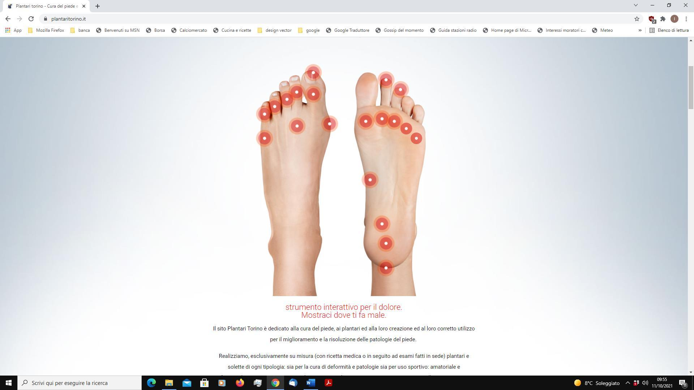

Il piede
Il piede umano e le sue principali patologie, organizzati in forma enciclopedica: anatomia, tipologie di appoggio, dolore, ortesi plantari, analisi del passo, piede diabetico e prevenzione.
Voci totali212
Patologie58
Plantari e ortesi77
Le informazioni hanno scopo divulgativo e non sostituiscono la valutazione di un medico, podologo o professionista sanitario qualificato.

Indice


Nessuna voce corrisponde alla ricerca.
Introduzione
1 voci estratte e ordinate dal documento originale.
Conosci il tuo piede
11 voci estratte e ordinate dal documento originale.
IL NOSTRO PIEDE
Il nostro piede è composto da ben 26 ossa e che è formato da due archi ortogonali nel piede (l’arco longitudinale e l’arco trasverso). Le caviglie agiscono tramite l'interazione del piede con la parte inferiore della gamba, quella composta da tibia e perone. Le ossa del piede sono legate insieme dai legamenti, mentre i muscoli del piede insieme alla fascia plantare forniscono un supporto secondario. Nel piede troviamo anche cuscinetti adiposi per
aiutare a sostenere il peso e ad assorbire gli impatti durante i salti, il cammino e la corsa. Quando senti dolore o disagio, è una chiara indicazione che qualcosa non funziona. La modalità ed il momento in cui si verifica questa, patologia può aiutare a determinare la causa e la gravità della patologia.
Cosa Causa Il Dolore Ai Piedi
Traumi, malattie e lesioni possono essere le cause più probabili del nostro dolore al piede. Anche lo scarso allineamento biomeccanico ed il tipo di calzature possono essere le cause che concorrono a causare dolore o disagio. Le scarpe strette o allacciate e chiuse troppo strette possono causare dolore sulla parte superiore del piede, se invece siete soliti ad allacciare male o a lasciare i lacci troppo laschi potreste incorrere in acquisti di scarpe
troppo corte. I tacchi alti invece possono causare dolore intorno alla pianta del piede appena sotto le dita dei piedi. Il dolore ed il gonfiore in una zona specifica per un periodo troppo prolungato evidenzia un possibile problema. Alcuni approfondimenti quando avverti il dolore saranno utili per identificare il problema, e trovare una possibile soluzione. Il dolore è influenzato dalla pressi one di carico a terra? Lo senti quando c'è il movimento del
piede? Influisce sul modo in cui cammini provocandoti un appoggio innaturale? Clicca sull'immagine sopra nella zona dove ti fa male. Vedrai alcune delle patologie che potrebbero causarti dolore o disagio. Le immagini e le relative nozioni sono a solo scopo di informazione/educazione generale e NON sono progettate per diagnosticare una patologia che dev’essere valutata e confermata sempre da uno specialista. Per la valutazione dei sintomi individuali si prega di consultare un professionista sanitario autorizzato!
Tipi di arco
ARCO BASSO/PIEDI PIATTI
Caratteristiche: Piede molto flessibile con arco plantare basso. Poca definizione dell'arco. Potenziali problemi: iperpronazione, fascite plantare, tendinite post -tibiale, sperone calcaneare, problemi al ginocchio mediale valgo, borsiti. Plantari: i plantari dovrebbero incorporare il supporto mediale del retropiede e il supporto dell'arco plantare per mantenere il piede allineato e aiutare a controllare l'iperpronazione
Non preoccuparti! Circa il 20% della popolazione ha archi bassi, quindi sei in buona compagnia! Gli archi bassi sono più flessibili e tendono a cadere verso l'interno e a pronarsi eccessivamente. In genere, le impronte o le scansioni 3d per il tipo di piede mostrano l’impronta di quasi tutto il piede. Gli archi bassi sono spesso squilibrati dal punto di vista biomeccanico e possono rendere i piedi più suscettibili ai comuni problemi ai piedi
come dolore al tallone, dolore all'arco plantare e fascite plantare. La buona notizia è che calzature e plantari giusti, possono aiutarti a raggiungere un corretto allineamento del corpo, prevenire lesioni e mantenere uno stile di vita sano e attivo.
ARCO MEDIO
Caratteristiche: Piede biomeccanicamente efficiente. Piede moderatamente flessibile. Arco definito. Problemi potenziali: suscettibile a problemi comuni del piede come dolore al tallone e metatarsalgia da stress ripetitivo con calzature inadatte. Plantari: i plantari dovrebbero avere supporto per l’arco plantare, ammortizzazione e materiali che assorbono gli urti per il comfort e la prevenzione del dolore al piede. Per fortuna circa il 60% della popolazione ha archi medi quindi, se il tuo piede assomiglia a questo hai minori
probabilità di incorrere in patologie gravi e problemi. Gli archi medi sono spesso efficienti dal punto di vista biomeccanico, ma possono comunque essere soggetti a problemi comuni del piede come dolore al tallone o fastidio all'avampiede. In genere, le impronte o le scansioni per il tipo di piede mostrano circa metà dell'area dell'arco con avampiede e retropiede ben definiti. I tuoi piedi essendo sempre in movimento, trarranno grandi benefici dall’ ammortizzazione, e dall’assorbimento
degli urti con un supporto dell’arco. Le calzature ed i plantari corretti possono aiutarti a raggiungere un corretto allineamento del corpo, prevenire lesioni e mantenere uno stile di vita sano e attivo.
ARCO ALTO
Caratteristiche: Piede molto rigido con un arco più sollevato da terra. E’un arco ben definito, che impone un eccessiva pressione sul retropiede e sull'avampiede. Potenziali problemi: fascite plantare, sindrome del dolore al tallone, stiramento dell'arco, metatarsalgia, calli, e dita a martello. Plantari: i plantari dovrebbero avere un adeguato supporto per l'arco, cuscinetti metatarsali per il sollievo dell'avampiede e forti proprietà ammortizzanti sul tallone.
Non preoccuparti! Oltre il 20% della popolazione ha il piede cavo con archi alti, quindi condividi con un quinto della popolazione le caratteristiche del tuo arco! Gli archi alti sono generalmente classificati come supinati (che appoggiano sul lato esterno del piede) e sono più rigidi degli altri piedi. In genere, le impronte o le scansioni 3d per identificare la tipologia di piede mostrano principalmente il tallone e l'avampiede, con pochissima superficie
dell'arco. Quando camminiamo o corriamo, i nostri piedi assorbono la maggior parte dell'impatto e dei traumi. Con gli archi alti hai meno superficie per assorbire l'impatto ed eserciti una pressione eccessiva sulle aree del tallone e dell'avampiede. Questo può renderti suscettibile a patologie del piede quali il dolore al tallone, il dolore alla pianta del piede o le fasciti plantari. La buona notizia è che i plantari realizzati nella maniera corretta possono aiutare a riempire la cavità dell' arco
plantare. Dissipa il carico e le pressioni eccessive, fornendo l'ammortizzazione e l'allineamento necessario per prevenire lesioni e mantenere uno stile di vita sano e attivo.
VUOI CONOSCERE IL TUO TIPO DI ARCO?
Per conoscere al meglio la forma, le dimensioni, le pressioni ed i movimenti dei piedi, ti consigliamo di eseguire la scansione 3d dei piedi almeno una volta all'anno. La scansione 3d del piede è un servizio gratuito che registrerà tutto ciò che vuoi sapere sulla tipologia del tuo arco, la pronazione, i punti di pressione, il dimensionamento e persino l’analisi dell'andatura se eseguito sulla baropodometria in biodinamica (questa è invece,un’analisi della
durata di un ‘ora eseguita a pagamento con prenotazione necessaria. Con questi test puoi comprendere in prima persona perché senti dolore, non solo ai piedi, ma anche in altre parti del corpo. Ricorda, i tuoi piedi sono la base per la salute ed il benessere generale del corpo. Visita oggi il nostro IN PIEDI store per iniziare un innovativo percorso di benessere. Immagina una tecnologia in grado di farti sentire bene in piedi in meno di 30 secondi. Grazie alla tecnologia di
scansione, puoi beneficiare di una straordinaria esperienza di visualizzazione e dimensionamento 3D che ti fornirà una soluzione personalizzata selezionata per aiutarti a condurre uno stile di vita sano e attivo. Che tu sia un atleta di livello mondiale o un insegnante di scuola che rimane a lungo in piedi, abbiamo una soluzione plantare per ogni tipo di calzatura uso ed attività.
TIPOLOGIA DI PIEDI
I tipi di piede sono principalmente tre, il greco, l’egizio ed il romano, ognuno di questi p
I tipi di piede sono principalmente tre, il greco, l’egizio ed il romano, ognuno di questi piedi si contraddistinguono per delle caratteristiche uniche. Il piede egizio ha le dita in scala decrescente, il piede greco ha una forma affusolata ed il piede romano appare piuttosto squadrato con le dita apparentemente tutte lunghe uguali. E tu quale hai? Guardando attentamente i propri piedi si possiamo conoscerci meglio. Con qualche consiglio professionale si può anche scegliere la calzatura più adatta
in base alla propria conformazione. Vediamo più nel dettaglio i tipi di piedi!
I tipi di piede: egizio, greco e romano
Piede Greco. Questa forma ha solitamente il secondo e terzo dito leggermente più lunghi rispetto all’alluce. In generale il piede appare più slanciato ed affusolato, è il piede di elezione che si sceglie per far indossare le scarpe più eleganti, strette e con tacco alto. Perché il piede si conforma maggiormente alla forma triangolare della scarpa. Uma Thurman tra le dive di americane, rientra in questa tipologia. Piede Egizio. Chi si ritrova in questa categoria ha le dita scalate, con l’alluce più lungo rispetto a tutte le dita vicine,
che si accorciano in maniera decrescente. Tra le vip di Hollywood i piedi di Julia Roberts hanno questa conformazione. Piede Romano o latino. È la forma più comune nella popolazione italiana, il piede latino assomiglia in pianta ad un rettangolo con la pianta larga. Primo, secondo e terzo dito sono della stessa lunghezza dell’alluce, talvolta anche il quarto e quinto dito sono lunghi in altri casi, decisamente più corti rispetto alle prime tre dita.
Tra le star più note Scarlett Johansson, ha questo tipo di piede. Quali calzature scegliere? In base alla conformazione del piede sarebbe meglio scegliere il modello di scarpe più adatto per evitare problemi di salute in futuro. Chi ha il piede greco è relativamente fortunato perché può più agevolmente utilizzare qualsiasi modello di calzatura, sempre senza esagerare: dai sandali alle scarpe da tennis. Per questo motivo i piedi “da modella”
sono una grande fortuna. Per la forma del piede egizio bisogna evitare le scarpe a punta, si consigliano invece calzature a punta tonda o calzature a punta squadrata e con un’allacciatura regolabile sul dorso del piede per renderla ben aderente al tallone. Tacchi alti o scarpe piatte sono da evitare per chi ha il piede romano: sono ideali le ballerine con tacco medio e scarpe con chiusura regolabile. In generale meglio preferire modelli ben sagomati e
con la punta molto squadrata e calzata ampia.
La caviglia e il piede. La caviglia è l’insieme delle articolazioni del piede che permettono
La caviglia e il piede. La caviglia è l’insieme delle articolazioni del piede che permettono al piede di eseguire tre differenti movimenti, ognuno su un diverso asse: L’asse trasversale attraversa i malleoli e si identifica con l'asse di rotazione dell'articolazione della tibia e del tarso, sulla quale avvengono i movimenti di flesso-estensione, la flessione dorsale (o dorsiflessione) e la flessione plantare (o plantarflessione).
L'asse longitudinale della gamba sul quale si compiono l’abduzione e l’adduzione. L'asse longitudinale del piede intorno al quale si attiva la rotazione interna e rotazione esterna. Il ruolo delle articolazioni podaliche. Il movimento di flesso-estensione è a carico della caviglia, mentre gli altri due movimenti sono eseguiti dalle articolazioni: astragalo-calcaneare medio-tarsica tarso-metatarsica e scafo-cuboidea. Il ruolo articolare del piede è di due tipologie.
Come prima funzione l’articolazione mette il piede in condizione di eseguire i tipici movimenti sopra descritti. Secondariamente gli permettono l’adattamento alle caratteristiche uniche di vari tipi di superfici, trasformando biomeccanicamente la forma, e creando un sistema di ammortizzazione elastica tra il terreno e la gamba, che consente una perfetta fase statica e dinamica. Le caratteristiche del piede. Rivelano un’importante complessità dovuta alla natura propria del piede, che ha funzioni
molte articolate, come quelle di presa delle dita, di equilibrio, di stabilità, di reazione sensitiva, ecct.
I movimenti di flesso/estensione del piede. La posizione corretta per valutare il grado di f
I movimenti di flesso/estensione del piede. La posizione corretta per valutare il grado di flessione ed estensione del piede è quella in cui il piano della pianta del piede è perpendicolare alla gamba il soggetto è in fase eretta e statica. In questa posizione la flessione del piede, consente al piede stesso di avvicinare il suo dorso alla faccia anteriore della gamba (dorsiflessione attribuibile alla caviglia) Con l’estensione, invece, la punta del piede si allontana dalla gamba assumendo una posizione equina che corrisponde
al prolungamento della gamba stessa. I movimenti di abduzione-adduzione del piede. La posizione di riferimento considera il piede collocato su un piano orizzontale. In caso di abduzione la punta del piede si sposta verso l’interno. In caso di adduzione la punta del piede si sposta verso l'esterno. I movimenti di estrarotazione (esterna) ed intrarotazione (interna) La posizione di riferimento è uguale a quella già considerata per il movimento di flessione ed estensione.
La rotazione interna, definita come supinazione, descrive un angolo di circa 50°. La rotazione esterna, definita come pronazione, descrive un angolo variabile da circa 20° a 25°.
Visione posteriore del piede destro, con tre differenti atteggiamenti
Posizionamento delle ginocchia vare o valghe
Enciclopedia delle patologie
58 voci estratte e ordinate dal documento originale.
1) ARTRITE
L’artrite è una delle principali cause di disabilità, ma quando il piede e la caviglia sono colpiti, può essere molto doloroso e può interferire gravemente con il cammino ed il movimento più in generale. Sebbene non esista una cura certa per l’artrite, esistono molte opzioni di trattamento, che possono aiutare ad alleviare il dolore ed il disagio che accompagna questi sintomi così ostinati da curare. Esistono principalmente tre tipi di artrite:
l’osteoartrite, l’artrite reumatoide e la gotta. L’osteoartrosi è una malattia degenerativa che colpisce le articolazioni. È la malattia articolare più comune. I primi sintomi di solito compaiono tra i 40 ei 50 anni, ma la malattia spesso inizia molto prima. L’osteoartrite, è caratterizzata dalla presenza di dolore meccanico che si accentua con lo sforzo provocando difficoltà nell’eseguire taluni movimenti articolari. Nei piedi, entrambi i tipi di artrite possono causare rigidità articolare, infiammazione e dolore, soprattutto
quando si cammina. L’artrite reumatoide è spesso accompagnata da alluce valgo, dita a martello, dolore al tallone ed al tendine d’Achille. L’artrite reumatoide è una malattia del sistema immunitario che colpisce il rivestimento delle articolazioni. Cause / sintomi L’artrite reumatoide di solito si verifica nelle mani e nei piedi e può portare a deformità delle articolazioni colpite. Nelle articolazioni, le superfici delle cartilagini si incrinano, sbriciolandosi ed infine scomparendo. Queste
degenerazioni portano alla distruzione più o meno rapida della cartilagine che riveste le estremità delle ossa. Quindi si formano escrescenze ossee che interferiscono con il movimento.
1) ARTRITE (continua)
Soluzioni Plantari: Indossare plantari per piede artrosico aiuta a sostenere l’arco del piede e distribuire la pressione sotto il piede. In combinazione con una barra retrometatarsale, l’ortesi riduce la pressione sulle teste metatarsali spesso dolorose. Indossare plantari aiuta anche a stabilizzare la caviglia e controllare la pronazione in tutte e tre le fasi della camminata, migliorando quindi il comfort del cammino.
Scarpe ortopediche: La scelta delle calzature è importante per aiutare con il sollievo dai sintomi. Scegliete una scarpa per piede artrosico con una calzata ampia dell’avampiede. La scarpa con lacci o velcro tipo polacchino è preferita in quanto i rinforzi alti aiutano a stabilizzare la caviglia. Anche le scarpe con tacco basso sono una buona scelta perché forniscono maggiore stabilità quando si cammina. Indossare tacchi alti è controindicato.
L’utilizzo di scarpe con suola biodinamica facilita il passo. Scarpe personalizzate su misura: La scelta delle calzature è importante per aiutare con il sollievo dai sintomi. Scegli una scarpa con un volume generoso della punta. La scarpa con lacci o velcro alte sopra la caviglia sono preferibili in quanto i rinforzi alti aiutano a stabilizzare la caviglia. Anche le scarpe con tacco inferiore a 3 cm. sono una buona scelta
perché forniscono maggiore stabilità quando si cammina. Indossare tacchi alti non è indicato. L’utilizzo di scarpe con suola biodinamica facilita anche la rullata dinamica del passo. ( vedi la sezione dedicata al FEETTING®)
2) Amputazione
L’amputazione è la rimozione di una porzione di osso e di tessuto molle. I piedi possono subire l’amputazione che può essere totale o parziale, unilaterale o bilaterale. Cause / sintomi: La principale causa di amputazione, nell’80% dei casi, è rappresentata dal danno vascolare. Le altre cause sono traumatiche, infettive, tumorali, congenite o dovute a congelamento ed ustioni. Le disabilità funzionali ed i disturbi dell’andatura associati alle amputazioni variano a seconda della sezione colpita dall’amputazione.
L’amputazione di una o più dita del piede produce uno squilibrio nell’avampiede, principalmente nella fase di propulsione. Soluzioni La protesi totale o parziale verrà utilizzata per sostituire il segmento mancante e per compensare al meglio la sua perdita funzionale.
1) ARTRITE (continua)
Soluzioni Plantari: Indossare plantari per amputazione aiuterà a stabilizzare il piede durante tutte e tre le fasi della deambulazione e servirà anche a distribuire bene la pressione sotto il piede poiché spesso c’è un sovraccarico sulle teste metatarsali delle dite amputate. Una piccola protesi (punta di riempimento per amputazione) installata sull’ortesi o nella scarpa sostituirà le dita mancanti svolgendo due funzioni quella stabilizzatrice e quella estetica.
Scarpe ortopediche di serie per amputazione: La scelta della scarpa deve tenere conto di diversi criteri. Innanzitutto le scarpe dovrebbero avere una suola larga in modo da ottimizzare la stabilità nel medio-laterale oltre ad essere spessa – tipo biomeccanico – per facilitare l’avanzamento e la rullata del passo. Dovrebbe anche avere una soletta rimovibile ed essere abbastanza profonda da accogliere l’ortesi e la falsa punta del riempimento per l’amputazione. Le scarpe con
lacci o velcro forniscono generalmente un buon supporto per il moncone. A secondo del livello di porzione amputata può essere utile utilizzare una calzatura con tomaia alta tipo a polacchino per ”agganciare la caviglia” facilitare la tenuta latero-laterale ed impedire la torsione del moncone. Scarpe personalizzate su misura per amputati: La scarpa modellata su misura è necessaria nei casi di amputazione più prossimale per fornire una migliore stabilità al moncone in alcuni casi è consigliabile l’utilizzo di una molla
intersuola in carbonio o acciaio armonico per irrigidire la suola ed impedire la flessione della stessa. Il volume interno della scarpa deve essere sufficiente per accogliere sia il moncone che la protesi di amputazione parziale del piede. La costruzione della scarpa dovrebbe essere abbastanza rigida da stabilizzare il tallone. L’allargamento del tallone (campanatura laterale o mediale) è spesso necessaria per stabilizzare la caviglia e l’intero arto inferiore. L’aggiunta di
una suola biomeccanica è spesso richiesta e può aiutare l’avanzamento del passo.
3) ALLUCE VALGO
Una delle patologie femminili più frequenti è certamente l’alluce valgo. La causa principale è data dall’uso di calzature con tacchi troppo alti, ma non solo, sono sufficienti a far danno anche calzature basse ma comunque troppo strette e talvolta corte sulla punta, per indurre la rotazione del primo raggio e la conseguente valgizzazione dell’alluce. In alcuni casi l’origine può essere ereditaria, (ereditario, però per nostra esperienza può essere più spesso
l’atteggiamento eccessivamente permissivo da un punto di vista estetico, verso l’acquisto di calzature inadeguate). Consiste nella deformazione della prima falange dell’alluce, che si piega verso le altre dita generando una borsite, meglio conosciuta come cipolla. È curata con un’operazione chirurgica ambulatoriale, chiamata osteotomia percutanea distale del primo metatarso, che ricolloca l’osso della falange nella giusta posizione. Subito dopo
l’operazione, visto che il piede non va ingessato, si può camminare tranquillamente con delle calzature specifiche
3) ALLUCE VALGO (continua)
(calzatura di Baruk o podalux o podartis PO 500) che permettono un appoggio congeniale evitando così l’insorgenza di ematomi o gonfiori. Prima di optare però come unica soluzione per quella chirurgica, prendete in considerazione l’utilizzo di calzature a pianta larga regolabili, con l’ausilio di plantari per alluce valgo e divaricatori notturni e divaricatori diurni. E’ auspicabile che il paziente una volta operato, non torni ad utilizzare le stesse calzature che hanno facilitato o indotto
al valgismo, per evitare complicate e dolorose recidive. (vedi la sezione dedicata al FEETTING® per l’acquisto della scarpa più coerente per il tuo piede)
4) Piede D’Atleta
Definizione
Il piede d'atleta è un'infezione micotica che può causare un arrossamento della pelle, derma secco e desquamato, a volte accompagnata da prurito e/o dolore. La condizione solitamente si verifica tra le dita dei piedi e/o sulle piante e/o sui lati dei piedi. Solitamente si verifica nelle persone i cui piedi sudano copiosamente, quando sono calzati nelle scarpe. Il piede d'atleta può anche presentare vesciche che danno prurito e talvolta "lacrimano". Il piede d'atleta è contagioso e può
diffondersi attraverso il contatto condiviso tra pavimenti, asciugamani, calzature e/o vestiti.
Causa
Le infezioni micotiche come il piede d'atleta sono spesso contratte nelle docce, nelle palestre, negli spogliatoi, negli armadietti della piscina, in saune, spa o in altre aree calde e umide dove i funghi possono prosperare. Il nome della patologia deriva dal fatto che gli atleti trascorrono la maggior parte del tempo in questi ambienti e quindi sono a maggior rischio di queste infezioni. Una volta presenti sui piedi le spore, possono entrare in fissurazioni, piaghe o microlesioni proliferando e diffondendosi,
a meno che i piedi non vengano accuratamente lavati e asciugati accuratamente dopo l'esposizione all’infezione.
Il piede d'atleta può diffondersi, se il paziente tocca o graffia l'infezione dalle dita dei
Il piede d'atleta può diffondersi, se il paziente tocca o graffia l'infezione dalle dita dei piedi e le unghie dei piedi ad a ltre parti del corpo, compreso l'inguine o le ascelle. Come qualsiasi patologia del piede, il piede d'atleta necessita di maggior attenzione nelle persone con diabete e con sistemi immunitari compromessi che sono più suscettibili allo sviluppo di infezioni. Infezioni che possono portare a gravi
problemi medici.
Trattamento E Prevenzione
Una attenta igiene del piede può prevenire il piede d'atleta. E’ molto importante il lavaggio quotidiano dei piedi con acqua e sapone dev’essere seguito da un'accurata asciugatura, soprattutto tra le dita. Indossare scarpe e calzini asciutti, non prendere in prestito calzature da altri, evitare calze strette e usare la polvere per i piedi che aiuta a mantenere i piedi asciutti e privi di infezioni. Quando si utilizzano docce pubbliche o piscine è buona consuetudine indossare scarpe da
doccia come le BIRKENSTOCK IN E.V.A. Una volta che si è verificata l'infezione, è importante consultare un medico, far diagnosticare correttamente il problema e trattarlo prontamente. Le infezioni possono essere ostinate e difficili da trattare e possono diventare croniche. I piani di trattamento includono farmaci antimicotici da prescrizione, topici o orali, con un riguardo attento nel mantenere i piedi puliti e asciutti.
Continua a consultare il tuo medico del piede fino a quando il problema non viene risolto.
5) Alluce Rigido
L’alluce rigido è un disturbo caratterizzato dalla reale rigidità dell’alluce che non riesce più a piegarsi né ad essere piegato in (plantarflessione o in alcuni casi anche in dorsiflessione).
Accade quando si forma uno sperone osseo proprio sulla testa del metatarso che blocca quindi
Accade quando si forma uno sperone osseo proprio sulla testa del metatarso che blocca quindi tutto il dito. Tale problema provoca dolore sia nella deambulazione sia nelle altre attività che coinvolgono i piedi, come fare le scale o mettersi in punta di piedi. Le cause possono essere diverse: traumi ripetuti, artrosi e naturale invecchiamento dei tessuti e conseguente sclerosi degli stessi. La soluzione è spesso chirurgica: l’ortopedico interviene attraverso una procedura chiamata chelotomia,
che consiste nella rimozione degli elementi che bloccano il movimento dell’articolazione, sostituendo le ossa in questione con delle protesi o attraverso l’osteotomia decompressiva, che va ad alleggerire il carico. Si consiglia, l’utilizzo di una calzatura con suola biomeccanica rigida, (vedi la sezione dedicata al FEETTING® per l’acquisto della scarpa più coerente per il tuo piede) per permettere le fasi del passo senza insistere sulla dorsiflessione
del 1° raggio. La calzatura dev’essere corredata da un plantare per alluce rigido che redistribuisca i carichi.
6) Piede Artrosico
L‘artrosi, a differenza dell’artrite, non è una malattia infiammatoria, ma una forma degenerativa cronica. Colpisce soprattutto le persone più avanti con gli anni perché è connessa all’usura delle articolazioni. Le strutture articolari più frequentemente colpite sono quelle maggiormente sollecitate dal peso e dall’attività, tra cui ginocchia, anche, spalle, mani, piedi e colonna vertebrale. Con il processo degenerativo dell’artrosi si assiste ad un assottigliamento della
cartilagine articolare in seguito a deformità ossee che causano il dolore e i sintomi specifici dell’artrosi, particolarmente evidenti a livello delle falangi distali delle mani, per esempio. A livello ortesico, le soluzioni possono essere il plantare per piede artrosico ortesi realizzata in materiale morbido, baroformabile, che si adegua morbidamente alla dinamica del passo consentendo una rullata biodinamica che dev’essere accompagnata da una calzatura con suola biodinamica.
7) CALCANEITE, FRATTURE E TRATTAMENTI DEL CALCAGNO
L’osso del tarso, è situato nella parte inferiore e posteriore del piede. Il calcagno forma la protuberanza del tallone e l’appoggio posteriore della volta plantare. La sua faccia superiore, il talamo, si articola con l’astragalo, mentre la faccia posteriore si inserisce nel tendine di Achille. Patologie Le fratture del calcagno, di riscontro frequente sono in genere scomposte, e normalmente dovute a traumi violenti quali cadute dall’alto. Il loro trattamento può essere funzionale
(rieducazione immediata con stampelle) oppure ortopedico; in caso di spostamento osseo importante, si può ricorrere alla chirurgia. Una frattura mal consolidata del calcagno può avere conseguenze quali artrosi e formazione di un callo osseo che non rispetta l’anatomia dell’osso stesso, a cui è necessario porre rimedio con una fusione chirurgica (artrodesi dell’astragalo e del calcagno). La calcaneite è l’infiammazione che colpisce la zona in cui si fissano, sotto il
calcagno, i tendini situati nella pianta del piede. Causa dolore o rigonfiamento, avvertiti dal paziente mentre cammina. Inoltre, la radiografia può rivelare la presenza di una spina calcaneare (piccola salienza ossea nella parte inferiore del calcagno). Il trattamento consiste nell’applicazione di plantari ortopedici per calcaneite e calzature con suola biodinamica, associate a infiltrazioni locali di cortisonici.
8) Piede Cavo
Il Piede cavo è una patologia che contrariamente al piede piatto evidenzia un’arco plantare troppo sviluppato. Il peso del corpo scarica solo sul tallone e sui metatarsi e non sul piede in maniera uniforme. Può essere di
7) CALCANEITE, FRATTURE E TRATTAMENTI DEL CALCAGNO (continua)
natura congenita o acquisita ed ha ripercussioni sull’equilibrio dell’individuo perché riduce la base d’appoggio rispetto alla norma. Nell’età infantile il disturbo può essere curato con l’aiuto di plantari ortopedici per piede cavo, così come nell’adulto ad eccezione dei casi più estremi in cui può essere necessario un intervento chirurgico (osteotomia, asportazione dell’osso, artrodesi). Le conseguenze più comuni del piede cavo sono la
metatarsalgia, le problematiche al tallone ( tallodinie, talalgie, fasciti, talloniti e speroni o spine ), le distorsioni alla caviglia e il neuroma di Morton.
9) Cheratosi Plantare In Dita A Martello
Le cheratosi plantari, sono spesso presenti sulle dita a martello o en griffe, le falangi appaiono uncinate verso il basso. Sono una conseguenza comune dei piedi cavi, di neuropatie o dell’uso di calzature troppo strette o corte sulla punta. La falange in cui si trova l’unghia si ritrae curvandosi procurandosi numerosi calli da conflitto sopra e sotto le articolazioni, dovuti al contatto con le calzature. Tale problema può essere risolto attraverso un intervento chirurgico
che rimodella le ossa e i tendini che determinano la forma innaturale delle dita, e soprattutto ponendo una grande attenzione alle calzature utilizzando scarpe con tomaia automodellante per evitare un riproporsi del problema una volta intervenuti chirurgicamente. Se cerchi solette per dita a martello o plantari per dita a martello che non aumentino il problema e ti facciano camminare confortevolmente, puoi rivolgerti a noi. Un team esperto di
tecnici ortopedici e dinamisti plantari vi aspetta in Via Orvieto 19 a Torino per fornirvi consulenze e servizi di analisi e test per proporv i la soluzione più corretta per i vostri passi.
10) Sindrome Di Charcot
È una sindrome quasi sconosciuta ai più, ma decisamente grave e a carico delle ossa del piede che si “rompono” deformando l’arto. Il piede di Charcot è la più grave delle neuropatie diabetiche che si caratterizza prima con infiammazioni e microfratture dol orose e poi con una deformazione grave delle articolazioni. Quando il piede si deforma, compaiono ferite e ulcere che possono infettarsi, rendendo necessaria talvolta
l’amputazione delle parti infettate. Ci sono adeguate scarpe con suola biodinamica da completare con plantari per sindrome di Charcot, soluzione che vi aiuterà a sviluppare una camminata più sicura e confortevole. Si può intervenire nei casi più gravi, immobilizzando il piede con uno stivaletto ortopedico idoneo, evitando così che appoggi a terra per evitare fratture ulteriori o lesioni. Un team esperto di tecnici ortopedici e dinamisti plantari vi aspetta in Via Orvieto 19 a Torino per fornirvi
consulenze e servizi di analisi e test per proporvi la soluzione più corretta per i vostri passi.
11) SPINA CALCANEARE
La spina calcaneare: è un disturbo spesso asintomatico, fatta eccezione per gli sportivi. È caratterizzato da un’infiammazione della fascia plantare che arriva fino al tallone e può comparire come conseguenza di una fascite plantare cronicizzata. La cura è direttamente collegata al tipo di vita del paziente: se è uno sportivo è necessario intervenire chirurgicamente in quanto la sollecitazione frequente della zona è molto dolorosa.
Nel paziente sedentario è possibile somministrare una terapia farmacologica a base di antinfiammatori non prima di aver utilizzato dei plantari per spina calcaneare. La spina calcaneare viene spesso confusa con la sindrome di Haglund o con una semplice tendinite visti i numerosi sintomi comuni. Una calzatura con un tacco pronunciato facilita la detensione del tendine titolato a creare il CALLI Il callo è una protuberanza situata sulle dita dei piedi. Deriva dall’ispessimento e dall’indurimento della pelle dovuto a
pressioni o attriti eccessivi e prolungati. Tra le cause che favoriscono la formazione dei calli vi sono la cattiva distribuzione del peso sul piede, la deformazione delle dita (a martello, alluce valgo) e l’uso di scarpe troppo corte, troppo strette o troppo appuntite. Soluzioni Plantari: Indossare plantari di scarico e compenso Biodinamico® con una bozza metatarsale aiuta a stabilizzare il piede nella scarpa e distribuire meglio i punti di pressione sotto il piede. Potrebbe essere necessario
indossare un tubolare antipressione in oleogel, per diminuire l’attrito con la calzatura. Scarpe ortopediche: Per la massima efficienza, la scarpa deve rispettare l’anatomia e la forma del piede (lunghezza, larghezza e profondità), avere un volume generoso nella parte anteriore per garantire comfort ed eliminare i punti di pressione. Inoltre la scarpa deve avere un sottopiede estraibile, essere priva di cuciture nella parte anteriore per evitare
attriti con le dita dei piedi, avere buoni rinforzi sul retro per garantire un buon sostegno ed essere dotata di lacci o velcro. ( vedi la sezione dedicata al FEETTING®)
12) CHERATOSI PLANTARE.
L'ipercheratosi è un ispessimento dell'epidermide, causato da un'alterazione quantitativa dei cheratinociti. L'ipercheratosi interessa principalmente l'ambito dermatologico, ma talvolta può essere legata ad eventi patologici a carattere sistemico. In qualche caso, può essere una risposta adattativa dell'epidermide, attraverso la quale la pelle diventa più resistente a sollecitazioni meccaniche continue e prolungate nel tempo (così accade, ad esempio, nel caso delle cosiddette
callosità o "calli"). In pratica, si tratta di un meccanismo di difesa che il corpo attua per proteggere la superficie cutanea. In questo caso cercare ed individuare la causa nell’uso di calzature inadatte e solette troppe strette e rigide può essere la chiave di volta per risolvere il problema. Plantari per cheratosi plantare, e calzature predisposte sono un aiuto concreto. L'ipercheratosi può anche essere l'espressione di processi patologici locali sistemici,
quali infiammazioni, infezioni, esposizione cronica ai raggi ultravioletti e dismetabolismi. Il trattamento dell'ipercheratosi varia a seconda della malattia di base, ma si avvale, di solito, dell'impiego di pomate, paste o soluzioni cheratolitiche, che hanno la capacità di asportare, ammorbidendole, le porzioni di pelle ispessite.
13) Duroni
La formazione di duroni è causata da un accumulo di cellule morte della pelle che si induriscono in una una zona specifica soggetta a conflitti del piede con la calzatura. Questa formazione di duroni è il meccanismo di difesa del corpo per proteggere il piede da pressioni e attriti eccessivi. I duroni come i calli si trovano normalmente sull'avampiede, sul tallone e/o all'esterno dell'alluce. Alcuni tipi di duroni possono essere particolarmente dolorosi per
la pressione. Questa condizione viene spesso definita cheratosi plantare intrattabile.
Causa
I duroni si sviluppano a causa dell'eccessiva pressione in un'area specifica del piede. Alcu
I duroni si sviluppano a causa dell'eccessiva pressione in un'area specifica del piede. Alcune cause comuni di formazione di duroni sono scarpe eleganti con tacco alto, scarpe troppo piccole, obesità, anomalie nel ciclo del passo (movimento del cammino), piedi piatti, piedi cavi, protuberanze ossee e perdita del cuscinetto adiposo sul fondo del piede.
Trattamento E Prevenzione
Molte persone cercano di alleviare il dolore causato dai calli riducendoli con lime podologiche o tagliandoli con una lametta o un “credo”. Questo non è il modo di trattare adeguatamente i calli, a meno che non sia fatto da un professionista. Questa modali tà è molto pericolosa e può peggiorare la condizione causando lesioni non necessarie. Soprattutto i diabetici non dovrebbero mai provare questo tipo di trattamento. Per alleviare l'eccessiva
pressione che porta alla formazione del durone, il peso dovrebbe essere ridistribuito equamente con l'uso di un plantare. Un plantare efficace trasferisce la pressione lontano dai "punti caldi" o dalle aree di alta pressione per consentire al durone di guarire. Il plantare per duroni deve essere realizzato con materiali che assorbono gli urti e le forze di taglio (attrito). Le donne dovrebbero anche evitare di indossare scarpe col tacco alto, ma utilizzare calzature
predisposte con pianta larga. Come sempre, la chirurgia dovrebbe essere l'ultima risorsa.
14) Dolore Al Tallone
Definizione
Il dolore al tallone è una condizione comune in cui il carico sul tallone provoca estremo disagio.
Causa
Esistono due diverse tipologie di dolore al tallone. Il primo viene causato da ripetuti stress in un punto specifico del piede. Questa condizione, spesso definita "sindrome del dolore al tallone", può essere causata da scarpe con tacchi troppo bassi, da un cuscinetto adiposo troppo sottile nella zona del tallone o da un improvviso aumento del peso o dell'attività. La fascite plantare, una diagnosi molto comune di dolore al tallone, è solitamente causata da un problema biomeccanico,
come l'iperpronazione (piede piatto). La fascia plantare è un'ampia fascia di tessuto fibroso che corre lungo la superficie inferiore del piede, dal tallone attraverso il mesopiede e nell'avampiede. L'eccessiva pronazione può causare un eccessivo allungamento e infiammazione della fascia plantare con conseguente dolore nelle aree del tallone e dell'arco
I duroni si sviluppano a causa dell'eccessiva pressione in un'area specifica del piede. Alcu
del piede. Spesso il dolore sarà più intenso al mattino o dopo un lungo periodo di riposo. Il dolore può diminuire gradualmente con il progredire della giornata.
Trattamento E Prevenzione
Per trattare adeguatamente il dolore al tallone, devi assorbire gli urti, fornire ammortizzazione ed elevare il tallone per trasferire la pressione. Ciò può essere ottenuto con una talloniera per tallonite in materiale shock absorber, una talloniera viscoelastica in silicone o un plantare per tallonite progettato con materiali che assorbono gli urti e le forze di taglio. Quando la patologia è correlata alla pronazione (di solito da origine anche ad una fascite plantare), un plantare
con supporto mediale ed un buon supporto dell'arco controllerà la pronazione e preverrà l'infiammazione della fascia plantare. Anche la scelta delle calzature è un criterio importante nel trattamento del dolore al tallone. Le scarpe con un tallone stabile semirigido nel contrafforte, un buon supporto dell'arco plantare ed un'altezza del tallone adeguata sono la scelta ideale. Inoltre, interrompere il ciclo del dolore con l'uso di farmaci antinfiammatori orali, iniezioni di cortisone,
stretching e ghiaccio sono tutti trattamenti utili alla risoluzione del problema. Se il problema persiste, consultare il medico specialista.
15) Dolore Dell’Arco/ Tensione Dell’Arco
https://www.foot.com/foot-conditions/arch-pain-arch-strain/
Definizione
Il termine dolore all'arcata (spesso indicato come tensione dell'arcata) si riferisce ad un'infiammazione e/o sensazione di bruciore all'arco del piede.
Causa
Ci sono molti fattori diversi che possono causare dolore all'arcata. Spesso la causa diretta può essere uno squilibrio strutturale o una lesione al piede. Tuttavia, più frequentemente la causa è una patologia comune chiamata fascite plantare. La fascia plantare è un'ampia fascia di tessuto fibroso situata lungo la superficie inferiore del piede che va dal tallone all'avampiede. L'eccessivo allungamento della fascia plantare, solitamente dovuto a un'eccessiva pronazione
I duroni si sviluppano a causa dell'eccessiva pressione in un'area specifica del piede. Alcu
(piedi piatti), provoca la fascite plantare. L'infiammazione causata dall'allungamento della fascia plantare dal tallone spesso porta a dolore nelle aree del tallone e dell'arco. Il dolore è spesso estremo al mattino quando un individuo si alza per la prima volta dal letto o dopo un periodo di riposo prolungato. Se questa condizione non viene trattata e la tensione sull'arco longitudinale continua, può svilupparsi una sporgenza ossea, nota come sperone calcaneare.
Trattamento E Prevenzione
Questa è una condizione comune del piede che può essere facilmente trattata. Se soffri di dolore all'arcata plantare, evita le scarpe col tacco troppo alto quando possibile. Prova a scegliere calzature con un tacco ragionevole, tomaie in morbida pelle, suole ammortizzanti e plantari rimovibili. Quando il dolore all'arco è correlato alla pronazione (piede piatto), per il trattamento del dolore si consiglia un plantare progettato con un tallone mediale e un adeguato supporto
dell'arcata. Questo tipo di plantare controllerà l'iperpronazione, sosterrà l'arcata e fornirà il sollievo necessario. Se il problema persiste, consultare il medico del piede.
16) Diabete, Piede Diabetico E Vasculopatia Periferica
Definizione
Il diabete è una malattia grave che può svilupparsi dalla mancanza di produzione di insulina nel corpo o dall'incapacità dell'insulina del corpo di svolgere le sue normali funzioni quotidiane. L'insulina è una sostanza prodotta dalla ghiandola del pancreas che aiuta a elaborare il cibo che mangiamo ed a trasformarlo in energia. Il diabete colpisce circa 3 milioni di italiani ed è classificato in 2 diversi tipi: tipo 1 e tipo 2. Il tipo 1 è solitamente associato al diabete giovanile ed è spesso
legato all'ereditarietà. Il tipo 2, comunemente indicato come diabete ad esordio nell'età adulta, è caratterizzato da elevati livelli di zucchero nel sangue, spesso in persone in sovrap peso o che non hanno seguito adeguatamente la loro dieta. Molte complicazioni possono essere associate al diabete. Il diabete sconvolge il sistema vascolare, colpendo molte aree del corpo come occhi, reni, gambe e piedi.
Neuropatia
Dei tre milioni di italiani con il diabete, il 25% svilupperà problemi ai piedi legati a questa patologia. Le condizioni del piede diabetico si sviluppano da una combinazione di cause tra cui la cattiva circolazione e la neuropatia. La neuropatia
I duroni si sviluppano a causa dell'eccessiva pressione in un'area specifica del piede. Alcu
diabetica può causare insensibilità o perdita della capacità di percepire distintamente dolore, calore e freddo. I diabetici che soffrono di neuropatia possono sviluppare piccoli tagli, graffi, vesciche o piaghe da decubito di cui potrebbero non essere con sapevoli a causa dell'insensibilità. Se queste lesioni minori non vengono trattate, possono verificarsi complicazioni e portare a ulcerazioni e nei casi più gravi e drammatici anche all'amputazione. La neuropatia può anche
causare deformità come borsiti, d ita a martello e piedi di Charcot. È molto importante che i diabetici prendano le precauzioni necessarie per prevenire tutte le lesioni legate al piede. A causa delle conseguenze della neuropatia, l'osservazione quotidiana dei piedi è fondamentale.
Cattiva Circolazione
Il diabete spesso porta a una malattia vascolare periferica che inibisce la circolazione sanguigna di una persona. Con questa patologia, c'è un restringimento delle arterie che spesso porta a una circolazione significativamente ridotta nella parte inferiore delle gambe e dei piedi. La cattiva circolazione contribuisce ai problemi del piede diabetico riducendo la quantità di ossigeno e nutrimento forniti alla pelle e ad altri tessuti, causando una cattiva guarigione delle lesioni. Una
cattiva circolazione può anche portare a gonfiore e secchezza del piede. Prevenire le complicanze del piede è più critico per il paziente diabetico perché la cattiva circolazione compromette il processo di guarigione e può portare a ulcere, infezioni e altre gravi patologie correlate del piede.
Trattamento E Prevenzione
Calzature e plantari svolgono un ruolo importante nella cura del piede diabetico. Solitamente si consigliano plantari progettati con schiuma biodinamica, il materiale numero 1 per la protezione del piede diabetico insensibile. Il Biodinaform® è un material e termo -baroformabile progettato per adattarsi ai punti di massima pressione trasformandosi grazie al calore ed alla pressione. Personalizzando l’impronta del piede, il Biodinaform® offre il comfort
e la protezione necessari per la cura del piede diabetico. Anche le calzature costruite con Biodinaform® sono raccomandate frequentemente per il paziente diabetico. Le calzature per diabetici dovrebbero anche fornire i seguenti
benefici protettivi:
Punta alta e larga (spazio alto e ampio nella zona della punta) Solette estraibili per flessibilità di calzata e possibilità di inserire plantari se necessario. Suole Rocker rigide o semirigide progettate per ridurre la pressione nelle aree del piede più suscettibili al dolore, in particolare l'avampiede. Contrafforti del tallone fermi per supporto e stabilità.
Tomaie termoformabili ed elastiche per accogliere eventuali deformità delle dita.
Se sei diabetico, dovresti prestare particolare attenzione a eventuali problemi che potresti avere ai piedi. È molto importante per i diabetici con neuropatia prendere le precauzioni necessarie per prevenire lesioni e mantenere i piedi sani. Se hai il diabete e stai riscontrando un problema ai piedi, consulta immediatamente il tuo medico specialista.
Cura Dei Piedi E Diabete
Una corretta cura dei piedi è particolarmente critica per i diabetici perché sono soggetti a problemi ai piedi come: Perdita di sensibilità nei loro piedi Cambiamenti nella forma dei loro piedi Ulcere del piede o piaghe che non guariscono La semplice cura quotidiana dei piedi, può prevenire seri problemi, i seguenti semplici passaggi quotidiani aiuteranno a prevenire le più gravi complicazioni del diabete: 1. Prenditi cura del tuo diabete. Fai scelte di vita sane per mantenere il livello di zucchero nel sangue vicino alla
normalità. Collabora, ascolta e segui le indicazioni del tuo team sanitario per creare un piano per il diabete che si adatti alle caratteristiche del tuo problema e adatta il tuo stile di vita. 2. Controlla i tuoi piedi ogni giorno Potresti avere problemi ai piedi di cui potresti non essere a conoscenza. Controlla i tuoi piedi cerca eventuali tagli, piaghe, macchie rosse, gonfiore o unghie infette. Controllare i piedi dovrebbe diventare parte della tua routine quotidiana. Se hai difficoltà a piegarti per
vedere i tuoi piedi, usa uno specchio di plastica per aiutarti. Puoi anche chiedere a un familiare di aiutarti. Promemoria importante: assicurati di chiamare immediatamente il medico se un taglio, una ferita, una vescica o un livido sul piede non guariscono dopo un giorno. 3. Lava i piedi ogni giorno Lava i piedi in acqua tiepida o fredda se non puoi controllare la temperatura, MAI
CALDA. Prima di fare il bagno o la doccia, prova l'acqua per assicurarti che non sia troppo calda. Dovresti usare
un termometro, una volta lavati asciuga SEMPRE bene i piedi. Assicurati di asciugare tra le dita dei piedi. Usa del talco per mantenere la pelle asciutta tra le dita dei piedi. 4. Mantieni la pelle morbida e liscia, strofina uno strato sottile di lozione o crema per la pelle sulla parte superiore e inferiore dei piedi. Non mettere la lozione tra le dita dei piedi, perché potrebbe causare un'infezione.
5. Indossa sempre scarpe e calzini, consigliamo di utilizzare calzini di colore chiaro, e di
5. Indossa sempre scarpe e calzini, consigliamo di utilizzare calzini di colore chiaro, e di osservarli attentamente quando si tolgono per cogliere eventuali lesioni. Non camminare a piedi nudi, nemmeno in casa. È estremamente facile calpestare qualcosa e ferirsi i piedi. Indossa sempre calze se possibile senza cuciture con le scarpe per evitare la possibilità che si sviluppino vesciche e piaghe. Assicurati di scegliere calzini senza cuciture
realizzati con materiali che allontanino l'umidità dai piedi e assorbano urti e forze di taglio. I calzini realizzati con questi materiali aiutano a mantenere i piedi asciutti. Controlla sempre l'interno delle scarpe prima di indossarle. Assicurati che la fodera sia liscia e che non ci siano oggetti estranei nella scarpa, come sassolini, cuciture o arricciature delle fodere. Indossa scarpe che calzino bene e proteggano i piedi, esiste una grande
varietà di calzature adatte alla patologia diabetica, affidati ad uno specialista in calzature e plantari per il diabete. 6. Proteggi i tuoi piedi dal caldo e dal freddo Indossa sempre le scarpe in spiaggia o sul marciapiede caldo. Metti la crema solare sulla parte superiore dei piedi per proteggerti dal sole. Tieni i piedi lontani da termosifoni o fuochi aperti. NON usare borse dell'acqua calda o termofori sui piedi. Se i tuoi piedi sono freddi, indossa calzini senza
cuciture di notte. Scegli i calzini con attenzione. NON indossare calze con cuciture o aree irregolari. Scegli calzini imbottiti per proteggere i tuoi piedi e rendere più confortevole la camminata. Quando fa freddo, controlla spesso i tuoi piedi per tenerli al caldo per evitare il congelamento. 7. Non usare nulla che possa fermare la circolazione su piedi e gambe, solleva i piedi quando sei seduto. Muovi le dita dei piedi per 5 minuti, 2 o 3 volte al giorno. Muovi le caviglie su e giù, in dentro e fuori per migliorare il flusso
sanguigno nei piedi e nelle gambe. NON incrociare le gambe per lunghi periodi di tempo.
NON indossare calze strette, elastici o elastici o giarrettiere intorno alle gambe.
NON indossare calzature o prodotti per piedi che comprimano o contengano troppo le dita. I prodotti per i piedi
che possano interrompere la circolazione ai piedi, come i prodotti con elastico, non devono essere indossati dai diabetici. Non fumare. Il fumo riduce il flusso sanguigno ai piedi. Se hai la pressione alta o il colesterolo alto, collabora con il tuo team di assistenza sanitaria per abbassarlo. 8. Sii più attivo chiedi al tuo medico di pianificare un programma di esercizi adatto a te. Camminare, ballare, nuotare e andare in bicicletta sono buone forme di esercizio che sono utili per i piedi. Evita tutte le attività che
mettono a dura prova i piedi, come correre e saltare. Includere sempre un breve periodo di riscaldamento o raffreddamento. Indossare scarpe da ginnastica per diabetici in calzate selezionabili o da passeggio protettive che si adattano bene e offrono un buon supporto. 9. Comunica con il tuo medico, chiedi al tuo medico di controllare le pulsazioni nei tuoi piedi almeno una volta all'anno. Chiedi al tuo medico di dirti immediatamente se hai gravi problemi ai piedi. Chiedi al tuo medico
5. Indossa sempre scarpe e calzini, consigliamo di utilizzare calzini di colore chiaro, e di
consigli per la cura dei piedi e provvedi ad individuare un podologo a cui affidarti per la cura e la manutenzione dei tuoi piedi. 10. Il tecnico ortopedico specialista in diabete, può consigliarti le migliori calzature e plantari per piede diabetico, compatibili alla tua malattia ed al tuo stile di vita. Oppure su prescrizione medica dello specialista diabetologo, può fornirti gratuitamente se sei un avente diritto fornirti un paio di plantari per diabetico e calzature per
piede diabetico adeguate al tuo livello di patologia. Il decalogo tecnico per scegliere e indossare la scarpa giusta
5. Indossa sempre scarpe e calzini, consigliamo di utilizzare calzini di colore chiaro, e di
https://www.diabete.com/scegliere-e-indossare-la-scarpa-giusta/ La scarpa nel piede diabetico protegge contro i traumi, le temperature estreme e la contaminazione. Le persone con diabete che non hanno perso la sensibilità protettiva possono utilizzare scarpe comuni. L’utilizzo di calzature adeguate è raccomandato per tutti i soggetti diabetici con neuropatia periferica e/o ischemia anche se non hanno mai avuto lesioni (prevenzione primaria). L’utilità di questo approccio viene
suggerito dalla conoscenza della fisiopatologia della lesione, anche se non sono ancora stati pubblicati dati sull’efficacia della calzatura nella prevenzione primaria delle lesioni. Quando si parla invece di prevenzione secondaria, cioè in soggetti diabetici che hanno già avuto un’ulcera al piede, è assolutamente obbligatorio l’utilizzo di una calzatura idonea rappresentata da una scarpa con suola rigida munita di un inserto plantare da calco. Questo tipo di scarpe permette la riduzione delle pressioni plantari e numerosi studi
scientifici ne hanno documentato la capacità di ridurre significativamente il numero di recidive. È importante sottolineare la necessità di indossare sempre plantari con scarpe adeguate, in quanto un plantare di scarico non può essere inserito all’interno di una calzatura normale che diventerebbe troppo stretta e potenzialmente lesiva; inoltre l’inserto plantare, per poter continuare ad esercitare il suo effetto ammortizzante, dovrebbe essere
cambiato almeno ogni 6 mesi.
In Italia esiste una legge (DM Sanità 28 dicembre 1992) che prevede la fruizione gratuita di
In Italia esiste una legge (DM Sanità 28 dicembre 1992) che prevede la fruizione gratuita di un paio di scarpe protettive ogni 18 mesi, e di un inserto plantare ogni 6 mesi per tutti gli individui con una invalidità civile riconosciuta di almeno il 34%. Abituarsi gradualmente alle scarpe nuove Evita di indossare per molte ore di fila scarpe appena acquistate, per evitare la comparsa di vesciche. Inizia con 1-2 ore ogni giorno, aumentando di 1ora progressivamente.
Controllare l’interno delle scarpe prima di indossarle Può essere utile scuoterle per eliminare eventuali granelli di polvere o sassolini. Assicurarsi che le scarpe siano comode Per evitare dolori e callosità, le calzature devono essere comode per quanto riguarda lunghezza, larghezza e altezza Devono calzare adeguatamente, non comprimere le dita, senza essere né troppo strette (una volta allacciate) né troppo larghe I piedi dovrebbero poggiare su un supporto morbido
Attenzione a suola e tacco che influenzano la postura La tomaia deve essere naturale: è ottima la pelle, che lascia passare l’ossigeno ed è in grado di cedere all’esterno l’umidità Solette morbide possono essere utili per proteggere temporaneamente le zone danneggiate prima della valutazione del podologo Comprare le scarpe preferibilmente nel tardo pomeriggio quando i piedi sono un po’ gonfi. Indossare calzature specifiche di alta qualità
Scarpa extrafonda per l’inserimento del plantare di scarico Utilizzo di pellame morbido e senza cuciture interne
Punta ampia e spaziosa per evitare sfregamenti e compressioni sulle dita a martello
Punta rialzata per favorire lo stacco dal terreno Suola in materiale antiscivolo e che ammortizzi le pressioni Tacco non troppo alto, smussato per facilitare il “rotolamento del passo” Chiedere consiglio al podologo L’esperto potrà valutare l’opportunità o meno di acquistare scarpe “preventive” specifiche. Potrebbe, inoltre, consigliarti di eseguire la valutazione dell’appoggio plantare presso un ortopedico specializzato nel piede diabetico. Viene
eseguita attraverso un esame chiamato podobarografia. A ciascuno la sua scarpa L’appoggio errato, con picchi di pressione, viene corretto attraverso l’uso di plantari riequilibranti. Le scarpe dovranno essere predisposte per contenere insieme il piede e il plantare e in parallelo a difenderlo da frizioni e pressioni. Tali scarpe devo essere preformate in modo anche da poter alloggiare eventuali deformità individuali. Per la prevenzione di un’ulteriore ulcerazione in chi ne ha già sofferto, sono necessarie scarpe a suola rigida, con plantari su calco o, se l’ulcera
ha implicato un intervento di amputazione minore, una scarpa su misura.
17) Dita Sovrapposte
Definizione
Molti disturbi possono interessare le articolazioni delle dita dei piedi, causando dolore e impedendo al piede di funzionare come dovrebbe. Le persone di tutte le età possono avere problemi all'avampiede, le dita dei piedi sovrapposte possono verificarsi in una qualsiasi delle dita dei piedi e possono causare molti problemi anche di stabiltà ed equilibrio se non corrette.
CAUSA
Alcuni dei motivi che inducono le dita a diventare sovraddotte sono imputabili, all’uso di calzature inadatte, scarpe ad infilo quali gli slip -on, i mocassini, i decolletè, le paperine sono per caratteristiche sempre più corte del piede che ospitano.Infatti il piede funge da tendiscarpe, puntando le dita nella parte del cappellotto della scarpa nella punta ed il tallone per non pistonare spinge quel tanto che basta fino a tendere la scarpa a renderla fasciante.
Questa modalità è la causa principale di dita deformate sovra o sottaddotte, di dita cioè che si sono modificate sino a infilarsi sotto o sopra le altre dita vicine. Queste modificazioni rendono più simile il piede alla scarpa, che in maniera diabolica e c riminale induce sempre più ad una scelta coerente tra il piede ormai a forma triangolare ed una scarpa appunto a forma triangolare. SCARPE A FORMA DI PIEDE, NON PIEDI A FORMA DI SCARPE. Prof. Leone Fossati
Trattamento E Prevenzione
Eventuali problemi che causano dolore o disagio alle dita dei piedi dovrebbero ricevere pronta attenzione. Ignorare i sintomi può aggravare la condizione e portare ad una rottura dei tessuti o addirittura ad infezioni. Il trattamento conservativo (trattamento non chirurgico) delle dita sovrapposte inizia con l'accomodamento del disturbo. Le scarpe per dita a griffes o martello con falangi sovrapposte devono avere una punta alta e larga (area delle dita) e regolabili
sul dorso con velcri o lacci, sono consigliate per le persone che soffrono di dita sovrapposte. Un’attenzione dovrebbe essere posta anche alla tomaia, nei casi più gravi di dita sovrapposte, si dovrebbero adottare delle tomaie elastiche o termoformabili. Supporti per l'avampiede come piastre per le dita in gel, puntali in gel e divaricatori per le dita e ortesi siliconiche realizzate su misura realizzate dal podologo sono spesso consigliati per mantenere separate le dita dei
piedi sovrapposte. Questi dispositivi efficaci sono progettati per ridurre l'attrito e aiutare ad alleviare il disagio. Se il problema persiste, consultare il medico del piede.
18) Dolore Al Dorso Del Piede
Definizione
I nostri piedi sono formati non solo da ossa e muscoli, ma anche da legamenti e tendini. Que
I nostri piedi sono formati non solo da ossa e muscoli, ma anche da legamenti e tendini. Queste parti portano tutto il nostro peso corporeo per tutto il giorno, quindi non sorprende che il dolore ai piedi sia relativamente comune. A volte, possiamo sentire dolore nella parte superiore del nostro piede che può creare disagi sia quando si cammina, ma anche stando fermi. Questo dolore può essere lieve o grave, a seconda della causa e dell'entità dell’eventuale lesione.
Causa
Il dolore sulla parte superiore del piede può essere causato da diverse condizioni, le più comuni delle quali sono dovute a un uso eccessivo del piede come correre, saltare o calciare. Le condizioni causate da uno stress eccessivo possono essere le seguenti: La Tendinite estensoria: i tendini che corrono lungo la parte superiore del piede e tirano il piede verso l'alto si infiammano e fanno male. Questo è in genere associato a camminare o correre in salita od a un ritmo più veloce
di quello a cui sei abituato. In sostanza, sollevare il piede troppo velocemente o troppo presto durante l'andatura. Sindrome del seno del tarso: questo è più raro e caratterizzato da una infiammazione del seno del tarso, è questo un canale che si trova tra il tallone e l'osso della caviglia. Questa condizione provoca dolore nella parte superiore del piede e nella parte anteriore della caviglia. In genere, quando qualcuno ha la sindrome del seno del tarso, in
realtà si lamenta di "dolore alla caviglia". La sindrome del seno del tarso può in genere essere secondaria a una distorsione alla caviglia o all’ iperpronazione nei piedi piatti. Fratture da stress delle ossa dei piedi: il dolore può derivare in particolare dalle fratture alla base delle ossa metatarsali, che si trovano nella parte superiore dei piedi. Questa lesione avrà probabilmente gonfiore come sintomo e dolore durante la deambulazione.
Altre cause di dolore sulla parte superiore del piede possono includere: speroni ossei, che sono escrescenze dolorose che si formano lungo le articolazioni, nelle articolazioni dei piedi vicino alle dita dei piedi. Distorsione del mesopiede, il che significa che quando si cammina / si corre le ossa si scontrano causando infiammazione nelle piccole articolazioni sulla parte superiore del piede nei legamenti. Neuropatia periferica, che provoca dolore, bruciore e/o intorpidimento che può diffondersi dai piedi alle gambe
La neuropatia periferica si presenta tipicamente più distalmente, il che significa che inizierà nelle punte delle
I nostri piedi sono formati non solo da ossa e muscoli, ma anche da legamenti e tendini. Que
dita e si irradierà verso l'alto fino alla parte superiore del piede. La neuropatia periferica diabetica è sempre bilaterale. Disfunzione del nervo peroneo comune, che è la disfunzione di un ramo del nervo sciatico che può causare formicolio e dolore nella parte superiore del piede, insieme a debolezza del piede o della parte inferiore della gamba. Questo potrebbe essere associato all'ernia del disco lombare, sebbene non sia una regola.
Diagnosi Se hai un dolore persistente al piede che dura più di una settimana dovresti fissare un appuntamento per vedere il tuo medico. Dovresti anche chiamare il medico se il tuo dolore è abbastanza grave da impedirti di camminare o se hai dolore bruciante, intorpidimento o formicolio al piede interessato. Puoi indirizzarti ad un podologo. Quando prendi un appuntamento con il tuo medico, ti chiederanno altri sintomi e potenziali modi in cui il tuo piede
potrebbe essersi ferito. Potrebbero chiederti informazioni sulla tua attività fisica e su eventuali lesioni passate ai piedi o alla caviglia. Il medico esaminerà quindi il piede. Possono premere su diverse aree del piede per vedere dove senti dolore. Potrebbero anche chiederti di camminare ed eseguire esercizi come il rotolamento del piede per valutare la tua gamma di movimento. Per testare la tendinite degli estensori, il medico ti chiederà di flettere il piede verso il basso, quindi cercherà di sollevare
le dita dei piedi mentre resisti. Se senti dolore, è probabile che la causa sia la tendinite estensore. Se il medico sospetta un osso rotto, una frattura o uno sperone osseo, ordinerà una radiografia del piede. Altri test che il medico può eseguire includono: esami del sangue, che possono identificare condizioni come la gotta
I nostri piedi sono formati non solo da ossa e muscoli, ma anche da legamenti e tendini. Que
una risonanza magnetica per cercare eventuali fratture da stress, infiammazioni delle articolazioni o lesioni dei tessuti molli.
EMG/NCV (test dei nervi) per escludere neuropatia vs radicolopatia.
Trattamento E Prevenzione
Poiché i nostri piedi sostengono tutto il nostro peso corporeo, una lesione lieve potrebbe diventare più estesa se non trattata. Cercare un trattamento tempestivo se sospetti che sia un infortunio importante. Il trattamento dipende dalla causa sottostante della patologia e può includere: terapia fisica, che può aiutare a trattare condizioni come neuropatia periferica, tendinite dell’estensore e danni al nervo peroneo un gess o uno scarpone da passeggio quali il rom walker per lesioni come ossa rotte o fratture
FANS o altri farmaci antinfiammatori, che possono aiutare a ridurre l'infiammazione, compresa l'infiammazione
da gotta trattamento domiciliare Dopo il trattamento domiciliare è consigliabile l’utilizzo di un plantare di compenso associata ad una scarpa con suola rigida per evitare la flessione metatarsale. Il trattamento domiciliare può aiutare con il dolore ai piedi in molti casi. Dovresti riposare e stare il più possibile fermo con il piede colpito. Puoi applicare il ghiaccio sulla zona interessata per venti minuti alla volta, ma non di più. Quando
devi camminare, indossa scarpe comode e regolabili sul dorso con pianta larga.
19) Dita A Martello O En Griffes
Nelle dita del piede a martello o en griffes, le falangi sono uncinate verso il basso. È una conseguenza dei piedi cavi, di neuropatie o dell’uso di calzature troppo strette o corte sulla punta.
La falange in cui si trova l’unghia, si ritrae curvandosi procurandosi numerosi calli da con
La falange in cui si trova l’unghia, si ritrae curvandosi procurandosi numerosi calli da conflitto sopra e sotto le articolazioni, dovuti al contatto con le calzature. Tale problema può essere risolto attraverso un intervento chirurgico che rimodella le ossa e i tendini che determinano la forma innaturale delle dita, e soprattutto ponendo una grande attenzione alle calzature per evitare un riproporsi del problema una volta intervenuti chirurgicamente. Le calzature
devono essere regolabili sul dorso, avere una tomaia elasticizzata termoformabile con una punta ampia ed un plantare per dita a martello o en griffes, sono utili a ritardare o escludere talvolta un intervento chirurgico. Oltre alle conseguenze estetiche, la deformazione delle dita e delle unghie risultano essere molto dolorose; la deformità e lo spessore creano un conflitto con i tessuti sottostanti, per cui una pressione anche lieve, come quella di
un semplice lenzuolo appoggiato al di sopra del piede, può indurre un senso di fastidio. Per il soggetto che ne soffre, può risultare difficile mettere le scarpe e, talvolta, camminare.
20) Piede Equino
Il piede torto equino è uno dei principali difetti alla nascita, ma non rappresenta alcun rischio per il bambino. La deformità si presenta come una deviazione della caviglia, delle dita dei piedi e del piede più in generale, che induce la parte anteriore dello stesso a flettersi in avanti come lo zoccolo del cavallo, da cui il nome. Soluzioni Ortesi plantari: Lo scopo principale di un plantare per piede equino è sostenere le arcate del piede (interne,
esterne e trasversali) al fine di alleviare l’iper-supporto plantare. Speronature e campanature possono essere utilizzate per correggere un varo o un valgo riducibile. È inoltre possibile aggiungere l’elevazione del tallone per compensare la componente equina. L’aggiunta di una barra metatarsale o di una bozza metatarsale nel plantare per piede equino aiuterà a scaricare e alleviare le aree sovraccariche delle teste metatarsali. I materiali devono essere molto morbidi per rendere il più confortevole possibile
l’appoggio per migliorare l’ammortizzazione e lo scarico del piede. L’aggiunta di una suola a culla può anche migliorare la rotondità ed il flusso del passo. Le scarpe ortopediche: In generale, la scarpa dovrà avere una forma adatta con un volume sufficiente sulle dita dei piedi, contrafforti posteriori solidi e leggermente alte per stabilizzare i talloni. La scarpa deve inoltre avere un plantare
La falange in cui si trova l’unghia, si ritrae curvandosi procurandosi numerosi calli da con
estraibile che può essere sostituito dall’ortesi plantare. Scarpe personalizzate su misura: Una scarpa fatta su misura può essere presa inconsiderazione, nei casi più gravi di deformazione al fine di ottenere un volume interno sufficiente per accogliere sia le deformazioni che la suola adattata. La costruzione della scarpa dovrebbe essere abbastanza rigida da stabilizzare il tallone. L’allargamento del tallone (svasatura laterale o mediale) è spesso necessaria per stabilizzare la caviglia e l’intero arto inferiore. L’aggiunta di una
suola biomeccanica è spesso richiesta e può aiutare con l’avanzamento del passo.
21) Fascite Plantare
Definizione
La fascite plantare è un'infiammazione causata dall'eccessivo allungamento della fascia plantare. La fascia plantare è un'ampia fascia di tessuto fibroso che corre lungo la superficie inferiore del piede, attaccandosi alla parte inferiore dell'osso del tallone e estendendosi fino all'avampiede. Quando la fascia plantare è eccessivamente allungata, ciò può causare fascite plantare, che può anche portare a dolore al tallone, dolore all'arco e sperone calcaneare.
Causa
La fascite plantare porta spesso a dolore al tallone, sperone calcaneare e/o dolore all'arco plantare. L'eccessivo allungamento della fascia plantare che porta all'infiammazione e al disagio può essere causato da quanto segue: Iperpronazione (piedi piatti) che provoca il collasso dell'arco sotto carico. Un piede con un arco insolitamente alto, un improvviso aumento dell'attività fisica, un peso eccessivo sul piede, solitamente attribuito a obesità o gravidanza,
calzature non adatte e iperpronazione (piede p iatto) (che è la principale causa di fascite plantare). L'iperpronazione si verifica nel processo di deambulazione, quando l'arco di una persona collassa sotto il carico, causando l'allungamento della fascia plantare dall'osso del tallone. Con la fascite plantare, la parte inferiore del piede di solito fa male vicino all'interno del piede dove si incontrano il tallone e l'arco. Il dolore è spesso acuto sia di prima mattina che dopo un lungo
riposo, perché durante il riposo la fascia plantare si contrae tornando alla sua forma originale. Man mano che la giornata avanza e la fascia plantare continua ad essere allungata, il dolore può diminuire leggermente.
TRATTAMENTO E PREVENZIONE
La chiave per il corretto trattamento della fascite plantare è determinare cosa sta causando l'eccessivo allungamento della fascia plantare. Quando la causa è l'iperpronazione (piede piatto), un plantare con supporto del piede posteriore e supporto dell'ar co longitudinale è un dispositivo efficace per ridurre l'iperpronazione e consentire alla condizione di guarire. Se di solito hai archi alti, che possono anche portare a fascite plantare, attutire il tallone, assorbire gli urti e
indossare calzature adegua te che accolgono e confortano il piede. Altri trattamenti comuni includono esercizi di stretching, stecche notturne per fascite plantare, indossare scarpe con un tallone imbottito per assorbire gli urti e sollevare il tallone con l'uso di una culla o di un tallone. Le culle del tallone e le coppe del tallone offrono un comfort extra, attutiscono il tallone, e ridurre la quantità di urti e forze di taglio esercitate durante le attività quotidiane. Ogni volta che
il piede tocca il suolo, la fascia plantare vi ene allungata. È possibile ridurre la tensione e lo stress sulla fascia plantare seguendo queste semplici istruzioni: evitare di correre su terreni duri o irregolari, perdere il peso in eccesso e indossare scarpe con un tacco maggiorato e plantari per fascite che sostengano l'arco plantare per evitare un allungamento eccessivo della fascia plantare.
22) Screpolature Del Tallone
Definizione
Le ragadi del tallone, conosciute pure come talloni screpolati, possono essere un semplice disagio estetico ed un fastidio, ma possono portare anche gravi problemi medici. Le ragadi del tallone si producono quando la pelle sul fondo, sul bordo esterno del tallone diventa, secca e dura e squamosa, a volte causando fessure profonde che possono essere dolorose e sanguinanti.
Causa
Le ragadi del tallone possono colpire chiunque, ma i principali fattori di rischio includono: vivere in un clima molto secco, l’obesità, il camminare costantemente a piedi nudi o indossare sandali o scarpe aperte e ghiandole sudoripare poco attive. Come molte patologie del piede, le screpolature del tallone possono diventare più pericolose se non trattate,
TRATTAMENTO E PREVENZIONE (continua)
diventando profonde o infettate. Questo è particolarmente pericoloso per le persone con diabete o sistema immunitario compromesso.
Trattamento E Prevenzione
Idratare i piedi regolarmente può prevenire le ragadi del tallone. Una volta comparse, puoi usare una pietra pomice ogni giorno per ridurre delicatamente lo strato spesso e squamante della pelle. Evita di andare a piedi nudi o di indossare scarpe aperte, sandali o scarpe con suole sottili. Le scarpe predisposte con suola shock -absorber, possono aiutare a migliorare la patologia. Così come idratare i piedi almeno due volte al giorno e indossare calze sopra la crema idratante
durante il sonno può aiutare. Se il problema persiste, consultare il medico del piede.
23) Funghi Ungueali
Definizione
Il fungo dell'unghia del piede, noto dai medici come onicomicosi, colpisce circa la metà degli italiani in età avanzata. È relativamente raro nei bambini, ma l'incidenza aumenta con l'età. Le infezioni micotiche si verificano quando i funghi microscopici entrano attraverso un piccolo trauma nell'unghia, quindi crescono e si diffondono nell'ambiente caldo e umido all'interno dei calzini e delle scarpe del paziente. I sintomi del fungo dell'unghia del piede, che possono essere
causati da diversi tipi di funghi, includono gonfiore, ingiallimento, ispessimento o sgretolamento dell'unghia, striature o macchie lungo il lato dell'unghia e persino la completa perdita dell'unghia. Il colore dell'unghia del piede può variare dal marrone o giallo al bianco con questa patologia. Le infezioni micotiche possono colpire le unghie delle mani, così come le unghie dei piedi, ma il fungo dell'unghia del piede è più difficile da trattare perché le unghie dei piedi crescono più
lentamente, l'alluce è il dito maggiormente colpito da questa malattia.
Causa
Il fungo dell'unghia del piede può essere preso in aree umide come palestre pubbliche, docce o piscine e può essere trasmesso. Gli atleti e le persone che indossano scarpe attillate o calze strette che causano traumi alle dita dei piedi o impediscono ai piedi di asciugarsi sono quelle a maggior rischio. La condizione può anche diffondersi da un dito all'altro
TRATTAMENTO E PREVENZIONE (continua)
o ad altre parti del corpo. I diabetici hanno un rischio maggiore di contrarre un fungo dell'unghia del piede perché il loro sistema immunitario è compromesso. Dovrebbero farsi tagliare e curare le unghie da un podologo.
Trattamento E Prevenzione
Poiché è difficile trattare o sconfiggere il fungo dell'unghia del piede, è una buona idea cercare di prevenirlo. È utile indossare calzature protettive come le ciabatte BIRKENSTOCK in E.V.A. nelle docce pubbliche, nelle aree piscina e nelle palestre per evitare di prendere in prestito le scarpe di qualcun altro o condividere calze o asciugamani con qualcuno che ha già incosapevolmente il fungo sull'unghia del piede. Lava i piedi regolarmente e asciugali bene quando si
bagnano. Non è consigliabile indossare lo smalto sulle dita dei piedi perché può sigillare i funghi e consentirne la crescita. Tieni le unghie dei piedi tagliate e assicurati di disinfettare tutti gli strumenti per pedicure prima di usarli. Se sviluppi un fungo dell'unghia del piede, consulta il tuo medico specialista. Il medico potrebbe rimuovere quanto più possibile dell'unghia tagliandola o limandola. Lo smalto per unghie medicale potrebbe essere prescritto per un'infezione
localizzata, ma un'infezione grave sarà probabilmente trattata con l a prescrizione di un farmaco antimicotico orale. Questi farmaci possono avere effetti collaterali, quindi assicurati di lavorare a stretto contatto con il tuo medico sul piano di trattamento. Solo nei casi più gravi sarà raccomandata la rimozione chirurgica dell'unghia. Se sospetti di avere un fungo dell'unghia del piede, consulta il tuo medico dei piedi.
24) Gotta
Definizione
La gotta è un tipo di artrite che provoca dolore intenso, gonfiore e rigidità nell'articolazione; classicamente, colpisce l'articolazione dell'alluce. Gli attacchi di gotta possono manifestarsi rapidamente e continuare a ripresentarsi nel tempo, danneggiando lentamente i tessuti nella regione dell'infiammazione. La gotta è la forma più comune di artrite infiammatoria negli uomini e, sebbene sia più probabile che colpisca gli uomini,
le donne diventano più soggette ad essa dopo la menopausa. La patologia è caratterizzata da dolori improvvisi e gravi, arrossamento e indolenzimento delle articolazioni, più tipicamente alla base dell'alluce. Quando colpisce l'alluce, la gotta è talvolta chiamata podagra.
Questi sintomi si verificano quando l'acido urico, un normale prodotto del metabolismo, si d
Questi sintomi si verificano quando l'acido urico, un normale prodotto del metabolismo, si deposita sotto forma di cristalli aghiformi nei tessuti e nei fluidi del corpo. Il corpo vede questi cristalli come estranei e i globuli bianchi si infiltrano nell'articolazione, causando infiammazione. Depositi gessosi di acido urico noti come tofi possono anche formarsi come grumi sotto la pelle che circondano le articolazioni.
Causa
La gotta è causata inizialmente da un eccesso di acido urico nel sangue (iperuricemia). L'acido urico viene prodotto nel corpo durante la scomposizione delle purine, composti chimici che si trovano in quantità elevate in alcuni alimenti come carne, pollame e frutti di mare. Normalmente, l'acido urico si dissolve nel sangue ed è espulso dal corpo nelle urine attraverso i reni. Se viene prodotto troppo acido urico o non ne viene espulso abbastanza, può accumularsi e formare cristalli aghiformi che innescano
infiammazione e dolore alle articolazioni e ai tessuti circostanti.
Trattamento E Prevenzione
Durante i periodi senza sintomi, queste linee guida dietetiche possono aiutare a proteggere da futuri attacchi di gotta: Mantieni alta l'assunzione di liquidi. Rimani ben idratato, inclusa molta acqua. Limitare o evitare, alcol soprattutto birra. Parla con il tuo medico se qualsiasi quantità o tipo di alcol non è sicuro per te. Limita l'assunzione di carne, pesce e pollame. Una piccola quantità può essere tollerabile, ma presta molta
attenzione a quali tipi e quantità può essere tollerabile per te. Mantieni un peso corporeo ideale, scegli porzioni che ti permettano di mantenere un peso corretto. Perdere peso può ridurre i livelli di acido urico nel corpo, ma evita il digiuno o una rapida perdita di peso, poiché ciò potrebbe aumentare temporaneamente i livelli di acido urico. Farmaci antinfiammatori non steroidei (FANS). I FANS includono opzioni da banco come l'ibuprofene (Advil,
Motrin IB, altri) e il naprossene sodico (Aleve, altri), nonché FANS più potenti come l'indometacina (Indocin) o il celecoxib (Celebrex).
Dopo che un attacco acuto di gotta si risolve, il medico può prescrivere altri farmaci in gr
Dopo che un attacco acuto di gotta si risolve, il medico può prescrivere altri farmaci in grado di controllare il dolore e i sintomi della gotta dose giornaliera di colchicina per prevenire attacchi futuri. I farmaci corticosteroidi, come il prednisone, possono controllare l'infiammazione e il dolore della gotta. I corticosteroidi possono essere somministrati sotto forma di pillola o possono essere iniettati nell'articolazione.
I corticosteroidi sono generalmente riservati alle persone che non possono assumere né i FANS né la colchicina. Gli effetti collaterali dei corticosteroidi possono includere cambiamenti di umore, aumento dei livelli di zucchero nel sangue e pressione sanguigna elevata. Se si verificano diversi attacchi di gotta ogni anno o se gli attacchi di gotta sono meno frequenti ma particolarmente dolorosi, il medico può consigliare farmaci per ridurre il rischio di complicanze legate alla gotta.
Indossa sempre calzature confortevoli con calzata adeguata alla morfologia del tuo piede, e verifica l’appoggio plantare se necessario distribuisci il peso con un plantare per piede gottoso.
25) La Gravidanza Ed I Tuoi Piedi
Definizione
La gravidanza innesca molti cambiamenti diversi nel corpo di una donna. Molte donne manifestano lamentele comuni durante la gravidanza. Uno di questi disturbi, spesso trascurato, è il dolore ai piedi. A causa del naturale aumento di peso durante la gravidanza, il baricentro di una donna è completamente alterato. Ciò provoca una nuova posizione portante ed una maggiore pressione sulle ginocchia e sui piedi. Due dei problemi ai piedi più comuni riscontrati dalle donne in
gravidanza sono l'iperpronazione e l'edema. Questi problemi possono portare a dolore al tallone, all'arco o alla pianta del piede. Molte donne possono anche sperimentare crampi alle gambe e vene varicose a causa dell'aumento di peso. Per questo motivo, è importante che tutte le donne incinte a pprendano di più sulla salute del piede durante la gravidanza per contribuire a rendere questo periodo di nove mesi, più confortevole per loro. E’ consigliabile ovviamente che queste
attenzioni perdurino anche nel periodo seguente, periodo in cui l’iperatt ività con il nascituro indurranno il piede a superlavoro.
Causa
Iperpronazione ed edema sono un problema ai piedi molto comune riscontrato durante la gravid
Iperpronazione ed edema sono un problema ai piedi molto comune riscontrato durante la gravidanza. L'iperpronazione, nota anche come piedi piatti, si verifica quando l'arco di una persona si appiattisce sotto carico e i piedi ruotano verso l'interno quando si cammina. Questo può creare uno stress estremo o un'infiammazione sulla fascia plantare, la fascia fibrosa di tessuto che va dal tallone all'avampiede. L'eccessiva pronazione può rendere molto doloroso camminare e
aumentare lo sforzo sui piedi, sui polpa cci e/o sulla schiena. Il motivo per cui molte donne incinte soffrono di iperpronazione è la pressione aggiuntiva sul corpo a causa dell'aumento di peso. L'iperpronazione è anche molto importante nelle persone che hanno piedi piatti e flessibili o nelle pe rsone obese. L'edema, noto anche come gonfiore ai piedi, si verifica normalmente nell'ultima parte della gravidanza. L'edema deriva dal sangue extra accumulato durante
la gravidanza. L'utero che si allarga mette sotto pressione i vasi sanguigni del bacino e delle gambe, causando il rallentamento della circolazione e l'accumulo di sangue negli arti inferiori. Il fluido totale dell'acqua nel corpo rimane lo stesso di prima della gravidanza, tuttavia viene spostato. Quando i piedi sono gonfi, possono diventare di colore violaceo.
Trattamento E Prevenzione
Esistono modi efficaci per trattare sia l'iperpronazione che l'edema durante la gravidanza. L'iperpronazione può essere trattata in modo conservativo con plantari per donne in gravidanza, che dovrebbero essere progettati con un adeguato supporto dell'arco plantare ed un posizionamento mediale del retropiede per correggere l'iperpronazione. Anche le calzature adatte sono molto importanti nel trattamento dell'iperpronazione. Scegli calzature comode che forniscano
un’supporto extra ed un assorbimento degli urti. È importante compensare l'iperpronazione per alleviare il dolore, ma anche per prevenire lo sviluppo di altre patologie del piede quali la fascite plantare, lo sperone calcaneare, la metatarsalgia, la tendinite post-tibiale e/o borsiti. L'edema ai piedi può essere ridotto al minimo con i seguenti metodi: Sollevare i piedi il più spesso possibile. Se devi stare seduta per lunghi periodi di tempo, posiziona un piccolo sgabello
vicino ai piedi per sollevarli. Indossare calzature adeguate, le calzature troppo strette o corte riducono la circolazione. Fai misurare i piedi più volte durante la gravidanza. Probabilmente cambieranno taglia. Indossa calzini senza cuciture che non restringano la circolazione o ancora meglio aiutati con calze terapeutiche, non solo riposanti. Se guidi per un lungo periodo di tempo, fai delle pause regolari per sgranchirti le gambe e favorire la circolazione. Fai esercizio regolarmente
per promuovere la tua salute generale; camminare è il miglior esercizio. Bevi molta acqua per mantenere il corpo idratato. Questo aiuta il corpo a trattenere meno liquidi. Segui una dieta equilibrata ed evita cibi ricchi di sale che possono causare ritenzione idrica. Il gonfiore è normalmente simile in entrambi i piedi, se il gonfiore non è simmetrico in entrambi i piedi, questo potrebbe essere un segno di un problema vascolare, contatta al più presto un medico.
Se i problemi persistono, consultare il medico.
26) SINDROME DI HAGLUND
Sindrome di Haglund in termini tecnici osteocondrosi dell’apofisi posteriore del calcagno, è caratterizzata da un osso del calcagno troppo sporgente che sporge sul tendine d’Achille provocando spesso un intenso dolore. Essa compare principalmente negli sportivi, i quali sollecitano quotidianamente l’articolazione del piede, ad esempio con la corsa, e nei ragazzi nell’età dello sviluppo. Nella parte posteriore del calcagno può apparire un’irritazione cutanea che sfocia spesso in una borsite. La patologia
può essere curata sia chirurgicamente sia attraverso il riposo. Molto spesso la sindrome di Haglund viene confusa con la spina calcaneare, altro disturbo caratterizzato dall’osso dello sperone troppo pronunciato. Esistono cavigliere antipressione in oleogel medicale con cui ricoprire la parte infiammata ed è consigliabile una calzatura con un tacco pronunciato per facilitare la riduzione di pressione. Un plantare di compenso con tacco
maggiorato, può essere di aiuto. (vedi la sezione dedicata al FEETTING® per l’acquisto della scarpa più coerente per il tuo piede)
27) Ipercheratosi (Calli, Duroni, Tilomi)
L’ipercheratosi è un ispessimento della pelle che si forma principalmente sulla pianta dei piedi ed intorno al tallone. Quando la pelle subisce ripetuti conflitti (pressioni, sfregamenti), il corpo innesca una reazione antiinfiammatoria localizzata che porta ad un anormale ispessimento dello strato corneo della pelle. È importante idratare a fondo i piedi, in quanto si possono causare screpolature. Cause / sintomi L’ipercheratosi è spesso causata da una cattiva distribuzione dei carichi sotto il piede e compare nelle
zone di appoggio eccessivo.
Diversi fattori possono favorire la formazione del callo, tra cui i cedimenti dell’arco tras
Diversi fattori possono favorire la formazione del callo, tra cui i cedimenti dell’arco trasversale, l’indossare scarpe con i tacchi troppo alti, il piede cavo (sovraccarico dei talloni e dell’avampiede), e la pronazione eccessiva (sovraccarico dell’alluce). Soluzioni Plantari: Il plantare di scarico e compenso Biodinamico® può distribuire uniformemente la pressione sotto il piede. Un buon sostegno delle arcate del piede (interne, esterne e trasversali) è necessario per alleviare le zone di
iper-supporto plantare (tallone, avampiede). L’aggiunta di una barra o di una bozza metatarsale aiuterà a scaricare le teste metatarsali. In caso di iperpronazione del piede, indossare plantari antipronatori modellati garantisce il corretto allineamento del piede in tutte e tre le fasi del passo e quindi aiuta a controllare e ridurre la pressione sotto l’alluce. Esistono calzature per pronatori o iperpronatori, personalmente le sconsiglio per la presenza bilaterale dello stesso livello di correzione.
Abitualmente si preferisce acquistare calzature neutre e completare la terapia con una plantare antipronatorio su misura
28) Iperpronazione
Definizione
L'iperpronazione, o il piede piatto, è un problema biomeccanico comune che si verifica nel processo di deambulazione quando l'arco di una persona collassa sotto carico. Questo movimento può causare stress estremo o infiammazione sulla fascia plantare, causando potenzialmente gravi disagi e portando ad altri problemi ai piedi.
Causa
L'iperpronazione è molto evidente nelle persone che hanno piedi piatti. La struttura del piede inizia a collassare, causando l'appiattimento del piede e aggiungendo stress ad altre parti del piede. Di conseguenza, l'iperpronazione porta spesso a fascite pl antare, sperone calcaneare, metatarsalgia, tendinite post -tib e/o alluce valgo. Ci sono molte cause a carico dei piedi piatti. L'obesità, la gravidanza o i colpi ripetuti su una superficie dura possono indebolire l'arco,
portando ad un'eccessiva pronazione. Spesso le persone con i piedi piatti non avvertono immediatamente il disagio e
Diversi fattori possono favorire la formazione del callo, tra cui i cedimenti dell’arco tras
alcuni non soffrono mai di alcun dolore. Tuttavia, quando i sintomi si sviluppano e diventano dolorosi, camminare diventa scomodo e provoca un aumento dello sforzo su piedi e sui polpacci.
Trattamento E Prevenzione
L'iperpronazione può essere trattata in modo conservativo (trattamenti non chirurgici) con plantari personalizzati. Questi plantari per iperpronazione dovrebbero essere progettati con un adeguato supporto dell'arco plantare ed un posizionamento mediale del retropiede per prevenire l'iperpronazione. Anche le calzature dovrebbero essere esaminate per assicurarsi che ci sia una calzata adeguata. Le calzature con calzata larga ed un tallone stabile
sono spesso consigliate per un supporto ed una stabilità extra. Calzature inadeguate possono portare a ulteriori problemi ai piedi. Se il problema persiste, consultare il medico del piede.
29) Malattia Di Kohler
La malattia ossea di Köhler è la morte (la necrosi) dell’osso scafoide (un osso che si trova nell’arcata del piede) a causa di una perdita di apporto ematico. La malattia ossea di Köhler è un’osteocondrosi, ossia un gruppo di malattie della placca di crescita delle ossa, che si verifica quando un bambino cresce rapidamente. Le cause dell’osteocondrosi non si conoscono con certezza, ma il disturbo sembra essere ereditario. La malattia di Osgood -Schlatter, la malattia di Legg -Calvé-Perthes e la malattia di
Scheuermann sono altre forme di osteocondrosi. La malattia ossea di Köhler è causata da uno scarso apporto ematico all’osso scafoide. Lo scarso apporto ematico provoca la morte ed il collasso dell’osso scafoide. Tuttavia non è noto perché l’apporto di sangue scarseggi.
La malattia ossea di Köhler in genere colpisce i bambini dai 3 ai 5 anni d’età (più comuneme
La malattia ossea di Köhler in genere colpisce i bambini dai 3 ai 5 anni d’età (più comunemente maschi) e interessa di norma un solo piede. Il piede diventa gonfio e dolorante, con arcata plantare dolente. Il dolore aumenta caricando il piede o camminando e il paziente tende ad assumere un’andatura sbilanciata. Le radiografie del piede mostrano inizialmente un appiattimento e un indurimento dell’osso navicolare, che successivamente subisce una frammentazione prima di guarire e riconsolidarsi nuovamente. Il raffronto della
radiografia del lato interessato e del lato sano aiuta a valutare l’estensione della malattia. Trattamento della malattia ossea di Köhler Riposo e analgesici Talvolta un gesso La malattia ossea di Köhler raramente dura più di 2 anni. La terapia consiste nel riposo, associato all’assunzione di antidolorifici, inoltre è importante evitare un eccessivo carico sull’arto interessato. Questa malattia generalmente si risolve senza trat tamento né conseguenze a lungo termine. Nei casi gravi, può aiutare indossare un gesso che arriva
sotto al ginocchio e consente di camminare per qualche settimana. Spesso con questo tipo di gessi non sono necessarie le stampelle. Alternativamente si può provvedere ad un tutore tipo rom walker.
30) Metatarsalgia
Definizione
La metatarsalgia è un termine generale usato per indicare una patologia dolorosa del piede nella regione metatarsale del piede (l'area appena prima delle dita dei piedi, più comunemente indicata come la pianta del piede). Questo è un disturbo del piede com une che può colpire le ossa e le articolazioni della pianta del piede. La metatarsalgia si trova spesso sotto la 2a, 3a e 4a testa metatarsale, o più isolata alla prima testa metatarsale (vicino all'alluce) o alla 5° associata
ad un quinto varo
CAUSA
Con questa comune patologia del piede, una o più teste metatarsali diventano dolorose e/o infiammate, solitamente a causa di una pressione eccessiva per un lungo periodo di tempo. È molto comune provare un dolore acuto, ricorrente o cronico con la metatarsalgia, soprattutto nella popolazione femminile. Il dolore all'avampiede è spesso causato da calzature non adatte, più frequentemente da scarpe eleganti ed altre calzature restrittive. Le calzature con una punta
stretta (area delle dita) obbligano l'area della pianta del piede a essere forzata in una quantità minima di spazio. Questo può inibire il processo di deambulazione e portare a un estremo disagio nell'avampiede. Altri fattori possono causare una pressione eccessiva nell'area della pianta del piede che può provocare metatarsalgie. Questi fattori includono scarpe con tacchi troppo alti o che partecipano ad attività ad alto impatto senza calzature coerenti
e/o plantari adeguati. Le cause di tali problemi sono di diversa natura: meccanica (come conseguenza del piede cavo, dell’artrite e dell’alluce valgo), a seguito di malattie (diabete, gotta) e congenite (predisposizione familiare a tali disturbi anche se poco frequente).
Trattamento E Prevenzione
Se trascurata, la metatarsalgia può generare malformazioni alla struttura del piede che cerca di compensare il dolore assumendo posizioni innaturali e dannose. Questa patologia grava quindi sulla funzionalità dell’avampiede, in cui il nervo plantare digitale viene compresso durante il movimento generando neuromi e artrosi. Questa è una di quelle patologie che maggiormente traggono beneficio dall’utilizzo di plantari per metatarsalgia, i quali scaricano le teste dei metatarsi distribuendo il peso su tutta la superficie
del piede, tali ortesi dovranno essere calzate in scarpe che consentano al piede di distendersi. Se la causa del dolore è una calzatura inadeguata, la calzatura deve essere cambiata. L’avampiede alto e largo consente al piede di distendersi mentre la suola rocker riduce lo stress sulla pianta del piede. Inoltre queste scarpe con calzata ampia e predisposte all’inserimento di plantari dovranno essere dotate di chiusura regolabile preferibilmente lacci o velcri. Altri prodotti per
alleviare la pressione e ridistribuire il peso dalla zona spesso consigliati sono i cuscinetti metatarsali in gel. (vedi la sezione dedicata al FEETTING® per l’acquisto della scarpa più coerente per il tuo piede)
31) NEUROMA o NEURITE DI MORTON
Definizione
Il neuroma di Morton è un problema comune del piede associato a dolore, gonfiore e/o infiammazione di un nervo, solitamente a livello dell'avampiede tra il 3° e il 4° dito. I sintomi di questa condizione includono dolore acuto, bruciore e persino mancanza di sensibilità nella zona interessata. Il neuroma di Morton può anche causare intorpidimento, formicolio o crampi nell'avampiede e scosse elettriche.
Causa
Il neuroma di Morton è una condizione del piede causata da una funzione anormale del piede che porta le ossa a schiacciare un nervo solitamente tra la 3a e la 4a testa metatarsale. I sintomi del neuroma di Morton si verificano spesso durante o dopo aver esercitato una pressione significativa sull'area dell'avampiede, mentre si cammina, si sta in piedi, si salta o si corre. Questa condizione può anche essere causata dalla scelta delle calzature. Le calzature con punta a punta
e/o tacchi alti possono spesso portare a un neuroma. Le scarpe costrittive possono pizzicare il nervo tra le dita dei piedi, causando disagio e dolore estremo.
Trattamento E Prevenzione
Il primo passo nel trattamento del neuroma di Morton è selezionare calzature adeguate. Le calzature con una punta alta e larga (nella zona delle dita) sono ideali per trattare e alleviare il dolore, così come una suola biodinamica, per limitare il rotolamento delle teste metatarsali. (vedi la sezione dedicata al FEETTING® per l’acquisto della scarpa più coerente per il tuo piede) Il prossimo passo nel trattamento consiste nell'utilizzare un plantare per neuroma di morton progettato con un
cuscinetto metatarsale. Questo cuscinetto si trova dietro la pianta del piede per scaricare la pressione e alleviare il dolore causato dal neuroma. Molto utile anche l'uso di iniezioni di cortisone. La chirurgia per questa condizione dovrebbe essere sempre l'ultima risorsa.
32) MALATTIE ARTICOLARI
Le principali sono l’alluce rigido, l’artrosi, l’artrite e soprattutto la gotta, che colpiscono generalmente l’articolazione metatarsofalangea dell’alluce.
33) Neuropatia
DEFINIZIONE
Dei tre milioni di italiani con il diabete, il 25% sviluppa problemi ai piedi legati alla malattia. Ciò è dovuto principalmente ad una condizione chiamata neuropatia. La neuropatia diabetica è una complicanza del diabete che colpisce i nervi. Il tipo più comune di neuropatia diabetica è chiamato neuropatia periferi ca e colpisce i nervi periferici. I nervi periferici sono i nervi che escono dal cervello e dal midollo spinale raggiungendo i muscoli, la pelle, gli organi interni e le
ghiandole. La neuropatia periferica compromette il corretto funzionamento di questi nervi sensoriali e motori. I sintomi più comuni della neuropatia includono intorpidimento e perdita di sensibilità, principalmente nei piedi e nelle mani.
Causa
La neuropatia diabetica può causare insensibilità o perdita della capacità di sentire il dolore, il calore ed il freddo. I diabetici che soffrono di neuropatia possono sviluppare piccoli tagli, graffi, vesciche o piaghe da decubito di cui potrebbero non es sere consapevoli a causa dell'insensibilità. Se queste lesioni minori non vengono trattate, possono verificarsi complicazioni e portare a ulcerazioni e forse anche all'amputazione nei casi più gravi e dammatici. La
neuropatia può anche causare deformità co me borsiti, dita a martello e piede di Charcot. È molto importante che i diabetici prendano le precauzioni necessarie per prevenire tutte le lesioni legate ai piedi. A causa delle conseguenze della neuropatia, l'osservazione quotidiana dei piedi è fondamentale. Quando un paziente diabetico adotta le necessarie misure preventive per la cura del piede, riduce il rischio di sviluppare gravi condizioni del piede.
Trattamento E Prevenzione
Il modo più efficace per prevenire il verificarsi della neuropatia diabetica è controllare il diabete. È importante mantenere gli zuccheri nel sangue a livelli normali e mantenere la pressione sanguigna normale. Oltre a questo, è importante: Smettere di fumare Limitare la quantità di alcol che bevi Fare regolari esami fisici Fare regolarmente esami del sangue e delle urine
Fare esercizio regolarmente, secondo le raccomandazioni del medico. È importante che i diabe
Fare esercizio regolarmente, secondo le raccomandazioni del medico. È importante che i diabetici trattino adeguatamente i piedi per evitare problemi futuri. Calzature e plantari svolgono un ruolo importante nella cura del piede diabetico. Le calzature che calzano male possono causare irritazioni e lesioni. Si raccomandano spesso anche plantari per neuropatia progettati con Biodinaform®, il materiale numero 1 per la protezione del piede diabetico insensibile. Il
Biodinaform®, è un materiale baro-termosensibile progettato per adattarsi ai "picchi di pressione" adeguandosi al calore ed al carico. Personalizzando l’impronta, il Biodinaform®, offre il comfort e la protezione necessari per la cura del piede diabetico. Le calzature per piedi neuropatici con la soletta costruita con Biodinaform®, sono spesso raccomandate per il paziente diabetico. Le calzature per diabetici dovrebbero anche fornire i seguenti vantaggi: Punta larga e profonda
(spazio alto e ampio nella zona delle dita) Solette estraibili p er una calzata flessibile con la possibilità di inserire plantari se necessario, Suole rocker, progettate per ridurre la pressione nelle aree del piede più sensibili al dolore, in particolare il tallone ed al mesopiede. Il Timing Rocker Sole® con tecnologia DCS Dynamic Cross System® per un extra di supporto e stabilità. È importante che i diabetici con neuropatia prendano le precauzioni necessarie per prevenire lesioni
e mantenere i piedi sani. Se hai il diabete e stai riscontrando un problema ai piedi, consulta immediatamente il tuo medico del piede.
34) Onicogrifosi O Dita Ad Artiglio
L’onicogrifosi è un’alterazione nella quale le unghie tendono ad aumentare eccessivamente di spessore in prossimità del margine distale e diventano lunghe, giallo-brune, incurvate verso il basso e spiraliformi. Questa deformazione conferisce all’estremità colpita un aspetto caratteristico, simile ad un uncino o ad un corno d’ariete, per cui viene anche denominata “unghia ad artiglio”. L’onicogrifosi può provocare l’insorgenza di una callosità al di sotto dell’unghia (onicofosi), la quale contribuisce al
dolore ed all’invalidità (zoppia). Inoltre, un’unghia gravemente ipertrofica può penetrare nel dito adiacente, provocando infiammazione. Nel caso dell’onicogrifosi non esiste una terapia farmacologica efficace e l’unico trattamento consiste nell’asportazione delle unghie deformate per evitarne la ricrescita. L’onicogrifosi è dovuta a un’anomala crescita (ipertrofia) della lamina, spesso associata alla presenza di alterazioni della
matrice e del letto ungueale.
Questa manifestazione si osserva soprattutto a carico delle dita dei piedi e può essere caus
Questa manifestazione si osserva soprattutto a carico delle dita dei piedi e può essere causata da numerosi fattori, quali microtraumatismi ripetuti sulla matrice provocati da calzature troppo strette e lesioni risultanti da urti violenti subiti dall’unghia. L’onicogrifosi può rappresentare, inoltre, il sintomo di molte malattie, quali affezioni cutanee (psoriasi e tricofizia), infezioni (es. onicomicosi), disturbi circolatori, diabete, carenze nutrizionali o scarsa igiene delle parti interessate.
Questa deformità è molto comune tra gli anziani che presentano deviazioni ossee delle dita dei piedi, ad esempio, a causa dell’alluce valgo o dell’artrosi. L’onicogrifosi può avere anche origine congenita anche se rara., è prevalentemente un trattamento podologico. Calzature e plantari per onicogrifosi adeguati possono in secondo tempo, facilitare il passo.
35) Piede Piatto
Il Piede piatto: è una delle patologie maggiormente diffuse nella nostra civiltà. Consiste spesso nella totale o parziale assenza della curvatura dell’arco plantare, il piede appoggia quindi completamente a terra. Compare spesso a causa di una predisposizione genetica ma a volte può essere causato da fattori funzionali, che hanno portato la volta plantare a cedere, come il sovrappeso, scarpe inadatte o lassità muscolare.
Si è dimostrato che nelle popolazioni africane, presso le quali l’uso delle calzature è poco diffuso, i piedi sono sani e robusti e l’incidenza del piede piatto è quasi assente. La mancanza dell’arco plantare, che secondo la biomeccanica scarica il peso del corpo tutto sul piede in maniera uniforme, provoca dolori e tensioni sulla caviglia, nonché una deambulazione scorretta che compensa con un appoggio sbagliato. Il piede piatto è a volte asintomatico e lo si riconosce solo quando sono sorgono altri problemi come dolori alla schiena
ed altre articolazioni connesse. Gli specialisti sono concordi nel sostenere che il piede dev’essere lasciato libero a contatto col suolo a condizione che sia irregolare per una crescita corretta: lasciate quindi i bambini scalzi al mare o in
Questa manifestazione si osserva soprattutto a carico delle dita dei piedi e può essere caus
giardino in modo che possano sviluppare delle articolazioni forti ed essere quindi al sicuro da patologie e malformazioni. Mentre in casa metteteli al sicuro con calzature dotate di solette anatomiche corrette (vedi la sezione dedicata al
FEETTING® per l’acquisto della scarpa più coerente per il tuo piede) o plantari da bimbo per piede piatto su misura
per proteggerli da superfici troppo liscie, piatte e rigide.
36) Piede Artrosico
L’artrosi del piede è una malattia di tipo cronico degenerativo che colpisce le articolazioni. Più in generale, è causa di riduzione progressiva della cartilagine e del tessuto adiposo con conseguenze che possono essere molto fastidiose per chi ne soffre. Spesso, quando non viene trattata, la cartilagine rischia di consumarsi fino ad arrivare all’esposizione dell’osso sottostante con conseguenti problematiche dovute all’attrito. Cerca sempre di
indossare solette per il tuo piede artrosico, plantari per piede artrosico ed una calzatura per artrosi anche in casa.
37) PIEDE PRONATO
Piede pronato: un piede è definito piatto quando in stazione eretta presenta un arco longitudinale ridotto o assente. Negli ultimi anni nella valutazione del piede, più che alla morfologia dell’arco plantare si è data attenzione alla posizione del retropiede: quando la parte posteriore del piede è ruotata verso l’esterno si parla di calcagno valgo che può essere associato ad una riduzione dell’arco (piede piatto-valgo) oppure ad un innalzamento dell’arco plantare
(piede cavo-valgo). Il piede pronato o sindrome pronatoria è quella condizione clinica in cui il valgismo del calcagno (cioè lo spostamento verso l’esterno del retropiede) causa un cedimento verso l’interno di tutto il piede con conseguenti cambiamenti nell’appoggio del piede a terra ed una diversa distribuzione dei carichi su tutto l’arto inferiore. É infatti abbastanza intuitivo come una diversa postura del piede vada a modificare anche la posizione (e quindi le forze in gioco) delle
articolazioni al di sopra di esso, come il ginocchio e l’anca. Le cause del piede pronato sono ancora sconosciute ma di certo nella sua formazione riveste un ruolo centrale il tendine d’Achille. La rigidità del tendine e dei muscoli ad esso connesso sembra infatti la causa più comune dello sviluppo di un calcagno valgo. Perché è importante trattare il piede pronato? Solo in un numero limitato di casi il bambino con piede pronato riferisce dolore e deve ovviamente essere trattato con
terapie mirate alla riduzione del sintomo. Nei casi di eccessiva pronazione del piede, anche in assenza di dolore, il trattamento sarà comunque consigliato per ridurre il rischio dello sviluppo di altre patologie a carico del piede (alluce valgo, metatarsalgie ecc..) ma anche, come detto in precedenza, al livello di ginocchio anca e colonna (dolore al ginocchio, mal di schiena ecc..). Il trattamento del piede pronato, che si può iniziare già verso i 3 anni, con dei plantari propriocettivi informativi sarà
finalizzato al miglioramento della postura e della funzionalità del piede grazie all’utilizzo di esercizi di allungamento del tendine di Achille e della muscolatura posteriore della gamba ed esercizi di rinforzo specifico dei muscoli che sollevano l’arco plantare. Negli ultimi anni la ricerca scientifica sta mettendo in evidenza come rinforzando la muscolatura intrinseca del piede sia possibile migliorare l’altezza dell’arco plantare e di conseguenza ridurre la pronazione del piede.
Un altro elemento del trattamento conservativo del piede piatto/pronato è sicuramente l’utilizzo di una calzatura adeguata con l’adozione di plantari antipronatori pediatrici. In caso di piede pronato è consigliata una scarpa che sia flessibile ma abbia un po’ di tacco e una buona struttura nella parte posteriore contrafforte rigido o semirigido (in
37) PIEDE PRONATO (continua)
modo da avvolgere bene e sollevare leggermente il calcagno). Al di la dell’utilizzo della giusta calzatura è importante che il bambino, soprattutto quando è molto piccolo, venga stimolato a camminare scalzo su superfici irregolari quali sabbia o erba per promuovere il corretto sviluppo del piede. (vedi la sezione dedicata al FEETTING®) Il trattamento chirurgico è necessario in pochissimi casi, se non c’è risposta al trattamento riabilitativo e i piedi del
bambino rimangono rigidi e dolenti. L’operazione chirurgica riallinea il piede attraverso l’inserimento di una piccola vite tra il calcagno e l’astragalo (l’osso che si trova sopra di esso), recuperando la conformazione del piede in genere con buoni risultati e basso rischio di complicanze verso gli 11 anni.
38) Piede Supinato
Il piede supinato è un’anomalia di atteggiamento della punta piede per cui questo risulta ruotato verso l’interno rispetto alla caviglia. La causa più comune del piede supinato è genetica. Un’altra causa è di tipo congenito e dipende dal modo in cui sono stati posizionati i piedi nell’utero nella fase di formazione. Se il piede supinato non viene trattato può causare: sperone calcaneare fascite plantare metatarsalgia archi plantari accentuati
dolore plantare dolore al ginocchio dolore all’anca dolore lombare
I sintomi del piede supinato sono:
tendinite generalizzata stanchezza dolori muscolari
37) PIEDE PRONATO (continua)
crampi perdita di efficienza muscolare La diagnosi del piede supinato può essere fatta con un controllo visivo dei piedi e delle caviglie. Il piede supinato può essere corretto con l’utilizzo di plantari per piede supinato, alloggiati in calzature predisposte con contrafforti posteriori rigidi. In alcuni casi, è consigliabile l’intervento chirurgico. ( vedi la sezione dedicata al
Feetting®)
39) Piede Reumatico
Se le artriti non vengono riconosciute e trattate con terapie farmacologiche rischiano di progredire causando danni sino alle caratteristiche deformità a livello dell’avampiede, come l’alluce valgo, le dita a martello per giungere al noto avampiede triangolare reumatoide; mentre sul retropiede, si sviluppano piedi piatti con calcagno deviato verso l’esterno e relativo abbassamento della volta plantare. In queste condizioni l’utilizzo di calzature normali è
problematico, in quanto non si riescono a contenere le deformità del piede sopra descritte. In questi casi è consigliabile intervenire con plantari di scarico diffuso morbido meglio se Biodinamici®, per copiare al meglio le deformità in essere. Le calzature per piede reumatico che dovranno accompagnare il trattamento ortesico, dovranno essere senza cuciture, e termoformabili per modellarsi alle deformità permettendo al piede di azzerare sfregamenti
pericolosi e dolorosi in zone sensibili del piede (esostosi o “cipolla” a livello dell’articolazione metarso/falangea e sul dorso delle dita.
40) Piede Steppante O Steppage
Lo steppage è una alterazione del movimento in cui il paziente solleva esageratamente la gamba a causa della punta del piede flaccida, in cui i muscoli elevatori risultano paralizzati o con un deficit tale da non permettere l’adeguata dorsiflessione dell’avampiede per compiere il passo. In questi casi il piede striscia sul suolo ed è sufficiente il minimo ostacolo o asperità del terreno per comprometterne l’equilibrio. Lo steppage può essere permanente o temporaneo
deriva abitualmente da patologie a livello del rachide lombosacrale con lesioni del nervo peroneale. Si cerca di agire con calzature con suola rocker semigida o rigida che facilitino il passo e l’utilizzo di tutori che indossati sulla gamba permettano una riduzione dello steppage. Tutore a.f.o. in carbonio, molla di Codivilla, molla di Hengel
41) PIEDE D’ATLETA
Definizione
Il piede d'atleta è un'infezione micotica che può causare un arrossamento della pelle, derma secco e desquamato, a volte accompagnata da prurito e/o dolore. La condizione solitamente si verifica tra le dita dei piedi e/o sulle piante e/o sui lati dei piedi. Solitamente si verifica nelle persone i cui piedi sudano copiosamente, quando sono calzati nelle scarpe. Il piede d'atleta può anche presentare vesciche che danno prurito e talvolta "lacrimano". Il piede d'atleta è contagioso e può
diffondersi attraverso il contatto condiviso tra pavimenti, asciugamani, calzature e/o vestiti.
Causa
Le infezioni micotiche come il piede d'atleta sono spesso contratte nelle docce, nelle palestre, negli spogliatoi, negli armadietti della piscina, in saune, spa o in altre aree calde e umide dove i funghi possono prosperare. Il nome della patologia deriva dal fatto che gli atleti trascorrono la maggior parte del tempo in questi ambienti e quindi sono a maggior rischio di queste infezioni. Una volta presenti sui piedi le spore, possono entrare in fissurazioni, piaghe o microlesioni proliferando e diffondendosi,
a meno che i piedi non vengano accuratamente lavati e asciugati accuratamente dopo l'esposizione all’infezione. Il piede d'atleta può diffondersi, se il paziente tocca o graffia l'infezione dalle dita dei piedi e le unghie dei piedi ad a ltre parti del corpo, compreso l'inguine o le ascelle. Come qualsiasi patologia del piede, il piede d'atleta necessita di maggior attenzione nelle persone con diabete e con sistemi immunitari compromessi che sono più suscettibili allo sviluppo di infezioni. Infezioni che possono portare a gravi
problemi medici.
Trattamento E Prevenzione
Una attenta igiene del piede può prevenire il piede d'atleta. E’ molto importante il lavaggio quotidiano dei piedi con acqua e sapone dev’essere seguito da un'accurata asciugatura, soprattutto tra le dita. Indossare scarpe e calzini asciutti, non prendere in prestito calzature da altri, evitare calze strette e usare la polvere per i piedi che aiuta a mantenere i piedi
41) PIEDE D’ATLETA (continua)
asciutti e privi di infezioni. Quando si utilizzano docce pubbliche o piscine è buona consuetudine indossare scarpe da doccia come le BIRKENSTOCK IN E.V.A. Una volta che si è verificata l'infezione, è importante consultare un medico, far diagnosticare correttamente il problema e trattarlo prontamente. Le infezioni possono essere ostinate e difficili da trattare e possono diventare croniche. I piani di trattamento includono farmaci antimicotici da prescrizione, topici o orali, con un riguardo attento nel mantenere i
piedi puliti e asciutti. Continua a consultare il tuo medico del piede fino a quando il problema non viene risolto.
42) Pseudocromidrosi Plantare
43) Posizione Del Tallone
Vedere piede pronato o piede supinato
44) Piedi Brucianti
45) Posizioni Del Ginocchio Valgo
46) Posizione Del Ginocchio Varo
47) Quinto Varo
E’ una patologia relativamente poco comune, spesso è associata al quinto dito sovraddotto. ( o sottoaddotto ) La causa principale è l’utilizzo di calzature con tacchi troppo alti e troppo strette sulla punta. In rari casi l’origine è ereditaria. Consiste nella deformazione della quinta falange del piede (quella del mignolo per intenderci), che si piega verso le altre dita generando una borsite e dolori importanti. Cura del quinto varo. Si possono utilizzare i plantari per il quinto varo accompagnati da calzature di
larghezza adeguata. In alternativa si può consultare un chirurgo ortopedico per valutare un’operazione chirurgica ambulatoriale, chiamata osteotomia percutanea distale del quinto metatarso, che ricolloca l’osso
41) PIEDE D’ATLETA (continua)
della falange nella giusta posizione. Subito dopo l’operazione, visto che il piede non verrà ingessato, potrete camminare tranquillamente con delle calzature specifiche, quali la calzatura a suola rigida basculante o una scarpa di Baruk, che permettono un appoggio congeniale evitando così l’insorgenza di ematomi o gonfiori.
48) Reumatico (Piede)
Se le artriti non vengono riconosciute e trattate con terapie farmacologiche rischiano di progredire fino a causare danni fino alle caratteristiche deformità a livello dell’avampiede, come alluce valgo, dita a martello fino ad arrivare al noto avampiede triangolare reumatoide; mentre sul retropiede, si sviluppano piedi piatti con calcagno deviato verso l’esterno e relativo abbassamento della volta plantare.In queste condizioni l’utilizzo di calzature normali è
problematico, in quanto non si riescono a contenere le deformità del piede sopra descritte. In questi casi è consigliabile intervenire con plantari di scarico diffuso morbido meglio se Biodinamici®, per copiare al meglio le deformità in essere. Le calzature che dovranno accompagnare il trattamento ortesico, dovranno essere senza cuciture, e termoformabili per modellarsi alle deformità permettendo al piede di azzerare sfregamenti pericolosi e dolorosi in
zone sensibili del piede (esostosi o “cipolla” a livello dell’articolazione metarso/falangea e sul dorso delle dita.
49) S
50) Steppage
Lo steppage è una alterazione del movimento in cui il paziente solleva esageratamente la gamba a causa della punta del piede flaccida, in cui i muscoli elevatori risultano paralizzati o con un deficit tale da non permettere l’adeguata dorsiflessione dell’avampiede pe r compiere il passo. In questi casi il piede striscia sul suolo ed è sufficiente il minimo ostacolo o asperità del terreno per comprometterne l’equilibrio. Lo steppage può essere permanente o temporaneo
deriva abitualmente da patologie a livello del rachide lombosacrale con lesioni del nervo peroneale. Si cerca di agire con calzature con suola rocker semigida o rigida che facilitino il passo e l’utilizzo di tutori che indossati sulla gamba permettano una riduzione dello steppage. Tutore a.f.o. in carbonio, molla di Codivilla, molla di Hengel
51) STECCHE TIBIALI
Definizione
Le stecche tibiali sono un disturbo comune degli arti inferiori, specialmente tra i corridori e altri atleti. Sono caratterizzati da dolore nella parte anteriore o interna della parte inferiore della gamba a causa di uno sforzo eccessivo dei muscoli. Il dolore di solito si sviluppa gradualmente senza una storia di trauma e potrebbe iniziare come un dolore sordo lungo la parte anteriore o all'interno dello stinco (tibia) dopo aver corso o anche camminato. Piccole protuberanze e aree tenere
possono diventare evidenti adiacenti allo stinco. Il dolore può diventare più intenso se non affrontato e le stecche tibiali non dovrebbero essere lasciate non trattate a causa di un aumentato rischio di sviluppare fratture da stress. Le stecche della tibia di solito compor tano piccole lacrime nei muscoli delle gambe dove sono attaccate allo stinco. I due tipi di stecche tibiali sono: stecche tibiali anteriori, nella porzione anteriore della tibia; e stecche tibiali posteriori,
Causa
Le stecche tibiali possono essere causate quando i muscoli anteriori delle gambe sono sollecitati dalla corsa, specialmente su superfici dure o estese sulle dita dei piedi, o da sport che comportano il salto. Anche indossare scarpe da ginnastica consumate o che non hanno abbastanza assorbimento degli urti può causare questa condizione. L'iperpronazione (piede piatto) è un altro fattore che può portare a un aumento dello stress sui muscoli della
parte inferiore delle gambe durante l'esercizio. Le persone con i piedi ad arco alto possono anche provare disagio alla stecca dello stinco perché questo tipo di piede è un povero ammortizzatore.
Trattamento E Prevenzione
Il modo migliore per prevenire le stecche tibiali è allungare e rafforzare i muscoli delle gambe, indossare calzature con un buon assorbimento degli urti ed evitare di correre su superfici dure o correre o saltare eccessivamente sulla pianta del piede. Sono importanti anche le solette o i plantari che offrono supporto per l'arco plantare per l'iperpronazione. Il trattamento per le stecche tibiali dovrebbe includere una pausa dall'esercizio che causa il problema fino alla scomparsa
del dolore. Anche il ghiaccio sull'area subito dopo la corsa o un altro esercizio puessere efficace, insieme a uno stretching delicato prima e dopo l'allenamento. Un'altra opzione è l'assunzione di farmaci antinfiammatori, come l'ibuprofene per alleviare il dolore e ridurre l'infiammazione. È importante non cercare di allenarsi attraverso il dolore delle stecche tibiali. I corridori dovrebbero ridurre il chilometraggio per circa una settimana ed evitare colline o superfici dure. Se uno
squilibrio muscolare, una cattiva forma di corsa o piedi piatti sono la causa del problema, una soluzione a lungo termine
51) STECCHE TIBIALI (continua)
potrebbe comportare un programma di stretching e rafforzamento e plantari che supportano il piede e correggono l'iperpronazione. Nei casi più gravi possono essere utilizzati massaggi con ghiaccio, elettrostimoli, trattamenti termici ed ultrasuoni. Se il problema persiste, consultare il medico del piede.
52) Speroni Al Tallone
Definizione
L'osso del tallone è l'osso più grande del piede e assorbe la maggior parte degli urti e della pressione. Uno sperone calcaneare si sviluppa come una crescita anormale dell'osso del tallone. I depositi di calcio si formano quando la fascia plantare si allontana dall'area del tallone, causando lo sviluppo di una sporgenza ossea o sperone calcaneare. La fascia plantare è un'ampia fascia di tessuto fibroso situata lungo la superficie inferiore del piede che va dal tallone
all'avampiede. Gli speroni calcaneari possono causare dolore estremo nel retropiede, specialmente stando in piedi o camminando.
Causa
Gli speroni calcaneari si sviluppano come una crescita anormale nell'osso del tallone a causa di depositi di calcio che si formano quando la fascia plantare si allontana dal tallone. Questo allungamento della fascia plantare è solitamente il risultato di un'eccessiva pronazione (piedi piatti), ma le persone con archi insolitamente alti (pes cavus) possono anche sviluppare speroni calcaneari. Le donne hanno un'incidenza significativamente maggiore di speroni calcaneari a causa
dei tipi di calzature spesso indossate regolarmente.
Trattamento E Prevenzione
La chiave per il corretto trattamento degli speroni calcaneari è determinare cosa sta causando l'eccessivo allungamento della fascia plantare. Quando la causa è l'iperpronazione (piede piatto), un plantare con supporto del piede posteriore e supporto dell' arco longitudinale è un dispositivo efficace per ridurre l'iperpronazione e consentire alla condizione di guarire. Altri trattamenti comuni includono esercizi di stretching, perdita di peso, indossare scarpe che hanno un tallone
imbottito che assorbe gli urti e sollevare il tallone con l'uso di una culla del tallone, un tallone o un plantare. Le culle del tallone e le coppe del tallone offrono comfort e ammortizzazione extra al tallone e riducono la quantità di urti e forze di taglio subite dalle attività quotidiane.
53) SESAMOIDITE
Definizione
La sesamoidite è un disturbo comune che colpisce l'avampiede, in genere nei giovani che praticano attività fisica come correre o ballare. Il suo sintomo più comune è il dolore sotto l'articolazione dell'alluce. Il termine è una descrizione generale per qualsiasi irritaz ione delle ossa sesamoidi, che sono piccole ossa all'interno dei tendini che corrono verso l'alluce. Come la rotula, i sesamoidi funzionano come una puleggia, aumentando la leva dei tendini che controllano la
punta. Ogni volta che spingi contro il dito del piede, i sesamoidi sono coinvolti e alla fine possono irritarsi, persino fratturarsi. Poiché le ossa sono in realtà all'interno dei tendini, la sesamoidite è davvero una sorta di tendinite: anche i tendini intorno alle ossa si infiammano.
Causa
La sesamoidite in genere può essere distinta da altre condizioni dell'avampiede per la sua insorgenza graduale. Il dolore di solito inizia come un dolore lieve e aumenta gradualmente man mano che l'attività aggravante continua. Può creare un pulsare intenso. Nella maggior parte dei casi c'è poco o nessun livido o arrossamento. Una delle principali cause di sesamoidite è l'aumento dell'attività. Probabilmente hai aumentato il tuo livello di attività ultimamente, il che ti ha
costretto a esercitare più pressione sulle punte dei piedi. Speedwork, hillwork o anche un aumento del chilometraggio possono causare questo. Se hai un piede ossuto, potresti semplicemente non avere abbastanza grasso sul piede per proteggere i tuoi teneri sesamoidi. Inoltre, se hai un pie de arcuato alto, correrai naturalmente sugli avampiedi, aggiungendo ancora più pressione.
Trattamento E Prevenzione
Il trattamento per la sesamoidite è quasi sempre non invasivo. I casi minori richiedono un rigoroso periodo di riposo, insieme all'uso di una scarpa modificata o di un cuscinetto per scarpe per ridurre la pressione sulla zona interessata. Ciò può essere ot tenuto posizionando un cuscinetto metatarsale lontano dall'articolazione in modo che ridistribuisca la pressione del carico su altre parti dell'avampiede. Inoltre, l'alluce può essere legato con nastro adesivo o cinghie atletiche
per immobilizzare il più possibile l'articolazione e consentire la guarigione. Si consiglia di ridurre o interrompere l'attività per un po'. Questo darà ai tuoi sesamoidi il tempo di guarire. Dovresti applicare del ghiaccio sull'area per 10 -15 minuti
53) SESAMOIDITE (continua)
dopo l'esercizio o dopo qualsiasi attività che aggravi l'area. Come con la glassa, gli antinfiammatori aiutano a ridurre l'infiammazione in modo che possa iniziare la guarigione. Mentre la ferita sta guarendo, Se i rimedi casalinghi non funzionano, consultare il medico per una diagnosi corretta.
54) Scafoide Tarsale
55) Spina O Sperone Calcaneare
Spina calcaneare: disturbo spesso asintomatico, fatta eccezione per gli sportivi. È caratterizzato da un’infiammazione della fascia plantare che arriva fino al tallone e può comparire come conseguenza di una fascite plantare cronicizzata. La cura è direttamente collegata al tipo di vita del paziente: se è uno sportivo è necessario intervenire chirurgicamente in quanto la sollecitazione frequente della zona è molto dolorosa.
Nel paziente sedentario è possibile somministrare una terapia farmacologica a base di antinfiammatori non prima di aver utilizzato dei plantari di scarico per spina calcaneare. La spina calcaneare viene spesso confusa con la sindrome di Haglund o con una semplice tendinite visti i numerosi sintomi comuni. Una calzatura con un tacco pronunciato facilita la detensione del tendine titolato a creare il problema. (vedi la sezione dedicata al FEETTING® per l’acquisto della scarpa più coerente per il tuo piede)
56)
57) Sindrome Del Tunnel Tarsale
58) Supinato (Piede)
59) Tendinite Post-Tibiale
Definizione
La tendinite post -tib è un ceppo posto sul tendine tibiale posteriore. Il tendine tibiale p
La tendinite post -tib è un ceppo posto sul tendine tibiale posteriore. Il tendine tibiale posteriore corre lungo l'interno della caviglia e del piede. Quando c'è una disfunzione del tendine post -tibiale, il tendine non funziona per sostenere l'arco, con conseguente piede piatto. Questo può portare a dolore al tallone, dolore all'arco plantare, fascite plantare e/o sperone calcaneare. Con la tendinite post-tib, il dolore sarà più grave sotto carico, specialmente mentre si cammina o si
corre.
Causa
La tendinite post -tib si verifica quando il muscolo è sovrautilizzato e il tendine (tessuto molle) che collega il muscolo all'osso è teso. Anni di iperpronazione (piedi piatti) possono anche portare a disfunzione del tendine tibiale posteriore. Se continui ad abusare del muscolo, si accumulano danni al tendine e si sviluppa la tendinite. All'inizio il dolore o il gonfiore possono andare e venire rapidamente, ma alla fine il problema può diventare più permanente.
Trattamento E Prevenzione
Per trattare la tendinite post-tib, puoi ridurre i sintomi limitando l'attività per controllare il dolore e il gonfiore. Rimani in piedi per alcuni giorni, quindi aumenta lentamente la tua attività. Il riposo consente ai tessuti del piede di guarire. I trattamenti conservativi (trattamenti non chirurgici) comprendono l'uso di un plantare plantare con supporto del piede posteriore e supporto dell'arco longitudinale per ridurre la tensione sul tendine perno tibiale e prevenire l'eccessivo
allungamento della fascia plantare. Il plantare dovrebbe anche essere progettato con materiali per confortare il piede e assorbire gli urti. Di seguito sono elencati i suggerimenti per prevenire il ripetersi della tendinite post -tib: Indossare scarpe che forniscono ammortizzazione, supporto e assorbimento degli urti. Utilizzare plantari con sufficiente supporto dell'arco plantare realizzati con materiali ammortizzanti e ammortizzanti. Varia le tue routine di allenamento. La varietà
manterrà una serie di muscoli dall'essere sotto stress continuo. Altri trattamenti come i farmaci antinfiammatori orali e la fasciatura del piede sono anche trattamenti molto utili. Se il problema persiste, consultare il medico del piede.
60) Tallonite
Il dolore al tallone, meglio conosciuto come tallonite. Può essere anche diagnosticato come
Il dolore al tallone, meglio conosciuto come tallonite. Può essere anche diagnosticato come dolore calcaneare o tallodinia, la tallonite viene indotta da svariate cause. La più comune è forse la fascite plantare, seguono altre condizioni tra cui lo sperone o spina calcaneare, le fratture a livello del calcagno, l'infiammazione del tendine d'Achilleo, le borsiti, le contusioni e traumi di varia natura. La tallonite può essere dolorosa dietro al tallone o sulla
pianta del piede tale dolore può essere acuto o cronico. Quasi sempre, per la valutazione di una patologia come la tallonite sono sufficienti l'anamnesi ed un attento esame obiettivo. In alcuni casi vengono richiesti approfondimenti attraverso la diagnostica per immagini. In genere, la cura della tallonite si basa come detto nei paragrafi precedenti, su rimedi conservativi; è bene però precisare che in alcuni casi si può richiedere il ricorso alla chirurgia.
61) Tarsectomia
62) Tendinite D’Achille
La tendinite di Achille è un'infiammazione del tendine di Achille e può portare alla degenerazione. Il tendine d'Achille è il grande tendine situato nella parte posteriore della gamba che si inserisce nel tallone. Il dolore causato dalla tendinite d'Achille può svilupparsi gradualmente senza una storia di traumi. Il dolore può essere un dolore lancinante, un dolore bruciante o anche un dolore estremamente penetrante. La tendinite di Achille non dovrebbe essere lasciata non trattata
a causa del pericolo che il tendine possa indebolir si e rompersi. La tendinite di Achille è aggravata da attività che sollecitano ripetutamente il tendine, causando infiammazione. In alcuni casi anche periodi prolungati in piedi possono causare sintomi. È un problema comune spesso riscontrato dagli atleti, in particolare dai fondisti. La tendinite di Achille è una lesione difficile da trattare negli atleti a causa del loro alto livello di attività e della riluttanza a interrompere o
rallentare l'allenamento. Gli individui che soffrono di tendinite d'Achille spesso lamentano che i loro primi passi dal letto al mattino sono estremamente dolorosi. Un'altra lamentela comune è il dolore dopo aver preso dei provvedimenti dopo lunghi periodi di seduta. Questo dolore spesso diminuisce con l'attività.
Causa
Ci sono diversi fattori che possono causare tendinite d'Achille. La causa più comune è l'iperpronazione. L'iperpronazione si verifica nel processo di deambulazione, quando l'arco collassa sotto il carico, aggiungendo stress al tendine d'Achille. Altri fattori che portano alla tendinite d'Achille sono la scelta impropria delle scarpe, lo stretching inadeguato prima di impegnarsi nell'atletica, un tendine d'Achille corto, un trauma diretto
(lesione) al tendine e la deformità dell'osso del tallone.
TRATTAMENTO E PREVENZIONE
Gli atleti, in particolare i corridori, dovrebbero incorporare un programma di stretching completo per riscaldare adeguatamente i muscoli. Dovrebbero ridurre la distanza della loro camminata o corsa, applicare del ghiaccio dopo l'attività ed evitare qualsiasi salita in salita. Gli atleti dovrebbero utilizzare un dispositivo plantare, un tallone o un supporto per il tallone per un supporto extra. Un tallone o una culla del tallone eleva il tallone per ridurre lo stress e la
pressione sul tendine d'Achille. Il dispositivo deve essere realizzato con materiali leggeri e ammortizzanti. Un dispositivo plantare può essere utilizzato per controllare l'iperpronazione, sostenere l'arco longitudinale e ridurre lo stress sul tendine d'Achille. Se il problema persiste, consultare il medico del piede.
63) Torto (Piede)
64) Unghia Uncarnita
L’unghia incarnita è causata da un frammento di unghia che penetra nella carne e provoca infiammazione e dolore. Diversi fattori possono essere responsabili delle unghie incarnite, tra cui una malformazione dell’unghia, indossare scarpe troppo piccole o troppo strette, (vedi la sezione dedicata al FEETTING® per l’acquisto della scarpa più coerente per il tuo piede) indossare tacchi alti, una pedicure inadeguata (unghie tagliate negli angoli) o la formazione di carne
sopra l’unghia. A volte un’eccessiva pronazione del piede può favorire la formazione di unghia incarnita sovraccaricando l’alluce e pizzicando la carne tra la scarpa e l’unghia. Soluzioni Plantari: Nei casi di iperpronazione del piede, indossare plantari antipronazione garantisce il corretto allineamento del piede nelle tre fasi del passo e quindi permette di controllare e ridurre la pressione sotto l’alluce e prevenire così l’unghia incarnita.
Potete trovare inoltre ditali protettivi in oleogel, con funzione antipressione. Scarpe ortopediche: La scelta delle calzature è importante per aiutare a dare sollievo dai sintomi. Indossare scarpe della larghezza corretta è fondamentale per non comprimere l’avampiede e le dita dei piedi. E’importante che siano
TRATTAMENTO E PREVENZIONE (continua)
regolabili, per impedire lo scivolamento delle dita verso la punta. Anche le scarpe con un tacco inferiore a 2.5cm. sono una buona scelta perché aiutano a ridurre la pressione nell’avampiede. Le scarpe a punta e col tacco alto non sono consigliate.
65) Evoluzione e funzioni del piede
66) Strutturadelpiede
67) Astragalo
68) Ossometatarsale
69) Malleolo
70) Volta plantare
Quali plantari possiamo fare:
Ortopodia®
Plantari e ortesi
77 voci estratte e ordinate dal documento originale.
Indice dei plantari
1) PLANTARI per alluce rigido
2) PLANTARI per alluce valgo
3) PLANTARI anticellulite
4) PLANTARI per cheratosi digitali plantari
5) PLANTARI per dita a martello
6) PLANTARI per fascite plantare
7) PLANTARI flebologici per stasi venosa/linfatica
8) PLANTARI per ginocchio valgo
9) PLANTARI per ginocchio varo
10) PLANTARI per metatarsalgia
11) PLANTARI per Neuroma (o neurite) di Morton
12) PLANTARI per piede amputato
13) PLANTARI per piede artrosico
14) PLANTARI per piede cavo
15) PLANTARI per piede di Charcot
16) PLANTARI per piede diabetico
17) PLANTARI per piede piatto
18) PLANTARI per piede pronato
19) PLANTARI per piede reumatico
20) PLANTARI per piede supinato
21) PLANTARI per quinto metatarso varo
22) PLANTARI per sindrome di Haglund
23) PLANTARI per spina calcaneare
24) PLANTARI per tallonite
25) PLANTARI per unghie incarnite
26) PLANTARI per future mamme
Sportopedia®
1) PLANTARI per il basket
2) PLANTARI per il calcio,rugby e football
3) PLANTARI per il ciclismo
4) PLANTARI per il Fitwalking
5) PLANTARI per il running
6) PLANTARI per lo sci
7) PLANTARI per il tennis
8) PLANTARI per il Trekking e Nordic Walking
9) PLANTARI da viaggio
10) PLANTARI per il volley
Ortobimbo®
11) PLANTARI per il ginocchio varo del bimbo
12) PLANTARI per il ginocchio valgo del bimbo
13) PLANTARI ad elica invertita per piede piatto con punte ultraextraruotate
14) PLANTARI ad elica per piedi piatti intraruotati
15) PLANTARI per piedi piatti con punte extraruotate
16) PLANTARI per il piede piatto regolare
17) PLANTARI Lelièvre
18) PLANTARI Propriocettivo informativo
19) PLANTARI Biocinetici pediatrici
20) PLANTARI 1/4 di sfera
Come Possiamo Fare I Nostri Plantari
Tecniche e tecnologie e brevetti esclusivi
01. Plantari predisposti
È un plantare standard realizzato con le misure rilevate direttamente sul paziente, ma senza il rilievo di un calco. Viene re alizzato con materiali a densità variabile fresati e modellati dal tecnico ortopedico, per ottenere una correzione il più possibile coeren te alle esigenze del piede. 02. Plantari ad espansione bi-componente Il calco dei plantari ad “espansione”, è una copia esatta in statica del piede (tipo walkable). Il contatto totale è una otti ma soluzione nei casi
in cui sia sufficiente una distribuzione del peso, consente di evitare al piede deformazioni e di avere una r isposta veloce nella fase di appoggio -spinta. L’unico limite viene dato dalla mancanza, di poter selezionare nelle diverse aree del piede, differenti materiali e d iverse densità. 03. Plantari avvolgenti e semiavvolgenti su calco Si possono ottenere eseguendo il calco dei piedi in schiume fenoliche, si differenziano dalle altre ortesi plantari per una c onca avvolgente del
tallone più o meno ampia che avvolge il retropiede, stabilizzandolo. Queste ortesi compensano l’eccesso di pron o-supinazione del tallone equilibrando il passo. 04. Plantari su calco Questo plantare viene realizzato, premendo il piede all’interno di una schiuma fenolica seconda la tecnica della posizione in sotto neutra astragalica di Rooth. Una volta colato il positivo con gesso o materiale sintetico, si stilizza e si corregge per ot tenere la posizione del piede
desiderata. Il calco per essere preso in maniera corretta, dev’essere realizzato in scarico, quindi con il paziente seduto, e possibilmente bisogna utilizzare una verifica dell’ortogonalita della caviglia e del ginocchio con u no allineatore laser. Può essere dotato di piani inclinati, scarichi e sostegni secondo la prescrizione. La realizzazione può essere eseguita con oltre trenta materiali differenti per d ensità e
caratteristiche. 05. Plantari avvolgenti predisposti È un plantare predisposto di serie,ma con un attenzione in più all’avvolgenza della conca talloniera, viene realizzato su for ma seriale si adatta bene su piedi morfologicamente asciutti, ed ovvia all’assenza di contrafforti rigidi o semirigidi della calzat ure. 06. Plantari tipo sensomotorio Servono ad attivare i sensori del piede facendo reagire il vostro corpo e stimolando la muscolatura. Viene anche chiamato da alcuni “plantare
attivo”. Non molto conosciuto, poco prescritto, comunque interessante.
07. Compenso di riempimento
E’ un riempimento che viene abitualmente realizzato su misura e poi applicato a plantari per amputati tramite diverse lavoraz ioni, per impedire lo scivolamento del moncone residuo in avanti, nella calzatura. Perchè anche se realizzata su misura, la calzatu ra per motivi estetici e psicologici, si tende a realizzare sempre lunga come la controlaterale. 08. Rialzi per dismetria Il rialzo compensativo per dismetria, può essere realizzato in materiali semirigidi quali il supersughero, o con materiali sh ock-absorber più
morbidi ed elastici. A soletta intera se la calzatura lo consente( si muove meno) o a talloniera, più facili da ca lzare nel retro di scarpe strette anteriormente. Nei casi gravi di dismetria viene incollato all’esterno della scarpa (a tutta lunghezza o corto sul tallone). 09. Plantari sportivi biomeccanici Questi plantari vengono realizzati tramite calco in schiuma fenolica sull’impronta del piede, selezionando i materiali più co nsoni allo sport ed
alle necessità del piede. Poi si rifilano a profilo della scarpa da utilizzare, che dovrà essere sempre adegua ta per taglia larghezza e profondità. (tecnologia tradizionale). 10. Plantari biodinamici attivi Con questo tipo di plantari, il calco del piede non è più un sistema statico ma diventa un’impronta biodinamica ottenuta dai vostri passi, dalle vostre corse i vostri salti all’interno di una calzatura tester a calzata verticale. Viene realizzato in tre mo menti: la prima prendendo il calco dei
piedi in biomeccanica per preparare lo scafo su cui agire, la seconda utilizzando una fodera baro -termo sensibile utile a rilevare i punti di carico in dinamica per poi copiare e trasferire queste informazioni al COPY FEET uno strumento di nostro sviluppo per creare il plantare finito. Il plantare biodinamico® è di nostra invenzione esclusiva ed è registrato e protetto dalle leggi sulla proprietà intellettuale. 11. Plantari sportivi biodinamici passivi
È un plantare biomeccanico di realizzazione tradizionale con l’inserimento di elementi tratti dalla tecnologia del plantare b iodinamico® attivo. Grazie all’inserzione di una fodera di materiale ad alta deformabilità che segna i punti di carico in dinamica, riusciamo ad identificare i compensi necessari, che verranno in un secondo tempo fissati con una fodera di finizione per migliorare il comfort e la durat a. 12. Plantari compensativi
Si ottengono tramite il calco dei piedi, permettono al corpo una distribuzione più idonea del peso compensando le mancanze di carico e limitando l’eccesso di iperpressioni. 13. Plantari propulsivi
Sono ortesi prodotte con materiali propulsivi ad implementazione di energia, molto apprezzat
Sono ortesi prodotte con materiali propulsivi ad implementazione di energia, molto apprezzate nel mondo dello sport, sebbene abbiamo un minor fattore di protezione. 14. Plantari dissipatori Questa tipologia di plantare la cui funzione prioritaria è la protezione da traumi e carichi eccessivi, viene realizzato per ammortizzare le forze di ritorno esercitate a terra. 15. Plantari in fibra ad alta resistenza Questi plantari in cui il nome “alta resistenza” non indica una durata maggiore bensì una rigidità notevole, la fibra di carb onio infatti è un
tessuto ma che una volta impregnato di resina raggiunge rigidità superiori all’acciaio (ricordiamo che la scocca di un’auto di formula 1 è realizzata in fibra di carbonio). Vengono utilizzati prevalentemente per lo sport, in particolare per attività veloci quali d istanze brevi nell’atletica leggera o ciclismo, in cui il comfort non è prioritario.
Quali plantari possiamo fare:
1) Plantari
per metatarsalgia I plantari sono indicati per ridurre o eliminare gli ipercarichi presenti all’altezza delle teste metatarsali.
LINEA PLANTARI ORTOPEDICI – Orthofeet®
Nome Metafeet
Caratteristiche
I plantari ortopedici per le metatarsalgie delle teste del metatatarso dal 1°al 5° raggio, s
I plantari ortopedici per le metatarsalgie delle teste del metatatarso dal 1°al 5° raggio, sono ortesi abitualmente costruite su misura per le caratteristiche uniche del piede che lo necessita. Questa tipologia di ortesi serve a scaricare selettivamente una o più teste metatarsali per annegare il carico e distendere l e dita del piede. Grazie alla bozze o alle barre retrometatarsali possiamo sostenere il mesopiede spingendo l’avampiede e le
falan gi delle dita ad una distensione del ventaglio digitale.
Indicazioni
Metatarsalgia, cosa è: con questo termine si indicano tutti quei fastidi e dolori a carico delle teste dei metatarsi, area compresa tra le dita ed il mesopiede. Cause della metatarsalgia: Le cause sono di diversa natura: meccanica (come conseguenza del piede cavo, dell’artrite e dell’alluce valgo), a seguito di malattie (diabete, gotta) e congenite (predisposizione genetica a tali disturbi). Se trascur ata, la metatarsalgia può generare in malformazioni alla struttura del piede. Il piede che cerca di compensare in maniera antalgica al
dolore può fare assumere anche al piede controlaterale posizioni innaturali e dannose. Questa patologia grava quindi sulla funzionalità dell’avampiede, in alc uni casi il nervo plantare digitale, viene compresso durante il movimento generando neuromi ( quali quella di Morton) e artrosi.
Funzioni Terapeutiche
Metatarsalgia cura: i plantari per metatarsalgia, sono un’ottima soluzione per il trattamento di questa patologia. Devono essere sempre indossati all’interno di calzature predisposte che consentano al piede, di avere la giusta funzione d’area ( seguendo i dettami della dinam ica plantare). Alleviando il carico, distribuendo la pressione su tutta la superficie del piede e conseguentemente riducendo l’infiammazione. Plantari per metatarsalgia: I plantari per metatarsalgia, vengono realizzati su misura caso per caso, grazie alla ricetta medica
del podologo, dell’ortopedico, del fisiatra o del diabetologo in presenza di neuropatie. Se non possedete una ricetta potete venire in sede (in via Orvie to 19 a Torino) e fare i nostri test come l’analisi del passo, la baropodometria ed altri ancora, che saranno controllati dal nostro podologo e prescritti in sede. Un team esperto di tecnici ortopedici e dinamisti plantari vi aspetta in Via Orvieto 19 a Torino per fornirvi consulenze e se rvizi
di analisi e test per proporvi la soluzione più corretta per i vostri passi. Vieni a scoprire la nostra linea di plantari ortopedici compensativi: Orthofeet®
Progetto Ortopodia Naturale ®
2) PLANTARI per il ginocchio valgo del bimbo
2) Plantari
per il ginocchio valgo del bimbo Il plantare per il ginocchio valgo del bambino, è un ortesi che si può utilizzare dai cinque anni d’età per contrastare e correggere l’atteggiamento delle ginocchia valghe.
Linea Plantari Ortopedici Pediatrici – Ortobimbo®
Nome Val-Go
Caratteristiche Del Plantare
Il plantare per il ginocchio valgo del bambino è caratterizzato da una speronatura mediale prolungata per sostenere il retropiede e l’arcata plantare fino ad oltre la 1° testa metatarsale. E’ consigliabile accompagnare questo tipo di ortesi con l’utilizzo di una calzatura con soletta estraibile scelta dopo un accurato feetting®, od eventualment e sceglierla usando il plantare come dima, non dimenticate di scegliere un calzatura con contrafforti rigidi o semirigidi.
Indicazioni
Viene utilizzato per mettere in asse al meglio le articolazioni del piede e del ginocchio con conseguente allineamento della gamba in chiave compensativa e correttiva. In presenza di valgismo asimmetrico, differente tra una gamba e la sua controlaterale ri duce e compensa eventuali dismetrie, impedendo dannose controcurve scogliotiche, facilitando un accrescimento armonico della colonna vertebrale. Un team esperto di tecnici ortopedici e dinamisti plantari vi aspetta in Via Orvieto 19 a Torino per fornirvi una consulenza e
proporvi la soluzione più corretta per i vostri passi. Vieni a scoprire la nostra linea di plantari ortopedici dedicati ai piedi dei vostri bambini:
Progetto Ortobimbo ®
3) PLANTARI per quinto metatarso varo
3) Plantari
per quinto metatarso varo Questo tipo di ortesi è composta da un arco longitudinale con sottoposto un tasto breve di spinta per l’inibizione della rotazione del 5° raggio e la varizzazione di quest’ultimo.
LINEA PLANTARE ORTOPEDICI DI SCARICO – Orthofeet®
Nome Varufive
Caratteristiche
Questo plantare è realizzato su calco con un arco longitudinale con sottoposto un tasto breve di spinta per l’inibizione dell a rotazione del 5° raggio e la varizzazione di quest’ultimo. Quella su calco non è l’unica tecnologia possibile, può essere inf atti realizzata con tutte le altre tecnologie e tecniche disponibili nel nostro laboratorio. Inoltre è indispensabile individuare per rendere efficiente la terapia, una calzatura sufficientemente ampia all’altezza delle teste metatarsali per concedere al pied e,
una adeguata spaziatura delle dita e dei raggi stessi.
FUNZIONI TERAPEUTICHE ed INDICAZIONI
E’ una patologia relativamente poco comune, spesso è associata al quinto dito sovraddotto.( o sottoaddotto ) La causa principale è l’utilizzo di calzature con tacchi troppo alti e troppo strette sulla punta. In rari casi l’origine è ereditaria. Consiste nella deformazione della quinta falange del piede (quella del mignolo per intenderci), che si piega verso le altre dita generando una borsite e dolori importanti. Cura del quinto varo. Si possono utilizzare i plantari per il quinto varo, di cui abbiamo già diffusamente parlato nel paragrafo
precedente. In alternativa si può consultare un chirurgo ortopedico per valutare un’operazione chirurgica ambulatoriale, chiamata osteotomia percut anea distale del quinto metatarso, che ricolloca l’osso della falange nella giusta posizione. Subito dopo l’operazione, visto che il piede non verrà ingessato, potrete camminare tranquillamente con delle calzature specifiche, quali la calzatura a suola rig ida basculante o Baruk, che permettono un appoggio congeniale evitando così l’insorgenza di
ematomi o gonfiori. Se cerchi invece plantari per quinto varo che non aumentino il problema e ti facciano camminare in modo comodo, puoi rivolgerti a noi, ricordati che solo l’associazione di questi plantari a scarpe di larghezza adeguata risultano essere soddisfacenti. Un te am esperto di tecnici ortopedici e dinamisti plantari vi aspetta in Via Orvieto 19 a Torino per fornirvi consulenze e servizi di analisi e test per proporvi la soluzione più corretta per i vostri passi.
Vieni a scoprire la nostra linea di plantari ortopedici compensativi:
Progetto Ortopodia Naturale ®
4) PLANTARI per tallonite
4) Plantari
per tallonite Questo tipo di plantare è progettato per ammortizzare e quindi scaricare la pressione sul tallone, grazie a scarichi mirati ed al sostegno dell’arcata longitudinale.
LINEA plantari ortopedici – Orthofeet®
Nome Talufeet
Caratteristiche
Una delle proposte che il medico propone all’inizio delle manifestazioni dolorose di questa patologia, sono le talloniere. Ce ne sono molti tipi non sono sempre sufficienti, ma hanno il pregio d’essere economiche rispetto ai plantari, da noi potete trova re, le talloniere in silicone con e senza scarico, le Tulis e le talloniere shock absorber di nostra produzione. Quando la talloniera non è sufficiente, il nostro plantare ortopedico su misura per la tallonite può risultare un’ottima soluzione. Vie ne
realizzato su misura, all’interno dei nostri laboratori specificamente per la vostra problemati ca e la forma del vostro piede. Quando si parla di salute è meglio affidarsi da un prodotto professionale che vi permetta di camminare facendovi dimenticare il dolore, piuttosto che un prodotto di serie non rispondente alle vostre necessità. Inoltre ricord ate che una calzatura predisposta con un piano inclinato maggiorato, saprà alloggiare bene l’ortesi completando la terapia posturale.
Il nostro team esperto di tecnici ortopedici e dinamisti plantari vi aspetta in Via Orvieto 19 a Torino per fornirvi consulenze e servizi di analisi e test per proporvi la soluzione più adatta e corretta ai vostri passi.
FUNZIONI TERAPEUTICHE ed INDICAZIONI
Il dolore al tallone, meglio conosciuto come tallonite. Può essere anche diagnosticato come dolore calcaneare o tallodinia, la tallonite viene indotta da svariate cause. La più comune è forse la fascite plantare, seguono altre condizioni tra cui lo sperone o spina calcaneare, le fratture a livello del calcagno, l'infiammazione del tendine d'Achilleo, le borsiti, le contusioni e traumi di varia natura. La tallonite può
essere dolorosa dietro al tallone o sulla pianta del piede tale dolore può essere acuto o cronico. Quasi sempre, per la valutazione di una patologia come la tallonite sono sufficienti l'anamnesi ed un attento esame obiettivo. In alcuni casi vengono richiesti approfondimenti attraverso la diagnostica per immagini. In genere, la cura della tallonite si basa come detto nei paragrafi precedenti, su rimedi conservativi; è bene però precisare che in alcuni casi si può richiedere il ricorso alla chirurgia.
4) PLANTARI per tallonite (continua)
Vieni a scoprire la nostra linea di plantari ortopedici compensativi: Orthofeet®
Progetto Ortopodia Naturale ®
5) Plantari
per il running Per correre, lento o veloce per mantenere il ritmo che desideri. Per non fermarti per non rallentare mai, per risolvere problemi di metatarsalgie, fasciti plantari, talloniti e instabilità articolari durante la corsa.
LINEA plantare sportivo- Sportopedia®
Nome Run Feet
Caratteristiche
Durante la corsa i piedi sviluppano forze e pressioni variabili in tutte le fasi del movimento. I plantari da corsa RUN FEET® offrono un supporto nella stabilità, nella propulsione e nella dissipazione dei carichi pressori. Queste caratteristiche veng ono pensate e progettate su misura per i vostri p iedi ed il vostro stile di corsa. Che voi siate professionisti o principianti, avete la necessità di conoscere, (tramite le nostre analisi di statica, del passo e della corsa in biodinamica) le caratteristiche uni che del
vostro piede e dei vostri movimenti. Il runner, l’amatore o l’agonista, sogna di poter andare più veloce percorrendo distanze sempre maggiori, ricercando nuovi percorsi, paesaggi incantevoli e la libertà di andare ovunque i propri piedi lo portino. Completo sportivo o semplice maglietta, musica nelle cuffiette o suoni della natura, il runner ha il desiderio di correre e d i farlo per bene. I plantari tipo Run Feet® lo possono aiutare.
FUNZIONI TERAPEUTICHE ed INDICAZIONI
Una soluzione per alleviare o eliminare del tutto queste patologie è l’utilizzo del plantare
Una soluzione per alleviare o eliminare del tutto queste patologie è l’utilizzo del plantare tipo Run Feet®. Il plantare per la corsa, viene realizzato artigianalmente con la sovrapposizione da cinque sino a nove materiali differenti per densità a secon da della conformazione del vostro piede. Le differenti tecniche e tecnologie, verranno scelte in funzione del risultato che vorr emo ottenere. Venite a scoprire anche le nostre scarpe per il running con calzata selezionabile tra quattro larghezze e profondit à
differenti. Con questa calzatura anche se hai un piede a pianta larga, potrai conoscere il massimo del comfort e della performance. Nel caso del runner soprattutto se amatoriale, il rischio di sviluppare patologie e d’incorrere in traumi è a nostro avviso maggiore rispetto ai colleghi professionisti, si tende essendo all’inizio dell’attività ad investire poco sul materiale e sul la prep arazione. Ma è proprio in questa fase che necessita del massimo aiuto. Le problematiche più comuni durante la corsa
possono essere: talloniti, fasciti plantari, metatarsalgie, sindrome di Haglund, dolori alle dita, bruciori, arrossamenti dei piedi e compar sa di vesciche. La soluzione che vi proponiamo per alleviare o eliminare del tutto queste patologie è l’utilizzo del plantare tipo Run Feet. Richiedi la valutazione in biodinamica® della corsa, lo puoi prenotare al 011/19713647 Un team esperto di tecnici ortopedici e dinamisti plantari ti aspetta per proporti un feetting® in Via Orvieto 19 a Torino pe r
fornirvi consulenze e servizi di video analisi e test per la camminata e la corsa su treadmill. Vieni a scoprire la nostra linea di plantari sportivi: Sportopedia®
Progetto Sportopedia ®
6) Plantari
ad elica per piedi piatti intraruotati Il plantare ad elica, ha nel suo nome la forma. Questo plantare agisce sul piede, facendolo ruotare come farebbe appunto un ‘elica.
LINEA plantari ortopedici pediatrici – Ortobimbo®
NOME elica
Caratteristiche
Il plantare per ginocchio valgo e piede piatto con punte del piede intraruotate, è caratteri
Il plantare per ginocchio valgo e piede piatto con punte del piede intraruotate, è caratterizzato da una speronatura posta su l retropiede e prolungata sull’arcata mediale con contrapposta una speronatura latero –anteriore di extrarotazione.
FUNZIONI TERAPEUTICHE ed INDICAZIONI
Il plantare ad elica è un’ortesi realizzata, rigorosamente su misura, sia per bambini (in larga misura) che per adulti ed è utilizzata solitamente per correggere: piede piatto, calcagno valgo, intratotazione delle teste femorali e ginocchia valghe. Viene r ealizzato abitualmente su calco, ma può essere anche predisposto di serie. E’ consigliabile calzarlo all’interno di calzature ortopediche di serie, oppure all’interno di calzature da running ancora meglio se, con calzata selezionabile. Il
contrafforte posteriore dev’essere preferibilmente semirigido o rigido secondo i casi. Sconsigliamo la camminata scalza in casa, le superfici liscie, piatte e dure non facilitano l’uso della muscolatura della fascia muscolare podalica. L’ideale sar ebbe calzare pantofole predisposte con il plantare sebbene molto difficili da reperire sul mercato, in alternativa l’uso di calzat ure plantarizzate standard come le birkenstock.
Un team esperto di tecnici ortopedici e dinamisti plantari vi aspetta in Via Orvieto 19 a Torino per fornirvi una consulenza e proporvi la soluzione più corretta per i vostri passi. Vieni a scoprire la nostra linea di plantari ortopedici dedicati ai piedi dei vostri bambini: Ortobimbo. Il plantare viene realizzato con materiali di lunga durata, confortevoli, pensati per durare all’usura ed agli stress che sol o un piede di bambino può dare.
Vieni a scoprire la nostra linea di plantari sportivi: Ortobimbo®
Progetto Ortobimbo ®
7) Plantari
per il piede piatto Questo plantare per piede piatto è sempre compensativo e se la terapia viene iniziata in giovane età, può avere un ottima performance dal punto di vista correttivo
LINEA plantare ortopedico pediatrico – Ortobimbo®
Nome Flat
Caratteristiche
Il plantare per i piedi piatti è un’ortesi la cui funzione è sostenere l’arcata longitudinale del piede. Il sostegno agisce sull a parte mediale(interna)del piede. Può avere densità differenziate a seconda del grado di cedimento e dell’eventuale dolore provoca to dalla pronazione stessa.
FUNZIONI TERAPEUTICHE ed INDICAZIONI
Questa patologia consiste nella totale o parziale assenza della curvatura dell’arco plantare, che poggia quindi completamente a terra. Compare spesso a causa di una predisposizione genetica ma a volte può essere causato da fattori funzionali che hanno portato la volta plantare a cedere, come il sovrappeso, scarpe inadatte o lassità muscolare. La mancanza dell’arco plantare, che secondo la biomeccanica scarica il peso del corpo tutto sul piede in maniera uniforme,
provoca dolori e tensioni sulla caviglia, nonché una deambulazione scorretta che compensa con un appoggio sbagliato. Il piede piatto è a volte asintomatico e lo si riconosce solo quando sorgono altri problemi come dolori alla schiena e ad altre articolazioni connesse. Gli specialisti sono concordi nel sostenere che il piede dev’essere lasciato libero a contatto col suolo purchè irregolare, p er una crescita corretta: lasciate quindi i bambini scalzi al mare o in giardino in modo che possano sviluppare articolazioni, tend ini e
muscolature forti ed essere quindi al sicuro da patologie e malformazioni. In casa invece fateli camminare con calzature dotate di solette anatomicamente corrette per proteggerli da superfici troppo liscie, piatte e rigide. Tipo birkenstock Un team esperto di tecnici ortopedici e dinamisti plantari vi aspetta in Via Orvieto 19 a Torino per fornirvi consulenze e se rvizi di analisi e test per proporvi la soluzione più corretta per i vostri passi.
Vieni a scoprire la nostra linea di plantari ortopedici pediatrici: Ortobimbo®
Progetto Ortobimbo ®
8) Plantari ad elica invertita per piede piatto con
8) Plantari
ad elica invertita per piede piatto con punte ultraextraruotate E’ questo un plantare utile in alcuni casi, particolarmente rari in cui il piede del bambino manifesta una esasperata extrarotazione delle punte del piede.
LINEA plantare ortopedico pediatrico – Ortobimbo®
NOME plantare ad elica invertita
Caratteristiche
La tecnica è la stessa del plantare ad elica ma con un’inversione delle speronature. Si tratta di una correzione di rarissimo utilizzo. In cui si prevede una speronatura posteriore esterna ed una antero -mediale. Speronature che inducono ad un’intrarotazion e delle punte del piede. Un team esperto di tecnici ortopedici e dinamisti plantari vi aspetta in Via Orvieto 19 a Torino per fornirvi una consulenza e proporvi la soluzione più corretta per i vostri passi.
Se vuoi maggiori informazioni su questo modello di plantare ortopedico contattaci Vieni a scoprire la nostra linea di plantari ortopedici dedicati ai piedi dei vostri bambini: Ortobimbo®
Progetto Ortobimbo ®
9) PLANTARI per il volley
9) Plantari
per il volley Per saltare e atterrare al meglio sottorete, questi plantari per la pallavolo sono indicati per chi soffre di metatarsalgie, gonalgie, fasciti plantari e tendiniti.
LINEA Plantare sportivo – Sportopedia®
Nome Bagher
Caratteristiche
Nella pallavolo come nella pallamano, l’utilizzo di calzature adatte non sempre basta a proteggere dalle sollecitazioni violente che si patiscono durante le fasi di caduta, dopo un salto o nei cambi di direzione. Il plantare tipo BAGHER aumenta l’effetto ammortizzante e dissipatorio nella zona anteriore del piede e n el tallone e può aiutare là dove sono potrebbero insorgere problemi di tallodinie, fasciti plantari e tendiniti achillee. Nel basket come nella pallavolo o pallamano, l’utilizzo di cal zature
adatte non sempre basta a proteggere dalle sollecitazioni violent e che si patiscono durante le fasi di caduta, dopo un salto o nei cambi di direzione. Il plantare tipo JUMP aumenta l’effetto ammortizzante e dissipatorio nella zona anteriore del piede e nel tallone e può aiutare là dove sono insorti problemi di tallodini e, fasciti plantari e tendiniti achillee. Viene realizzato con tecnica biomeccanica, o alternativamente con prestazioni dinamiche maggiori si può ricorrere alla
tecnica Biodinamica®. Questa scelta prevede performance maggiori, per una completa aderenza alla morfologia dinamica durante il gesto spo rtivo.
FUNZIONI TERAPEUTICHE ed INDICAZIONI
L’obiettivo è attenuare lo sforzo conclusivo della fase aerea e della rotazione durante un piede perno. I plantari tipo JUMP sono realizzati con un retropiede rinforzato anti shock, un sostegno dell’arcata, mediale e laterale e un rinforzo dell’area di appoggio dalla prima alla quinta testa metatarsale.I plantari JUMP hanno una doppia funzione: quella dissipatoria e protettiva per i continui atterraggi violenti su talloni e metatarsi e quella propulsiva durante la fase di stacco e salto.
Un team esperto di tecnici ortopedici e dinamisti plantari vi aspetta in Via Orvieto 19 a Torino per fornirvi consulenze e servizi di video analisi e test per la camminata e la corsa su treadmill. Vieni a scoprire la nostra linea di plantari sportivi:
Progetto Sportopedia ®
10) Plantari
per il piede cavo Sono plantari di compenso e riempimento del mesopiede, utili a ridurre le iperpressioni posteriori quali talloniti, talodinie e spine calcaneari e quelle anteriori come le metatarsalgie e le dita a martello.
LINEA plantare ortopedico – Orthofeet®
NOME Cavus
Caratteristiche
Plantari per il piede cavo: i nostri sono plantari rinforzati e compensativi nella zona del
Plantari per il piede cavo: i nostri sono plantari rinforzati e compensativi nella zona del mesopiede. Lo scopo del rinforzo consiste nel ridurre le pressioni a terra del tallone e dei metatarsi compensando e distribuendo a terra tutto il peso del co rpo. Il plantare per piede cavo v iene creato dopo avere presentato una ricetta di un medico prescrittore e, se non la si possiede, si può prenotare in sede una serie di accurati test sottoposti alla valutazione del nostro podologo, che ci permetteranno di
identificare le necessità e di provvedere a realizzarlo. Solette per piede cavo: sono generalmente prodotti industriali, fatti in serie e che possono accompagnare il vostro passo in modo coerente, ma forse incompleto. Tutti i nostri plantari su misura, vengono invece realizzati seguendo la ricetta medica consegnatavi dal vostro specialista o in seguito ad analisi ed esami fatti in sede e valutati con il nostro podologo.
Plantari ortopedici piede cavo: se avete già una ricetta di un medico a.s.l. ( ortopedico, fisiatra o diabetologo e avete diritto al pagamento delle spese dal servizio sanitario nazionale ( perché in possesso di invalidità), possiamo pensare noi a seguire tu tte le pratiche burocratiche e fornirvi il plantare ed eventualmente la scarpa prescritta corretta.
FUNZIONI TERAPEUTICHE ed INDICAZIONI
Il Piede cavo è una patologia che contrariamente al piede piatto evidenzia l’arco plantare troppo sviluppato. Il peso del corpo scarica solo su tallone e metatarsi e non sul piede in maniera uniforme. Può essere di natura congenita o acquisita ed ha ripercussioni sull’ equilibrio dell’individuo perché riduce la base d’appoggio rispetto alla norma. Nell’età infantile il disturbo può essere curato con l’aiuto di plantari ortopedici, così come nell’adulto ad eccezione dei casi
più estremi in cui può essere necessario un intervento chirurgico (osteotomia, asportazione dell’osso, artrodesi). Le conseguenze più comuni del piede cavo sono la metatarsalgia, le problematiche al tallone (tallodinie, talalgie, fasciti), le distorsioni a lla caviglia e il neuroma di Morton. Un team esperto di tecnici ortopedici e dinamisti plantari vi aspetta in Via Orvieto 19 a Torino per fornirvi consulenze e se rvizi
di analisi e test per proporvi la soluzione più corretta per i vostri passi. Contattaci per un appuntamento. Vieni a scoprire la nostra linea di plantari ortopedici compensativi: Orthofeet®
Progetto Ortopodia Naturale ®
11) Plantare
Propriocettivo informativo Ortesi innovativa, di nostra invenzione è stata studiata per informare il piede del bambino.
LINEA Plantari ortopedici pediatrici - Ortobimbo
NOME Informativo
Caratteristiche
È realizzata con un materiale morbido e flessibile, avvolge con un sostegno morbido l’arcata per sollecitare il corpo a ricordare la giusta posizione
FUNZIONI TERAPEUTICHE ed INDICAZIONI
Indicato per i casi meno gravi di piattismo o come prevenzione dall’età di 3 anni in avanti. Da considerare come un semplice suggerimento artificiale della postura corretta. Un team esperto di tecnici ortopedici e dinamisti plantari vi aspetta in Via Orvieto 19 a Torino per fornirvi una consulenza e proporvi la soluzione più corretta per i vostri passi. Vieni a scoprire la nostra linea di plantari ortopedici dedicati ai piedi dei vostri bambini:
Progetto Ortobimbo ®
12) PLANTARI per il piede di Charcot
12) Plantari
per il piede di Charcot Questo plantare è realizzato con materiali morbidi per ridurre al massimo il rischio di fratture e lesioni ulcerative nel pie de neuropatico diabetico. È realizzato su calco per contenere al meglio piede e caviglia stabilizzando le articolazioni.
LINEA plantare ortopedico Orthofeet®
Caratteristiche
Questo plantare viene realizzato da noi, in un materiale totalmente accomodante che permette l’alloggiamento del piede colpito da sindrome di Charcot in maniera totalmente neutra, per permettere una copia negativa, richiesta dal piede stesso. Quest’approcccio permette il totale azzeramento dei conflit ti tra piede e soletta.
FUNZIONI TERAPEUTICHE ed INDICAZIONI
È una sindrome quasi sconosciuta ai più, ma decisamente grave e a carico delle ossa del piede che si “rompono” deformando l’arto. Il piede di Charcot è la più grave delle neuropatie diabetiche che si caratterizza prima con infiammazioni e microfratture dol orose e poi con una deformazione grave delle articolazioni. Quando il piede si deforma, compaiono ferite e ulcere che possono infettarsi, rendendo necessaria talvolta l’amputazione delle parti infettate. Si può intervenire inizialme nte
12) PLANTARI per il piede di Charcot (continua)
immobilizzando il piede con uno stivaletto ortopedico idoneo, evitando così che appoggi a terra per evitare fratture ulterior i o lesioni. Un team esperto di tecnici ortopedici e dinamisti plantari vi aspetta in Via Orvieto 19 a Torino per fornirvi consulenze e se rvizi di analisi e test per proporvi la soluzione più corretta per i vostri passi. Vieni a scoprire la nostra linea di plantari ortopedici compensativi:
Progetto Ortopodia Naturale ®
13) Plantari
per lo sci Il plantare SNOWFEET® è realizzato per offrire maggiore comfort e garantire un buon appoggio dei piedi all’interno degli scarponi da sci ed una più precisa conduzione degli sci stessi.
LINEA Plantare sportivo – Sportopedia®
NOME SNOWFEET
Caratteristiche
Durante la discesa i piedi conducono gli sci cercando le migliori traiettorie e imponendo la presa di spigolo ottimale. Il plantare da discesa SNOWFEET® offre un supporto nella stabilità, nella propulsione e nella dissipazione dei punti di sovraccarico. Vi ene realizzato in materiali sintetici waterproof, per contenere i possibili danni da umidità. La caratteristica peculiare di questo tipo di plantare consiste nel dover sempre tener conto di spazi disponibili ridotti. La rigidità dello sc afo
nello scarpone da sci, impedisce la selezione di materiali morbidi e spessi, per cui si interviene con una serie di piani inclinati relativamente sottili e materiali dissipatori e shock absorber nei tre punti di maggior carico talloni, metatarsi ed arcata longitudinale.
FUNZIONI TERAPEUTICHE ed INDICAZIONI
Questa ortesi é in grado di alleviare la stanchezza ed i fastidi plantari nelle lunghe giornate trascorse sulle piste da sci, rendendo più comodo l’appoggio all’interno dello scarpone e riducendo la pressione sulla suola a livello dell’arcata, dei tal loni, metatarsale e digitale. All’altezza peri -malleolare, e digitale oltre che con il plantare da sci, si può intervenire anche con calzini e tubolari in oleogel antipressione. Per la pressione del periostio, che viene esercitata dalla linguetta dello scarpone si può
intervenire invece, con protezioni in plastazote da inserire sotto il calzettone. Ultima attenzione di cui tenere conto praticando questo sport, le vesciche, in via preventiva se si è già soggetti a questi problemi, consiglio di utilizzare idrocolloidi (Tipo COMPEED) da apporre prima della creazione della vescica stessa. Un team esperto di tecnici ortopedici e dinamisti plantari vi aspetta in Via Orvieto 19 a Torino per fornirvi consulenze e se rvizi
di video analisi e test per la camminata e la corsa su treadmill. Vieni a scoprire la nostra linea di plantari sportivi:
Progetto Sportopedia ®
14) PLANTARI per il basket
14) Plantari
per il basket Dribbling e schiacciate al massimo delle tue possibilità, senza dolori.
LINEA plantare sportivo – Sportopedia®
Nome Jump
Caratteristiche
Nel basket l’utilizzo di calzature adatte non sempre è sufficiente a proteggere dalle sollecitazioni violente che si patiscon o durante le fasi di caduta, dopo un salto o nei cambi di direzione. Il plantare aumenta l’effetto ammortizzante e shock absorb er nella zona anteriore del piede e nel tallone e aiuta là dove si presentano problemi di tallodinie, fasciti plantari e tendini ti achillee.
FUNZIONI TERAPEUTICHE ed INDICAZIONI
L’obiettivo è attenuare lo sforzo conclusivo della fase aerea e della rotazione durante un piede perno. I plantari tipo JUMP® sono realizzati con un retropiede rinforzato anti -shock, un sostegno dell’arcata mediale e laterale e un rinforzo dell’area di appoggio dalla prima alla quinta testa metatarsale. I plantari JUMP® hanno una doppia funzione: quella dissipatoria e protettiva per i continui atterraggi violenti su talloni e
metatarsi e quella propulsiva durante la fase di stacco e salto. Un team esperto di tecnici ortopedici e dinamisti plantari vi aspetta in Via Orvieto 19 a Torino per fornirvi consulenze e se rvizi di video analisi e test per la camminata e la corsa su treadmill. Vieni a scoprire la nostra linea di plantari sportivi:
Progetto Sportopedia ®
15) PLANTARE per il piede piatto regolare
15) Plantare
per il piede piatto regolare
LINEA Plantari ortopedici pediatrici – Ortobimbo®
NOME Regular flat
Caratteristiche
Si tratta di un plantare realizzato con un sostegno postero -mediale prolungato sino alla fine dell’arcata longitudinale.
Funzioni Terapepeutiche Ed Indicazioni
Il plantare per piede piatto regolare è realizzato per contenere la caduta dell’arcata longitudinale con relativa pronazione del retropiede. Questo plantare viene proposto solo in assenza di sindromi intra o extrarotatorie dell’avampiede. In presenza di questi atteggiamenti vedere le voci: plantari per piede piatto con avampiede extraruotato oppure plantari per piede piatto con avampiede intraruotato.
Un team esperto di tecnici ortopedici e dinamisti plantari vi aspetta in Via Orvieto 19 a To
Un team esperto di tecnici ortopedici e dinamisti plantari vi aspetta in Via Orvieto 19 a Torino per fornirvi una consulenza e proporvi la soluzione più corretta per i vostri passi. Vieni a scoprire la nostra linea di plantari ortopedici dedicati ai piedi dei vostri bambini:
Progetto Ortobimbo ®
16) PLANTARI per spina calcaneare
16) Plantari
per spina calcaneare Questo è un plantare realizzato per scaricare il peso dalla zona, in cui si manifesta il dolore alla palpazione della spina calcaneare.
LINEA plantare ortopedico – Ortopodia Naturale
NOME Plug
Caratteristiche
Il Plantare per spina calcaneare, è realizzato con uno scarico mirato sotto l’inserzione tendinea (possibile causa della patologia), in materiale anti shock e con arcata realizzata in bi -densità è consigliabile se la calzatura lo tollera, inserire un rialzo shock absorber per detendere i l tendine sotto -tibiale.
FUNZIONI TERAPEUTICHE ed INDICAZIONI
Spina calcaneare, che cosa è: un disturbo spesso asintomatico, fatta eccezione per gli sportivi. È caratterizzato da un’infiammazione della fascia plantare che arriva fino al tallone e può comparire come conseguenza di una fascite plantare cronicizzata. La cura è direttamente collega ta allo stile di vita del paziente: se è uno sportivo è necessario intervenire chirurgicamente in quanto la sollecitazione frequente della zona è molto dolorosa. Nel paziente sedentario è possibile
somministrare una terapia farmacologica a base di antinfia mmatori o prescrivere dei plantari su misura. La spina calcaneare viene spesso confusa con la sindrome di Haglund o con una semplice tendinite visti i numerosi sintomi comuni. Spina calcaneare cura: Se non si tratta di un paziente sportivo (che quindi sollecita spesso la parte, la cura può consistere in un paio di plantari per spina calcaneare, realizzati su misura. Evitiamo le solette spina calcaneare realizzate industrialmen te
ed utilizziamo un pl antare fatto su misura per il nostro piede. In poco tempo, con l’uso costante del plantare, ci dimenticheremo del dolore e potremo riprendere la nostra vita abituale. Contattaci per informazioni! Un team esperto di tecnici ortopedici e dinamisti plantari vi aspetta in Via Orvieto 19 a Torino per fornirvi consulenze e se rvizi di analisi e test per proporvi la soluzione più corretta per i vostri passi.
Vieni a scoprire la nostra linea di plantari ortopedici compensativi:
Progetto Ortopodia Naturale ®
17) PLANTARI per il piede diabetico
17) Plantari
per il piede diabetico I plantari per il piede diabetico neuropatico, sono costruiti a contatto totale, per distribuire sull’intera superficie del p iede il carico del piede e per distribuire ogni picco di pressione esercitato sul terreno, potenzialmente colpevole di lesioni dalle conseguenze imprevedibili.
LINEA Plantari ortopedici per diabetici- Orthofeet®
NOME Sweetfeet
Caratteristiche
I plantari per piede diabetico neuropatico, sono progettati per ottenere un contatto totale del piede e per distribuire ogni picco di pressione esercitato sul terreno. Queste ortesi vengono realizzate con materiali testati, idonei a prevenire ed evit are lesioni della cute. I materiali che utilizziamo sono forniti dalla PODARTIS l’azienda più all’avanguardia, in questo settore. Ricordiamo che senza l’utilizzo costante di calzature per piede diabetico con calzata adeguata, con tomaie termoformabili e
suole rigide o semirigide, le terapie potrebbero risultare incomplete ed in alcuni casi inefficienti. Le ulcere inoltre devono essere sempre seguite e curate, per impedire esiti spiacevoli e drammatici, quali le amputazioni parziali o totali.
FUNZIONI TERAPEUTICHE ed INDICAZIONI
La neuropatia diabetica, consiste nella progressiva riduzione di sensibilità del piede nei pazienti affetti da diabete, che presentano ulcere e alterazioni cutanee che devono essere tenute sempre sotto controllo. Se non curate possono atrofizzare i muscoli del piede o infettare gravemente, conducendo talvolta all’amputazione dell’arto. Le cause sono quelle del diabete ovvero una riduzione del lume interno delle arterie (del diametro interno dei vasi sanguigni). Questi irrorando gli arti infe riori
in maniera insufficiente portando ad avere una sensibilità molto ridotta, creando problemi con il freddo ed il caldo e causando traumi o ferite che rimarginano con difficoltà. Collaboriamo con i maggiori esperti dei Centri di cura e prevenzione del piede diabetico della città. Un team esperto di tecnici ortopedici e dinamisti plantari vi aspetta in Via Orvieto 19 a Torino per fornirvi consulenze e se rvizi di analisi e test per proporvi la soluzione più corretta per i vostri passi.
Vieni a scoprire la nostra linea di plantari ortopedici compensativi: OrthoFeet
Progetto Ortopodia Naturale ®
18) Plantare
per il piede piatto con piede extraruotato Plantare per contenere, ridurre o eliminare l’atteggiamento in piede piatto con le punte che si aprono esternamente
LINEA Plantari ortopedici pediatrici - Ortobimbo
NOME Extra-ruotato
Caratteristiche
Si tratta di un plantare realizzato su misura, con un sostegno postero -mediale prolungato sino alla fine del 1° raggio con sostegno dell’arcata longitudinale.
FUNZIONI TERAPEUTICHE ed INDICAZIONI
Per inibire l’atteggiamento a ”paperotto” del bimbo, e sostenere l’arcata longitudinale mantenendo nel contempo anche l’allineamento di caviglia e ginocchio. Un team esperto di tecnici ortopedici e dinamisti plantari vi aspetta in Via Orvieto 19 a Torino per fornirvi una consulenza e proporvi la soluzione più corretta per i vostri passi. Vieni a scoprire la nostra linea di plantari ortopedici dedicati ai piedi dei vostri bambini:
Progetto ORTOBIMBO ®
19) PLANTARI per dita a martello
19) Plantari
per dita a martello Ortesi per la distensione delle dita en griffe composto da una barra retro -metatarsale di spinta che promuove l’allineamento dei raggi metatarsali con le falangi.
LINEA Plantari ortopedici – Orthofeet®
NOME Hammer
Caratteristiche
Questo plantare grazie ad una barra o una bozza retro -metatarsale di spinta, distende le dita per cercare di favorire l’apertura del ventaglio digitale, favorendo l’allineamento dei raggi metatarsali con le falangi.
FUNZIONI TERAPEUTICHE ed INDICAZIONI
Le dita del piede nelle dita a martello, sono uncinate verso il basso. È una conseguenza del piede cavo, di neuropatie o dell ’uso di calzature troppo strette o corte sulla punta. La falange in cui si trova l’unghia si ritrae curvandosi, procurando numerosi calli da conflitto sopra e sotto le articolazioni, dovuti al contatto con le calzature. Tale problema può essere risolto attraverso un intervento chirurgico che rimodella le ossa e i tendini, oppure utilizzando un plantare per le dita a martello, e ponendo una
grande attenzione alla scelta delle calzature per evitare di far riproporre il problema una volta intervenuti chirurgicamente. Un team esperto di tecnici ortopedici e dinamisti plantari vi aspetta in Via Orvieto 19 a Torino per fornirvi consulenze e se rvizi di analisi e test per proporvi la soluzione più corretta per i vostri passi. Vieni a scoprire la nostra linea di plantari ortopedici compensativi: OrthoFeet
Progetto Ortopodia Naturale ®
20) PLANTARE Lelièvre
20) Plantare
Lelièvre
LINEA Plantari ortopedici pediatrici – Ortobimbo®
NOME Lelievre
Caratteristiche
Il plantare di Lelièvre è un plantare realizzato su misura, previa rilevazione delle misure del piede. Questa ortesi è prodotta con due elementi contrapposti: il cuneo supinatore posteriore ed il cuneo pronatore anteriore. Il rivestimento del plantare può essere realizzato con d iversi materiali dalla microfibra al veolene. Cosa è il cuneo pronatore: il cuneo pronatore è una inclinazione del plantare che serve a raddrizzare il piede che tende ad
andare all’interno sul davanti. Cosa è il cuneo supinatore: il cuneo supinatore è una inclinazione del plantare che serve a raddrizzare il piede che tende ad andare all’esterno nella parte dietro. In questo modo si correggono piede, postura e camminata.
FUNZIONI TERAPEUTICHE ed INDICAZIONI
Plantare di Lelievre, quando si usa: si usa principalmente nei bambini e serve a curare il piede piatto, la sindrome pronatoria e le ginocchie valghe. Lelièvre Torino: viene realizzato su misura nel nostro centro di via Orvieto 19. Potete contattarci per un appuntamento e per spiegazioni più approfondite. Un team esperto di tecnici ortopedici e dinamisti plantari vi aspetta in Via Orvieto 19 a Torino per fornirvi una consulenza e
proporvi la soluzione più corretta per i vostri passi. Vieni a scoprire la nostra linea di plantari ortopedici dedicati ai piedi dei vostri bambini: Ortobimbo.
Progetto Ortobimbo ®
21) PLANTARI per il piede supinato
21) Plantari
per il piede supinato
LINEA Plantari ortopedici - Orthofeet
NOME Supino
Caratteristiche
In presenza di un piede supinato occorre utilizzare un plantare con speronatura laterale, per indurre il piede ad appoggiarsi sull’arcata di contenimento mediale. Viene utilizzato per i disallineamenti della caviglia, in caso di metatarsalgie del 5° raggio ed anche per sovraccarichi del mediali del piatto tibiale del ginocchio. E’ consigliabile utilizzare scarpe predisposte per contenere il plantare sopra descritto, per mantenere la stabilità indotta
dall’ortesi. Le scarpe normali non sono consigliate, perché hanno troppo poco spazio all’interno e si rischia di avere una posizione poco confortevole o, pegg io tenere il piede in una posizione scorretta. Da noi puoi trovare anche le scarpe predisposte di molti tipi differenti per uomo, donna e bambino.
FUNZIONI TERAPEUTICHE ed INDICAZIONI
Si parla di Piede supinato o supinazione plantare, quando si cammina appoggiandosi sulla parte laterale del piede del margine esterno (quindi il margine destro per il piede destro ed il margine sinistro per il piede sinistro). Si scopre facilm ente perché, tutte le calzature, sono usurate sul lato esterno del piede. Il rimedio migliore per il piede supinato è senza dubbio il plantare. Usato con costanza, il plantare è il grado di migliorare f in
da subito le problematiche alleviando i problemi e con il tempo può gradualmente migliorare la postura. Come sempre sarà necessa rio il parere di un medico specialista, ma all’occorrenza potete trovarlo in sede. Un team esperto di tecnici ortopedici, podologi e dinamisti plantari vi aspetta in Via Orvieto 19 a Torino per fornirvi consu lenze e servizi di analisi e test per proporvi la soluzione più corretta per i vostri passi.
Contattaci per un appuntamento al 011/19713647 Vieni a scoprire la nostra linea di plantari ortopedici compensativi: OrthoFeet®
Progetto Ortopodia Naturale ®
22) Plantare
Biocinetico pediatrico
Una novità assoluta per l’ortopedia pediatrica: il BIOCINETIC® è il primo plantare per l’età
Una novità assoluta per l’ortopedia pediatrica: il BIOCINETIC® è il primo plantare per l’età evolutiva che si modifica con l’accrescimento del piede del bambino.
LINEA Plantari ortopedici pediatrici – Ortobimbo®
NOME Biocinetic®
Caratteristiche
Grazie alla particolarità costruttiva di questa ortesi, potrete cambiare solo una volta all’anno il plantare, infatti dopo se i mesi di utilizzo ad accrescimento completato, tornando in officina da In Piedi avrete un ripristino a nuovo della morfologia aumentata alla misura e con la correzione aggiornata, pagando solo i costi dell’aggiornamento e non quelli del plantare nuovo. Un autentico risparmio per voi e per i l benessere del vostro bambino.
(Questo tipo di tecnologia è applicabile su tutte le ortesi fatta eccezione per quelle con conca avvolgente).
FUNZIONI TERAPEUTICHE ed INDICAZIONI
Questo tipo di tecnologia è applicabile a tutte le tecniche compensative e correttive dei plantari pediatrici, per piede piat to, cavo, varo, valgo, pronato, supinato e per tutte le correzioni legate alla caviglia ed il ginocchio. Un team esperto di tecnici ortopedici e dinamisti plantari vi aspetta in Via Orvieto 19 a Torino per fornirvi una consulenza e proporvi la soluzione più corretta per i vostri passi. Vieni a scoprire la nostra linea di plantari ortopedici dedicati ai piedi dei vostri bambini:
Progetto ORTOBIMBO ®
23) PLANTARI per il ciclismo
23) Plantari
per il ciclismo Il plantare Biodinamico® per il ciclismo è consigliato ai ciclisti di ogni età e livello: dagli amatoriali ai professionisti.
LINEA Plantari sportivi – Sportopedia®
NOME 2Wheels
Caratteristiche
I riferimenti per la costruzione del plantare per il ciclismo 2WHEELS® sono rilevati durante la pedalata sulla propria bici e con le proprie scarpe. L’impronta si ottiene grazie ad un materiale baro -termo sensibile che deformandosi prende il calco e la forma del piede durante la pedalata. Questa ortesi è consigliata ai ciclisti di ogni età e livello, dagli amatoriali ai professionisti.
FUNZIONI TERAPEUTICHE ed INDICAZIONI
Il plantare 2WHEELS garantisce maggiore stabilità nella spinta, più forza e maggiore resistenza nella pedalata. In tutti i ca si di metatarsalgia, e tallodinie spesso presenti sull’avampiede dei ciclisti. Un team esperto di tecnici ortopedici e dinamisti plantari vi aspetta in Via Orvieto 19 a Torino per fornirvi consulenze e servizi di video analisi e test per la camminata e la corsa su treadmill.
23) PLANTARI per il ciclismo (continua)
Vieni a scoprire la nostra linea di plantari sportivi: Sportopedia Progetto SPORTOPEDIA ®
24) Plantari
per Neuroma(o neurite) di Morton
LINEA Plantari ortopedici – Orthofeet®
NOME Morton
Caratteristiche
Plantare per neuroma di Morton. Questo tipo di ortesi è composta da un arco longitudinale, una barra retrometatarsale ed un diamante di divaricazione per separare le due teste metatarsali che comprimono la guaina del nervo, dando origine a dolori trafittivi, come scosse elettriche.
FUNZIONI TERAPEUTICHE ed INDICAZIONI
Il Neuroma di Morton, è una metatarsalgia causata dall’iperplasia (crescita eccessiva) di un nervo del piede tra il secondo e il terzo metatarso, o tra il terzo ed il quarto. La patologia prende il nome dal medico che nel 1876 ne ha descritto i sintomi, il dottor Thomas G. Mor ton. Il continuo schiacciamento del metatarso sul nervo produce sensazioni dolorose come di scossa elettriche. È curato con iniezioni di cortisone ed eventualmente con un piccolo intervento chirurgico che permette di asportare il fibroma dal nervo. Il
protocoll o terapeutico prevede spesso l’utilizzo di un plantare per ridurre il carico a livello metatarsale. L’uso dei plantari per neuroma di Morton possono contribuire ad alleviare il dolore che questa metatarsalgia comporta, come sempre il consiglio in questo caso è di evitare solette industriali o realizzate in serie. I nostri plantari sono realizzati artigianalme nte su misura in base alla ricetta del podologo (o in base agli esami ed al consulto con il podologo presso la
nostra sede). Un team esperto di tecnici ortopedici e dinamisti plantari vi aspetta in Via Orvieto 19 a Torino per fornirvi consulenze e se rvizi di analisi e test per proporvi la soluzione più corretta per i vostri passi. Prendi appuntamento oggi stesso. Vieni a scoprire la nostra linea di plantari ortopedici compensativi: OrthoFeet Progetto ORTOPODIA NATURALE ®
25) PLANTARE per il ginocchio varo
25) Plantare
per il ginocchio varo
LINEA Plantari ortopedici – Orthofeet®
NOME Varus
Caratteristiche
È un plantare con una speronatura compensativa e correttiva laterale, dal tallone sino a sotto il 5° dito per alleggerire la pressione del piatto tibiale del ginocchio e riallineare l’asse della caviglia del ginocchio e della gamba in generale.
FUNZIONI TERAPEUTICHE ed INDICAZIONI
Questo è la tipica gamba del calciatore, o dei cavalieri è talvolta associato ad una tibia vara che concorre a mostrare la fo rma tipica delle gambe arcuate da cowboy non a caso. Questa patologia in età adulta può essere solo compensata, o eventualmente mod ificata chirurgicamente nei casi più gravi. Mentre in quella pediatrica, si hanno possibilità di successo con delle correzioni con plantari e scarpe con forti semirigidi.
Un team esperto di tecnici ortopedici e dinamisti plantari vi aspetta in Via Orvieto 19 a Torino per fornirvi una consulenza e proporvi la soluzione più corretta per i vostri passi. Vieni a scoprire la nostra linea di plantari ortopedici dedicati ai piedi dei vostri bambini: Progetto ORTOBIMBO ®
26) PLANTARI per il tennis
26) Plantari
per il tennis Per migliorare la stabilità ed il comfort. Questo plantare è indicato per iperpronazioni, metatarsalgie e per aumentare della superficie di contatto del piede a terra.
LINEA Plantare sportivo – Sportopedia®
Nome Net
Caratteristiche
Nel tennis ci sono forti accelerazioni e un alto rischio di stress dei legamenti. Nella fase di scivolamento laterale si effettua una notevole traslazione con una successiva torsione. Quest’ultimo movimento crea un forte affaticamento all’articolazione tibio
26) PLANTARI per il tennis (continua)
tarsica. La tecnica per la realizzazione del plantare tipo NET, combinata ad una calzatura adatta, fornisce il massimo assorbimento dello shock ed il miglior controllo sul movimento. NET è un plantare realizzato con parti applicate in multistrato, fresate e poi adeguatamente rivestite, riuscendo così ad ottenere elasticità e stabilità, alleggerendo il carico sul piede. L’innovazione applicata alla tecnica di costruzione del plantare NET garantisce caratteristiche diverse per ogni singolo atle ta.
A seconda del piede e della calzatura scelta, il tecnico ortopedico saprà consigliare con attenzione le correzioni da effettu are sul plantare.
FUNZIONI TERAPEUTICHE ed INDICAZIONI
Indossando il plantare NET i punti di appoggio verranno distribuiti su tutto il piede, ottenendo così un significativo rilassamento della muscolatura, delle articolazioni e dei tendini. Sono molte le patologie, a cui il tennista può incorrere nella sua carriera, metatarsalgie, distorsioni, tallodinie, fasciti e tendiniti le principali. Lo specialista in tecnica ortopedica, effettuerà l’analisi del passo e dell a corsa valutando la capacità di appoggio del piede e definendo le caratteristiche costruttive del
plantare in modo da restituirvi il benessere, l’efficienza e la performance nel vostro sport preferito. Un team esperto di tecnici ortopedici e dinamisti plantari vi aspetta in Via Orvieto 19 a Torino per fornirvi consulenze e se rvizi di video analisi e test per la camminata e la corsa su treadmill. Vieni a scoprire la nostra linea di plantari sportivi: Progetto SPORTOPEDIA ®
27) PLANTARI per il piede pronato
27) Plantari
per il piede pronato
LINEA Plantari ortopedici – Orthofeet®
NOME Prono
Caratteristiche
Questo tipo di plantare viene realizzato con un piano inclinato supinatore mediale per contenere la caduta dell’astragalo e riallineare l’asse del retropiede.
FUNZIONI TERAPEUTICHE ed INDICAZIONI
Il piede pronato è una condizione patologica in cui vediamo l’appoggio a terra del calcagno cedere all’esterno del profilo naturale del piede, spostato in fuori. In questi casi,l’arco plantare è più basso del normale ( come nel piede piatto) e la parte anteriore del piede tende a ruotare verso l’esterno. Chi ha un piede pronato, ha minor forza del polpaccio ed ha un contatto disarmonico con il suolo. Un team esperto di tecnici ortopedici e dinamisti plantari vi aspetta in Via Orvieto 19 a Torino per fornirvi consulenze e se rvizi
di analisi e test per proporvi la soluzione più corretta per i vostri passi. Vieni a scoprire la nostra linea di plantari ortopedici compensativi: OrthoFeet® Progetto ORTOPODIA NATURALE ®
28) PLANTARI per il Fitwalking
28) Plantari
per il Fitwalking
LINEA Plantari sportivi – Sportopedia®
NOME Feetwalking
Caratteristiche
La pianta del piede è il punto primario di sostegno e di propulsione del corpo. Assicurarsi che sia correttamente supportato è fondamentale per migliorare le prestazioni, aumentare il comfort e ridurre il rischio di lesioni. Questo plantare è indicato per metatarsalgie, spine calcaneari, fasciti plantari e dita a martello. Può essere realizzato sia in biomeccanica, che in Biodinamica® provvede alla distribuzione del peso dell’atleta, su tutta la superficie del piede donando comfort e limitando in
maniera qualsiasi disagio e dolore. In presenza di patologie provvede a disinfiammare la parte e ridurre o eliminare il dolor e. Questi plantari sono stati messi a punto durante la partnership tecnica con il centro Fitwalking di Saluzzo dei medagliati olimpici fratelli Damilano a cui si deve l’introduzione di questo sport in Italia. Potete leggere l’intervista integrale a M arco Piacibello di IN PIEDI a questo link
FUNZIONI TERAPEUTICHE ed INDICAZIONI
La tipologia di plantari, proposti per il fitwalking possiede le caratteristiche tecniche per ridurre l’affaticamento, asseco ndare la rullata radiale e ritmica del piede durante la camminata sportiva e per proteggere il piede da fastidiose infiammazioni articolari. Venire a testare il nostro FEETTING®, potrete provare il piacere delle scarpe con alzata selezionabile tra 4 calzat e differenti, ( a parità di taglia, potrete calzare la stessa scarpa in quattro larghezze e profondità differenti, un esperienz a
indimenticabile ve lo assicuro). Soprattutto per coloro che hanno una pianta larga. Un team esperto di tecnici ortopedici e dinamisti plantari vi aspetta in Via Orvieto 19 a Torino per fornirvi consulenze e se rvizi di video analisi e test per la camminata e la corsa su treadmill. Vieni a scoprire la nostra linea di plantari sportivi: Progetto SPORTOPEDIA ®
29) Plantari
per fascite plantare
LINEA Plantari ortopedici – Orthofeet®
NOME Fascitis
Caratteristiche
I plantari per fascite plantare, sono ortesi di supporto e scarico dell’arcata longitudinale
I plantari per fascite plantare, sono ortesi di supporto e scarico dell’arcata longitudinale, vengono realizzati in bi -densità. Molto spesso vengono associati ad una tallonetta antishock per scaricare l’eventuale presenza di speroni (spine) calcaneari.
FUNZIONI TERAPEUTICHE ed INDICAZIONI
La fascite plantare è un disturbo caratterizzato dalla infiammazione e dal dolore al legamento, che attraversa tutta la parte inferiore del piede e che ha la funzione di collegare il tallone con la base delle dita dei piedi. Il legamento arcuato è quasi sempre al lavoro durante gli orari di veglia e svolge un ruolo di primaria importanza nella trasmissione del peso corporeo al piede mentre si cammina e si corre e viene sottoposto a stress in particolare durante la
corsa o il s alto, ma non soltanto. Questo è il motivo per cui la fascite plantare è molto frequente negli sportivi, ma non soltanto. Può colpire anche persone in sovrappeso o donne in gravidanza. Una causa non infrequente può essere l’uso di scarpe sbagliate come form a, materiali o come numero, le quali sotto eccessivo stress infiammano il tallone ed il legamento arcuato del piede. Le soluzioni per la fascite plantare possono essere tre. La prima è l’uso di medicinali anti -infiammatori non steroidei e
corticosteroidi. La seconda è l’uso del plantare per fascite plantare. La terza è una operazione chirurgica o terapie a base di onde d ’urto. Il Plantare per fascite plantare o soletta per fascite plantare, ed altri strumenti di questo tipo vanno molto bene, purché non siano prodotti industriali prodotti in serie. Se avete davvero dolore e, soprattutto, se per voi è un problema ricorrente, è fortemente consigliato di procurarvi plantari creati su misura, in base alla ricetta del vostro medico di fiducia, oppure creati
dopo una serie di esami (che possiamo fare in sede) e poi valutati dal nostro podologo. Un team esperto di tecnici ortopedici e dinamisti plantari vi aspetta in Via Orvieto 19 a Torino per fornirvi consulenze e se rvizi di analisi e test per proporvi la soluzione più corretta per i vostri passi. Prendi un appuntamento oggi stesso. Vieni a scoprire la nostra linea di plantari ortopedici compensativi: OrthoFeet® Progetto ORTOPODIA NATURALE ®
30) PLANTARI per il calcio,
30) Plantari
per il calcio, rugby e football I plantari Feetball® sono realizzati su calco per adattarsi alla forma unica del piede di ogni calciatore o rugbista
LINEA Plantari sportivi – Sportopedia®
NOME Feetball
Caratteristiche
Queste ortesi prevengono lo scivolamento del piede all’interno della calzatura mantenendo la stabilità del ginocchio e della caviglia per proteggerli da fratture da stress e periostiti tibiali. Inoltre, assorbono i traumi e prevengono le continue sollecita zioni del piede. I plantari tipo Feetball sono realizzati su calco, in materiali con bassa comprimibilità per adattarsi alla forma unica del p iede di ogni giocatore e in base alle particolari esigenze di gioco.
FUNZIONI TERAPEUTICHE ed INDICAZIONI
Il calcio richiede forza e stabilità, in particolare nella parte inferiore del corpo. Il piede dell’atleta deve essere totalm ente a contatto con il terreno (sia esso morbido o duro) per mantenere l’equilibrio. Questa necessità è messa a dura prova dagli improvvisi cambi di direzione e dalle brusche frenate richieste dal gioco. Il mantenimento della stabilità è fondamentale, sia nel caso in cui il giocatore sia a diretto confronto con un avversario, sia quando deve prepararsi per eseguire un tiro
importante. Un team esperto di tecnici ortopedici e dinamisti plantari vi aspetta in Via Orvieto 19 a Torino per fornirvi consulenze e se rvizi di video analisi e test per la camminata e la corsa su treadmill. Vieni a scoprire la nostra linea di plantari sportivi:
Progetto SPORTOPEDIA ®
31) Plantari
per il ginocchio valgo
LINEA Plantari ortopedici – Orthofeet®
NOME Valgus
Caratteristiche
E’ un plantare con speronatura interna a 3/4 che induce il piede ad appoggiarsi sul lato esterno dell’ortesi cambiando l’asse del ginocchio.
FUNZIONI TERAPEUTICHE ed INDICAZIONI
È utilizzato per le più comuni condropatie del ginocchio, per meniscopatie in cui il menisco mediale del piatto tibiale viene eccessivamente compresso. Un team esperto di tecnici ortopedici e dinamisti plantari vi aspetta in Via Orvieto 19 a Torino per fornirvi consulenze e se rvizi di analisi e test per proporvi la soluzione più corretta per i vostri passi.
Progetto SPORTOPEDIA ® (continua)
Vieni a scoprire la nostra linea di plantari ortopedici compensativi: OrthoFeet®
Ortopodia Naturale ®
32) PLANTARI per il ginocchio varo
32) Plantari
per il ginocchio varo
LINEA Plantari ortopedici - Orthofeet
NOME Varus
Caratteristiche
Plantare con speronatura laterale a 3/4 per modificare l’asse del piatto tibiale e riportarlo in una condizione corretta.
FUNZIONI TERAPEUTICHE ed INDICAZIONI
Anche questo come il precedente è utilizzato per le più comuni condropatie del ginocchio, per meniscopatie in cui il menisco laterale del piatto tibiale viene eccessivamente compresso. Un team esperto di tecnici ortopedici e dinamisti plantari vi aspetta in Via Orvieto 19 a Torino per fornirvi consulenze e se rvizi di analisi e test per proporvi la soluzione più corretta per i vostri passi. Vieni a scoprire la nostra linea di plantari ortopedici compensativi: OrthoFeet®
Ortopodia Naturale ®
33) PLANTARI 1/4 di sfera
33) Plantari
1/4 di sfera
LINEA Plantari ortopedici pediatrici – Ortobimbo®
NOME Sfera
Caratteristiche
Il plantare con quarto di sfera, è costituito da un quarto di pallina in lattice rinforzato di circa 4/5 cm. di diametro, la pallina viene tagliata in quattro parti ed inserita, sopra una soletta piatta all’altezza dell’inserzione del legamento della fascia longitudinale dell’arco.
FUNZIONI TERAPEUTICHE ed INDICAZIONI
Questo tipo di plantare è un plantare tipicamente pediatrico, viene utilizzato per contenere la caduta dell’astragalo, e correggere le patologie del bimbo quali, la sindrome pronatoria, il piede piatto ed il ginocchio valgo Un team esperto di tecnici ortopedici e dinamisti plantari vi aspetta in Via Orvieto 19 a Torino per fornirvi una consulenza e proporvi la soluzione più corretta per i vostri passi.
33) PLANTARI 1/4 di sfera (continua)
Vieni a scoprire la nostra linea di plantari ortopedici dedicati ai piedi dei vostri bambini: Progetto ORTOBIMBO ®
34) Plantari
per il Trekking e Nordic Walking Plantari per il trekking: la pianta del piede è il punto primario di sostegno e di propulsione del corpo. Assicurarsi che sia correttamente supportato è fondamentale per migliorare le prestazioni, aumentare il comfort e ridurre il rischio di lesioni. Questo plantare è indicato per le fratture da stress, dita a martello, fasciti plantari e tendiniti achillee. Pensato per sen tirsi liberi, spensierati e per p oter ammirare il panorama in tutta serenità.
LINEA Plantari sportivi – Sportopedia®
NOME 3KING
Caratteristiche
Il plantare da Trekking è stato progettato per garantire sicurezza durante la rullata nelle escursioni a pendenza variabile c osì come sui tratti in pianura. La struttura del plantare da Trekking, grazie a degli scarichi mirati, consente numerosi benefici: l’utilizzo di materiali antishock sotto i talloni genera un effetto ammortizzante mentre l’inserimento di quelli propulsivi s otto l’avampiede generano un incremento di spinta che dà al vostro passo una piacevole sensazione dinamica.Il Trekker non è solo
un camminatore ma anche uno sportivo, amante della natura. Necessita di non aver distrazioni dalle teste metatarsali e dalle dita dei piedi, deve poter rimanere concentrato sul suo percorso, sul luogo e i suoni che lo circondano.
FUNZIONI TERAPEUTICHE ed INDICAZIONI
L’utilizzo dei plantari per il trekking offre ai piedi un appoggio sicuro, riducendo la stanchezza e le eventuali retrazioni delle dita del piede (soprattutto in discesa) con conseguente aumento della stabilità e della propriocezione. Un team esperto di tecnici ortopedici e dinamisti plantari vi aspetta in Via Orvieto 19 a Torino per fornirvi consulenze e se rvizi di video analisi e test per la camminata e la corsa su treadmill.
Vieni a scoprire la nostra linea di plantari sportivi: Progetto SPORTOPEDIA ®
35) PLANTARI per alluce valgo
35) Plantari
per alluce valgo Questo tipo di ortesi è composta da un arco longitudinale con sottoposto un tasto breve di spinta per l’inibizione della rotazione del 1° raggio e la valgizzazione di quest’ultimo.
LINEA Plantari ortopedici – Orthofeet®
NOME Allux valgus
Caratteristiche
Questo tipo di plantare ha scopo di contenere la valgizzazione del 1°raggio metatarsale, svolge la sua funzione grazie alla bozza o barra retrometatarsale che sostiene le teste metatarsali centrali, mentre il 1° raggio quello compromesso dal valgism o, vien e sostenuto dall’arco longitudinale e dalla sottoposizione di un tasto breve di spinta per l’inibizione della rotazione dell’alluce e la valgizzazione di quest’ultimo.
FUNZIONI TERAPEUTICHE ed INDICAZIONI
Una delle patologie più presenti nei piedi femminili è certamente l’alluce valgo. La causa principale è l’utilizzo di calzature con tacchi troppo alti e troppo strette sulla punta. Spesso però l’origine è ereditaria. Consiste nella deformazione della prima falange dell’alluce, che si piega verso le altre dita generando una borsite, meglio conosciuta come cipolla. Viene curata con un’operazione chirurgica ambulatoriale, chiamata osteotomia percutanea distale del primo metatarso, che
ricolloca l’osso della falange nella giusta posizione. Subito dopo l’operazione, visto che il piede non va ingessato, si può camminare tranq uillamente con delle calzature specifiche che permettono un appoggio congeniale evitando così l’insorgenza di ematomi o gonfiori. L’eccessivo e disinvolto uso che viene fatto della chirurgia, però mi induce a pensare che sia un libe ri tutti dal “buonsenso”, infatti un uso più consapevole dei nostri piedi ridurrebbe la nostra personale sofferenza ( visto il dolore
post -intervento, non ultimo quello derivante da una possibile recidiva), il costo per la Sanità/società ed il il costo sociale per i giorni di ass enza dal lavoro imputabili a questo tipo di dolore. L’alternativa infatti potrebbe essere scegliere calzature coerenti con la forma del nostro piede.
Quindi se cerchi scarpe anatomicamente corrette e solette per il tuo alluce valgo o plantari
Quindi se cerchi scarpe anatomicamente corrette e solette per il tuo alluce valgo o plantari per alluce valgo che non aumentino il problema e ti facciano camminare in modo comodo, puoi rivolgerti a noi. Un team esperto di tecnici ortopedici e dinamisti plantari vi aspetta in Via Orvieto 19 a Torino per fornirvi consulenze e servizi di analisi e test per proporvi la soluzione più corretta per i vostri passi. Prenota oggi stesso la tua visita al 011/19713647
Vieni a scoprire la nostra linea di plantari ortopedici compensativi: OrthoFeet® Progetto ORTOPODIA NATURALE ®
36) Plantari
per alluce rigido Questo tipo di ortesi è composta da un arco longitudinale con sottoposto un tasto breve di spinta per lo scarico del 1° raggi o.
LINEA Plantari ortopedici – Orthofeet®
NOME Rigidus
Caratteristiche
Il plantare per alluce rigido, viene realizzato in materiali morbidi, con un tasto di pianoforte posizionato in maniera molto precisa dietro la testa del 1° raggio metatarsale, per poi scaricare la testa all’interno di una fovea di accoglimento molto morbida. Si consiglia nelle fasi acute, l’utilizzo di una calzatura con suola biomeccanica rigida, (vedi la sezione dedicata al FEETTING® per l’acquisto della scarpa più coerente per il tuo piede) per permettere le fasi del passo senza insistere sulla dorsiflessione del 1°
raggio.
FUNZIONI TERAPEUTICHE ed INDICAZIONI
L’alluce rigido è un disturbo caratterizzato dalla reale rigidità dell’alluce che non riesce
L’alluce rigido è un disturbo caratterizzato dalla reale rigidità dell’alluce che non riesce più a piegarsi né ad essere piegato (in plantarflessione ed in alcuni casi anche in dorsiflessione). Accade quando si forma uno sperone osseo proprio sulla testa del metatarso che blocca quindi tutto il dito. Tale problema provoca dolore sia nella deambulazione sia nelle altre attività che coinvolgono i piedi, come fare le scale o mettersi in punta di
piedi. Le cause possono essere diverse: traumi ripetuti, artrosi e naturale invecchiamento dei tessuti e conseguente sclerosi degli stessi. La soluzione è spesso chirurgica: l’ortopedico interviene attraverso una procedura chiamata chelotomia, che consiste nella rimozione degli elementi che bloccano il movimento dell’articolazione, sostituendo le ossa in questione con delle protesi o attraverso l’osteotomia decompressiva, che va ad alleggerire il carico.
Se cerchi solette per il tuo alluce valgo o plantari per alluce valgo che non aumentino il problema e ti facciano camminare i n modo comodo, puoi rivolgerti a noi. Un team esperto di tecnici ortopedici e dinamisti plantari vi aspetta in Via Orvieto 19 a Torino per fornirvi consulenze e servizi di analisi e test per proporvi la soluzione più corretta per i vostri passi. Prenota oggi stesso la tua visita. Vieni a scoprire la nostra linea di plantari ortopedici compensativi: OrthoFeet®
Progetto ORTOPODIA NATURALE ®
37) Plantari
per piede piatto extraruotato Questo tipo di ortesi è un plantare per piede piatto con speronatura prolungata al 1° raggio composta da un arco longitudinale.
LINEA Plantari ortopedici – Ortobimbo®
NOME Flat external
Caratteristiche
Questo tipo di plantare, ha caratteristiche analoghe di quello per piede piatto regolare, differisce solo per una speronatura (un piano inclinato a base mediale) dal tallone sino al superamento della 1° testa metatarsale.
FUNZIONI TERAPEUTICHE ed INDICAZIONI
Il piede piatto è una patologia molto comune nei bambini, alcuni hanno la tendenza tipica dei paperotti, in cui le punte dei piedini guardano verso l’esterno, di solito questa caratteristica si associa ad un piede pronato Se cerchi plantari per il piede piatto extraruotato che correggano o compensino il problema e ti facciano camminare in modo comodo e corretto il tuo bambino, puoi rivolgerti a noi. Un team esperto di tecnici ortopedici e dinamisti plantari vi aspett a in
Via Orvieto 19 a Torino per fornirvi consulenze e servizi di analisi e test per proporvi la soluzione più corretta per i vostri passi. Prenota oggi stesso la tua visita. Vieni a scoprire la nostra linea di plantari ortopedici pediatrici: Ortobimbo® Progetto ORTOBIMBO®
38) PLANTARI per cheratosi digitali plantari
38) Plantari
per cheratosi digitali plantari Questo tipo di plantare è composto un’arcata, da fovee di scarico morbide sotto le falangi distali, ed un supporto sottodigit ale.
LINEA Plantari ortopedici – Orthofeet®
NOME Digital
Caratteristiche
Il plantare per cheratosi digitali è dotato di una arcata, da fovee di scarico morbide sotto le falangi distali, ed un suppor to sottodigitale che impedisce alle dita di ritrarsi ulteriormente. Un’attenzione particolare deve essere posta in fase di presa del calco, infatti in questo momento bisogna elongare la posizione delle falangi, per evitare di produrre un ortesi troppo corta.
FUNZIONI TERAPEUTICHE ed INDICAZIONI
Le cheratosi plantari, sono spesso presenti sulle dita a martello o en griffe, le falangi appaiono uncinate verso il basso. Sono una conseguenza comune dei piedi cavi, di neuropatie o dell’uso di calzature troppo strette o corte sulla punta. La falange in cui si trova l’unghia si ritrae curvandosi procurandosi numerosi calli da conflitto sopra e sotto le articolazioni, dovuti al contatto con le calzature. Tale problema può essere risolto attraverso un intervento chirurgico che rimodella le ossa e i tendini che determinano
la forma innaturale delle dita, e soprattutto ponendo una grande attenzione alle calzature per evitare un riproporsi del problema una volta intervenuti chirurgicamente. Se cerchi solette per il tuo alluce valgo o plantari per alluce valgo che non aumentino il problema e ti facciano camminare confortevolmente, puoi rivolgerti a noi. Un team esperto di tecnici ortopedici e dinamisti plantari vi aspetta in Via Orvieto 19 a T orino per fornirvi consulenze e servizi di analisi e test per proporvi la soluzione più
corretta per i vostri passi. Prenota oggi stesso la tua visita. Vieni a scoprire la nostra linea di plantari ortopedici compensativi: OrthoFeet®
Progetto ORTOPODIA NATURALE ®
39) Plantari
per unghie incarnite Questo plantare ha prevalentemente la funzione di fungere da dima, per evidenziare la dimensione del piede e della relativa patologia, per impedire continui e ripetuti conflitti con la tomaia della calzatura.
LINEA Plantari ortopedici – Orthofeet®
NOME Onix
Caratteristiche
Nei casi di unghia incarnita del piede, indossare plantari antipronazione garantisce il corretto allineamento del piede nelle tre fasi del passo e quindi permette di controllare e ridurre la pressione sotto l’alluce e prevenire così l’unghia incarnita.
FUNZIONI TERAPEUTICHE ed INDICAZIONI
L’unghia incarnita è causata da un frammento di unghia che penetra nella carne e provoca infiammazione e dolore. Diversi fattori possono essere responsabili delle unghie incarnite, tra cui una malformazione dell’unghia, indossare scarpe troppo piccole o troppo strette, (vedi la sezione dedicata al FEETTING® per l’acquisto della scarpa più coerente per il tuo piede) indossare tacchi alti, una pedicure inadeguata (unghie tagliate negli angoli) o la formazione di carne sopra l’unghia.A volte un’eccessiva
Progetto ORTOPODIA NATURALE ® (continua)
pronazione del piede può favorire la formazione di unghia incarnita sovraccaricando l’alluce e pizzicando la carne tra la scarpa e l’unghia. Potete trovare inoltre ditali protettivi in oleogel, con funzione antipressione. Scarpe ortopediche: La scelta delle calzature è importante per aiutare a dare sollievo dai sintomi. Indossare scarpe della larghezza corretta è fondamentale per non comprimere l’avampiede e le dita dei piedi. E’importante che siano regolabili, per impedire lo
scivolamento delle dita verso la punta. Anche le scarpe con un tacco inferiore a 2.5cm. sono una buona scelta perché aiutano a ridurre la pressione nell’avampiede. Le scarpe a punta e col tacco alto non sono consigliate.Se cerchi solette per il tuo alluce valgo o plantari per alluce valgo che non aumentino il problema e ti facciano camminare in modo comodo, puoi rivolgerti a noi. Un team esperto di tecnici ortopedici e dinamisti plantari vi aspetta in Via Orvieto 19 a Tor ino per fornirvi consulenze e
servizi di analisi e test per proporvi la soluzione più corretta per i vostri passi. Prenota oggi stesso la tua visita. Vieni a scoprire la nostra linea di plantari ortopedici compensativi: OrthoFeet® Progetto ORTOPODIA NATURALE ®
40) Plantari
per piede reumatico Questo tipo di plantare è realizzato con tecnologia Biodinamica®, per copiare nella maniera più precisa possibile il piede durante la usa fase dinamica, per ridurre al massimo i conflitti con la calzatura e distribuire il carico a terra.
LINEA Plantari ortopedici – Orthofeet®
NOME Reumax
CARATTERISTICHE
Se le artriti non vengono riconosciute e trattate con terapie farmacologiche rischiano di progredire fino a causare danni fino alle caratteristiche deformità a livello dell’avampiede, come alluce valgo, dita a martello fino ad arrivare al noto avampiede triangolare reumatoide; mentre sul retropiede, si sviluppano piedi piatti con calcagno deviato verso l’esterno e relativo abbassamento della volta plantare.In queste condizioni l’utilizzo di calzature normali è problematico, in quanto non si riescono a contenere le
deformità del piede sopra descritte. In questi casi è consigliabile intervenire con plantari di scarico diffuso morbido meglio se Biodinamici®, per copiare al meglio le deformità in essere. Le calzature che dovranno accompagnare il trattamento ortesico, dovranno essere senza cuciture, e termoformabili per modellarsi alle deformità permettendo al piede di azzerare sfregamenti pericolosi e dolorosi in zone sensibili del piede (esostosi o “cipolla” a livello dell’articolazione metarso/falangea e sul dorso delle
dita.
FUNZIONI TERAPEUTICHE ed INDICAZIONI
L’artrite reumatoide è una infiammazione cronica, di carattere sistemico, che attacca le la membrana sinoviale delle articolazioni. Le forme più gravi e invalidanti colpiscono le articolazioni della caviglia e del piede. Le deformità si sviluppano sull’avampiede (le articolazioni metatarso/ falangee e interfalagee). Inizialmente le articolazioni colpite si presentano calde, con tumefazioni diffuse, sono dolenti e rigide soprattutto al risveglio.Se cerchi solette per il tuo alluce valgo o plantari per alluce valgo che non
aumentino il problema e ti facciano camminare in modo comodo, puoi rivolgerti a noi. Un team esperto di tecnici ortopedici e dinamisti plantari vi aspetta in Via Orvieto 19 a Tor ino per fornirvi consulenze e servizi di analisi e test per proporvi la soluzione più corretta per i vostri passi. Prenota oggi stesso la tua visita. Vieni a scoprire la nostra linea di plantari ortopedici compensativi: OrthoFeet® Progetto ORTOPODIA NATURALE ®
41) PLANTARI per piede artrosico
41) Plantari
per piede artrosico
LINEA Plantari ortopedici – Orthofeet®
NOME Artrox
Caratteristiche
Questo tipo di plantare è realizzato come nel caso del plantare per piede reumatico, con tecnologia Biodinamica®, per copiare nella maniera più precisa possibile il piede durante la usa fase dinamica e ridurre al massimo i conflitti con la calzatura e dist ribuire il carico a terra.
FUNZIONI TERAPEUTICHE ed INDICAZIONI
L’artrosi del piede è una malattia di tipo cronico degenerativo che colpisce le articolazioni. Più in generale, è causa di riduzione progressiva della cartilagine e del tessuto adiposo con conseguenze che possono essere molto fastidiose per chi ne soffre. Spesso, quando non viene trattata, la cartilagine rischia di consumarsi fino ad arrivare all’esposizione dell’osso sottostante con conseguenti problematiche dovute all’attrito.Se cerchi solette per il tuo alluce valgo o
plantari per alluce valgo che non aumentino il problema e ti facciano camminare in modo comodo, puoi rivolgerti a noi. Un team esperto di tecnici ortopedici e dinamisti plantari vi aspetta in Via Orvieto 19 a Tor ino per fornirvi consulenze e servizi di analisi e test per proporvi la soluzione più corretta per i vostri passi. Prenota oggi stesso la tua visita. Vieni a scoprire la nostra linea di plantari ortopedici compensativi: OrthoFeet®
Progetto ORTOPODIA NATURALE ®
42) PLANTARI flebologici
42) Plantari
flebologici
LINEA Plantari ortopedici – Orthofeet®
NOME Flebiped
Caratteristiche
I plantari flebologici sono dei plantari ortopedici fatti su misura, realizzati per spremere
I plantari flebologici sono dei plantari ortopedici fatti su misura, realizzati per spremere la soletta di Lejar, quindi il sistema venoso e linfatico, sono sottili e possono essere calzati abbastanza agevolmente anche su calzature del libero mercato. Quando questo plantare viene realizzato su calco copiando perfettamente la morfologia del piede, svolge una azione flebologica e drenante. I plantari flebologici sono dei plantari ortopedici fatti su misura, realizzati per spremere la soletta di Lejar, quindi il sistema venoso e
linfatico, sono realizzati su calco Il plantare flebologico ha il compito di sostenere e ripristinare i giusti rapporti articolari massaggiando ad ogni passo tutta la fascia mesopodalica. Questa spremitura fa sì che ci sia una migliore e più veloce circolazione sanguigna e linfatica. I benefici dei plantari flebologici sono differenti, aumentano la velocità circolatoria, riducono il gonfiore ed eliminano stanchezza ed i
dolori da sovraccarico pressorio. Talvolta il plantare flebologico può essere solo anatomico realizzato di serie, o svolgere un ruolo funzionale, se realizzato su misura incorporando attività compensative e di scarico posturale.
FUNZIONI TERAPEUTICHE ed INDICAZIONI
La stimolazione grazie al sostegno dell’arcata mediale e trasversa, facilita la microcircolazione attivando la pompa venosa muscolare della fascia plantare. Provate i nostri FLEBIPED, riconoscerete in breve tempo una migliore e maggiore velocità circolatoria soprattutto, se l’uso verrà abbinato a calze terapeutiche adeguate nei casi più gravi di stasi venosa e calzature con la giusta larghezza e profondità. Vieni a scoprire la nostra linea di plantari ortopedici compensativi: OrthoFeet®
Progetto ORTOPODIA NATURALE ®
43) PLANTARI per piede piatto intraruotato
43) Plantari
per piede piatto intraruotato Questo plantare per piede piatto è sempre compensativo e se la terapia viene iniziata in giovane età, può avere un ottima performance dal punto di vista correttivo
LINEA plantare ortopedico pediatrico – Ortobimbo®
NOME FLAT intra
Caratteristiche
Il plantare per i piedi piatti è un’ortesi la cui funzione è sostenere l’arcata longitudinale del piede. Il sostegno agisce s ulla parte mediale(interna)del piede. Può avere densità differenziate a seconda del grado di cedimento e dell’eventuale dolore provocato dalla pronazione stessa. Nel caso dell’intrarotazione delle punte si inserisce, una speronatura antero -laterale per derotare le dita verso l’esterno.
FUNZIONI TERAPEUTICHE ed INDICAZIONI
Questa patologia consiste nella totale o parziale assenza della curvatura dell’arco plantare, che poggia quindi completamente a terra. Compare spesso a causa di una predisposizione genetica ma a volte può essere causato da fattori funzionali che hanno port ato la volta plantare a cedere, come il sovrappeso, scarpe inadatte o lassità muscolare. La mancanza dell’arco plantare, che secondo la biomeccanica scarica il peso del corpo tutto sul piede in maniera uniforme,
provoca dolori e tensioni sulla caviglia, nonché una deambulazione scorretta che compensa con un appoggio sbagliato. Il piede piatto è a volte asintomatico e lo si riconosce solo quando sorgono altri problemi come dolori alla schiena e ad altre articolazioni connesse. In presenza della rotazione delle dita, verso l’interno si ovvia con una correzione elicoidale. Gli specialisti sono concordi nel sostenere che il piede dev’essere lasciato libero a contatto col suolo purchè irregolare, p er una
crescita corretta: lasciate quindi i bambini scalzi al mare o in giardino in modo che possano sviluppare articolazioni, tend ini e
43) PLANTARI per piede piatto intraruotato (continua)
muscolature forti ed essere quindi al sicuro da patologie e malformazioni. In casa invece fateli camminare con calzature dotate di solette anatomicamente corrette per proteggerli da superfici troppo liscie, piatte e rigide. Tipo birkenstock Un team esperto di tecnici ortopedici e dinamisti plantari vi aspetta in Via Orvieto 19 a Torino per fornirvi consulenze e se rvizi di analisi e test per proporvi la soluzione più corretta per i vostri passi.
Vieni a scoprire la nostra linea di plantari ortopedici pediatrici: Progetto ORTOBIMBO ®
44) Plantari
per piede amputato Il plantare per piede amputato è sempre compensativo della porzione mancante per amputazione.
LINEA plantare ortopedico – Orthofeet®
NOME Less
Caratteristiche
Il plantare per i piedi amputati è un’ortesi la cui funzione è compensare la osteotomia parziale digitale o completa. Il punt ale di riempimento ha una funzione estetica e quindi psicologica per non fare vedere in caso di schiacciamento del puntale della scarpa, la mancanza delle dita. Ma ha anche un afunzione riequilibratrice e stabilizzatrice del moncone. Inoltre in assenza in particolare dell’alluce è consigliabile adottare dei sistemi per riprodurre la spinta nella fase di lancio del passo, quelli più conosciuti
sono tutti a restituzione d’energia: il primo consiste in una molla intersuola in acciaio armonico che viene inserita tra la suola interna
43) PLANTARI per piede piatto intraruotato (continua)
e quella esterna di una calzatura ortopedica su misura, il secondo in una soletta in fibra di carbonio tra il plantare e la soletta della scarpa meglio se predisposta il terzo ed ultimo consiste in calzature con suola Biodinamica® rigida o semirigida.
FUNZIONI TERAPEUTICHE ed INDICAZIONI
L’amputazione parziale o completa delle dita del piede, complica molto il cammino. Le complicazione variano in funzione del numero delle dita, della posizione. L’amputazione del secondo dito se non trattata con opportuna ortesi, origina nel tempo la deformità in alluce valgo che può anche evolvere nella deviazione del terzo dito. Con l’amputazione di tutte le dita, il cammino peggiora passando dalle basse alle alte velocità per compensare la mancanza dell’avampiede soprattutto nei pazienti più anziani.
La funzionalità compromessa maggiore viene data dall’assenza del primo dito. La spinta dell’alluce determina la fase di stacco del piede da terra. Quindi quando l’alluce è assente (per amputazioni comp lete dell’alluce e amputazioni dall’avampiede fino al retro -piede), è importante ridare il suo contributo funzionale necessario, soprattutto, quando le velocità di deambulazione raggiungono valori importanti. Un team esperto di tecnici ortopedici e dinamisti plantari vi aspetta in Via Orvieto 19 a Torino per fornirvi consulenze e se rvizi
di analisi e test per proporvi la soluzione più corretta per i vostri passi. Vieni a scoprire la nostra linea di plantari ortopedici: Orthofeet® Progetto ORTOPODIA NATURALE ®
45) Plantari
anticellulite Il plantare anticellulite è sempre compensativo della porzione mancante per amputazione.
LINEA plantare ortopedico – Orthofeet®
NOME Anticellulite
Caratteristiche
Il trattamento anticellulite può trarre giovamento dall'uso di un plantare. Sul mercato soprattto dell’estetica ne esistono molti già preconfezionati, ma non sono mai su misura adatti alla singola paziente. Per questo motivo, prima di consegnare un plantare è utile eseguire un esame non invasivo come la baropodometria computerizzata in Biodinamica. Il paziente cammina su una pedana dotata di sensori di pressione in grado di analizzare i carichi
sia in statica che in dinamica e di trasmetterli ad un computer. Si rilevano in tal modo le alterazioni fra destra e sinistra, sia da fermi che camminando, la distribuzione fra retropiede e avampiede, gli appoggi metatarsali e dei talloni. Con l'ausilio di una telecamera digitale computerizzata si valutano anche i baricentri di equilibrio. I dati rilevati verranno utilizzati per confezionare direttamente una coppia di plantari personalizzati sul difetto specifico da inserire
nelle scarpe di comune uso, meglio se con una pianta adeguata e predisposta. Il plantare è già riconosciuto da oltre vent’anni come forma di terapia, nelle insufficienze venose e nel linfedema. Questa terapia funzionale porta nell'arco di poco tempo ad un miglioramento posturale e del cammino favorendo il ritorno venoso e linfatico degli arti inferiori. Solitamente si ha un beneficio anche sui disturbi della schiena e sul gonfiore degli arti
inferiori. Uno dei primi disturbi a regredire sono proprio i dolori plantari ed i duroni. La cellulite tende a migliorare per effetto sul sistema venoso e linfatico. Le informazioni baropodometriche stanno poi incrementando la funzionalità e l'efficacia della terapia plantare, indirizzandola in maniera sempre più specifica anche sulla cellulite, di cui iniziano ora a comparire i primi lavori scientifici.
FUNZIONI TERAPEUTICHE ed INDICAZIONI
Contrariamente a quanto si pensa, la cellulite oltre ad essere un disturbo estetico, rappresenta una vera patologia del microcircolo, di tutti quei piccoli vasi che uniscono le arterie alle vene e si trovano nello strato sottocutaneo. Tra le cause che fanno insorgere la cellulite, ci sono le alterazioni posturali e della dinamica della deambulazione. Difetti dei piedi quali il cavismo, il piattismo, il retropiede valgo, il valgismo e varismo della ginocchia, la displasia dell’anca e la
scoliosi della schiena contribuiscono ad complicare la ritenzione idrica non favorendo il corretto ritorno venoso e linfatico degli arti inferiori.
Nelle pazienti affette da cellulite è facile identificare una sproporzione fra la coscia (ed
Nelle pazienti affette da cellulite è facile identificare una sproporzione fra la coscia (edematosa) e la gamba (sottile ma con caviglie gonfie). Valutando la postura spesso le alterazioni descritte a carico dei piedi, sono accompagnate da ipercheratosi plantari (duroni), sintomi di insufficienza, pianta dei piedi dolorosa, crampi, formiche, bruciori e prurito al dorso, anche senza evidenti vene varicose. I capillari sono dilatati e dolenti, con vene turgide e un aspetto macchiato della pelle.
Un team esperto di tecnici ortopedici e dinamisti plantari vi aspetta in Via Orvieto 19 a Torino per fornirvi consulenze e se rvizi di analisi e test per proporvi la soluzione più corretta per i vostri passi. Vieni a scoprire la nostra linea di plantari ortopedici: Orthofeet® Progetto ORTOPODIA NATURALE ®
46) PLANTARI per la sindrome di Haglund
46) Plantari
per la sindrome di Haglund Il plantare per la sindrome di Haglund
LINEA plantare ortopedico – Orthofeet®
NOME Haglund
Caratteristiche
Il plantare Haglund riduce il dolore del tallone e compensa l’appoggio del piede mitigandone la causa. La struttura in materiale sintetico multistrato, allevia ad ogni passo, la pressione sulla parte infiammata. A causa del ridotto spessore dei materiali, si adatta alla gran parte delle calzature grazie al suo design minimal e allo spessore limitato.
Il rivestimento delicato, offre un’azione ammortizzante durante qualsiasi attività. Offre so
Il rivestimento delicato, offre un’azione ammortizzante durante qualsiasi attività. Offre sollievo dal dolore riducendo la pressione sulle zone infiammate, compensa la fascia plantare.
FUNZIONI TERAPEUTICHE ed INDICAZIONI
Il tallone di Haglund è detto anche sindrome di Haglund o esostosi di Haglund. Questa malattia dolorosa è un’escrescenza ossea (esostosi) che si sviluppa all’attaccamento del tendine d'Achille ed è spesso accompagnata da borsite.La malattia può manifestarsi su un solo piede oppure su entrambi i piedi contemporaneamente. Solitamente si sviluppa inizialmente un rigonfiamento cartilagineo sul tallone, nel punto in cui il tallone sfrega all’interno della scarpa. In seguito, si manifestano dolori da
pressione e gonfiori nell’area del tendine d’Achille. Nella fase iniziale della malattia, i dolori compaiono inizialmente soltanto ai primi passi (dolore all'inizio del movimento) e poi scompaiono. Se però non si fa attenzione a questi chiari segnali d’allarme, il disturbo può rapidamente peggiorare e l’infiammazione nel lungo termine può arrivare a rendere impossibile la normale deambulazione o la corsa. Un team esperto di tecnici ortopedici e dinamisti plantari vi aspetta in Via Orvieto 19 a Torino per fornirvi consulenze e se rvizi
di analisi e test per proporvi la soluzione più corretta per i vostri passi. Vieni a scoprire la nostra linea di plantari ortopedici: Orthofeet® Progetto ORTOPODIA NATURALE ®
47)PLANTARE
per il ginocchio varo
LINEA Plantari ortopedici – Ortobimbo®
NOME Varus
Caratteristiche
È un plantare con una speronatura compensativa e correttiva laterale, dal tallone sino a sotto il 5° dito per alleggerire la pressione del piatto tibiale del ginocchio e riallineare l’asse della caviglia del ginocchio e della gamba in generale.
FUNZIONI TERAPEUTICHE ed INDICAZIONI
Questo è la tipica gamba del calciatore, o dei cavalieri è talvolta associato ad una tibia vara che concorre a mostrare la fo rma tipica delle gambe arcuate da cowboy non a caso. Questa patologia in età adulta può essere solo compensata, o eventualmente mod ificata chirurgicamente nei casi più gravi. Mentre in quella pediatrica, si hanno possibilità di successo con delle correzioni con plantari e scarpe con forti semirigidi.
Un team esperto di tecnici ortopedici e dinamisti plantari vi aspetta in Via Orvieto 19 a Torino per fornirvi una consulenza e proporvi la soluzione più corretta per i vostri passi. Vieni a scoprire la nostra linea di plantari ortopedici dedicati ai piedi dei vostri bambini: Ortobimbo. Progetto ORTOBIMBO®
48) PLANTARI per future mamme
48) Plantari
per future mamme
LINEA Plantari ortopedici – Orthofeet®
NOME Motherfeet
Caratteristiche
I plantari per future mamme sono dei plantari ortopedici fatti su misura, realizzati come nel caso dei flebologici per spremere la soletta di Lejar, quindi il sistema venoso e linfatico, sono sottili e possono essere calzati abbastanza agevolmente anche su calzature del libero mercato. Quando questo plantare viene realizzato su calco copiando perfettamente la morfologia del piede, svolge una azione flebologica e drenante.
Il plantare per future mamme, ha il compito di sostenere e ripristinare i giusti rapporti articolari massaggiando ad ogni passo tutta la fascia mesopodalica. Questa spremitura fa sì che ci sia una migliore e più veloce circolazione sanguigna e linfatica. I benefici dei plantari durante la gravidanza sono differenti, aumentano la velocità circolatoria, riducono il gonfiore ed eliminano stanchezza ed i dolori da sovraccarico pressorio.
Talvolta il plantare può essere solo anatomico se realizzato di serie, o svolgere un ruolo funzionale, se realizzato su misura incorporando attività compensative e di scarico posturale.
FUNZIONI TERAPEUTICHE ed INDICAZIONI
La stimolazione grazie al sostegno dell’arcata mediale e trasversa, facilita la microcircolazione attivando la pompa venosa muscolare della fascia plantare. Provate i nostri Motherfeet, riconoscerete in breve tempo una migliore e maggiore velocità circolatoria soprattutto, se l’uso verrà abbinato a calze terapeutiche adeguate nei casi più gravi di stasi venosa e calzature con la giusta larghezza e profondità.
48) PLANTARI per future mamme (continua)
Vieni a scoprire la nostra linea di plantari ortopedici compensativi: OrthoFeet® Progetto ORTOPODIA NATURALE ®
49) Plantari
da viaggio
LINEA Plantari ortopedici sportivi– Sportopedia®
NOME Around
Caratteristiche
I plantari da viaggio sono dei plantari ortopedici fatti su misura, realizzati per muoversi in libertà ovunque vogliate. Hanno le caratteristiche tecniche per la vostra patologia, ma vengono realizzati specificatamente waterproof per lasciarvi mai a piedi. Per piedi particolarmente attivi, In Piedi propone calzature progettate per accogliere plantari dinamici da viaggio e plantar i sportivi performanti. Scarpe comode e protettive per accompagnare i tuoi passi.
I benefici dei plantari da viaggio sono differenti, aumentano la velocità circolatoria, riducono il gonfiore ed eliminano stanchezza ed i dolori da sovraccarico pressorio.
Talvolta il plantare da viaggio può essere solo anatomico realizzato di serie, o svolgere un
Talvolta il plantare da viaggio può essere solo anatomico realizzato di serie, o svolgere un ruolo funzionale, se realizzato su misura incorporando attività compensative e di scarico posturale.
FUNZIONI TERAPEUTICHE ed INDICAZIONI
La stimolazione grazie al sostegno dell’arcata mediale e trasversa, facilita la microcircolazione attivando la pompa venosa muscolare della fascia plantare. Provate i nostri Around, in viagguio non sarete mai stanchi, riconoscerete in breve tempo un migliore e maggiore benessere soprattutto, se l’uso verrà abbinato a calzature con la giusta larghezza e profondità, venite a ceracre da noi la giusta scarpa da viaggio. Vieni a scoprire la nostra linea di plantari ortopedici compensativi:
Progetto Sportopedia ®
Come Possiamo Fare I Nostri Plantari
Tecniche e tecnologie e brevetti esclusivi
01. Plantare predisposto
È un plantare standard realizzato con le misure rilevate direttamente sul paziente, ma senza il rilievo di un calco. Viene re alizzato con materiali a densità variabile fresati e modellati dal tecnico ortopedico, per ottenere una correzione il più possibile coerente alle esigenze del piede. 02. Plantari ad espansione bi-componente Il calco dei plantari ad “espansione”, è una copia esatta in statica del piede (tipo walkable). Il contatto totale è una otti ma soluzione nei casi
in cui sia sufficiente una distribuzione del peso, consente di evitare al piede deformazioni e di avere una r isposta veloce nella fase di appoggio -spinta. L’unico limite viene dato dalla mancanza, di poter selezionare nelle diverse aree del piede, differenti materiali e d iverse densità. 03. Plantari avvolgenti e semiavvolgenti su calco Si possono ottenere eseguendo il calco dei piedi in schiume fenoliche, si differenziano dalle altre ortesi plantari per una c onca avvolgente del
tallone più o meno ampia che avvolge il retropiede, stabilizzandolo. Queste ortesi compensano l’eccesso di pron o-supinazione del tallone equilibrando il passo. 04. Plantare su calco Questo plantare viene realizzato, premendo il piede all’interno di una schiuma fenolica seconda la tecnica della posizione in sotto neutra astragalica di Rooth. Una volta colato il positivo con gesso o materiale sintetico, si stilizza e si corregge per ot tenere la posizione del piede
desiderata. Il calco per essere preso in maniera corretta, dev’essere realizzato in scarico, quindi con il paziente seduto, e possibilmente bisogna utilizzare una verifica dell’ortogonalita della caviglia e del ginocchio con u no allineatore laser. Può essere dotato di piani inclinati, scarichi e sostegni secondo la prescrizione. La realizzazione può essere eseguita con oltre trenta materiali differenti per d ensità e
caratteristiche. 05. Plantari avvolgenti predisposti È un plantare predisposto di serie,ma con un attenzione in più all’avvolgenza della conca talloniera, viene realizzato su for ma seriale si adatta bene su piedi morfologicamente asciutti, ed ovvia all’assenza di contrafforti rigidi o semirigidi della calzat ure. 06. Plantari tipo sensomotorio Servono ad attivare i sensori del piede facendo reagire il vostro corpo e stimolando la muscolatura. Viene anche chiamato da alcuni “plantare
attivo”. Non molto conosciuto, poco prescritto, comunque interessante.
07. Compenso di riempimento
E’ un riempimento che viene abitualmente realizzato su misura e poi applicato a plantari per amputati tramite diverse lavoraz ioni, per impedire lo scivolamento del moncone residuo in avanti, nella calzatura. Perchè anche se realizzata su misura, la calzatu ra per motivi estetici e psicologici, si tende a realizzare sempre lunga come la controlaterale. 08. Rialzo per dismetria Il rialzo compensativo per dismetria, può essere realizzato in materiali semirigidi quali il supersughero, o con materiali sh ock-absorber più
morbidi ed elastici. A soletta intera se la calzatura lo consente( si muove meno) o a talloniera, più facili da ca lzare nel retro di scarpe strette anteriormente. Nei casi gravi di dismetria viene incollato all’esterno della scarpa (a tutta lunghezza o corto sul tallone). 09. Plantari sportivi biomeccanici Questi plantari vengono realizzati tramite calco in schiuma fenolica sull’impronta del piede, selezionando i materiali più co nsoni allo sport ed
alle necessità del piede. Poi si rifilano a profilo della scarpa da utilizzare, che dovrà essere sempre adegua ta per taglia larghezza e profondità. (tecnologia tradizionale). 10. Plantari biodinamici attivi Con questo tipo di plantari, il calco del piede non è più un sistema statico ma diventa un’impronta biodinamica ottenuta dai vostri passi, dalle vostre corse i vostri salti all’interno di una calzatura tester a calzata verticale. Viene realizzato in tre mo menti: la prima prendendo il calco dei
piedi in biomeccanica per preparare lo scafo su cui agire, la seconda utilizzando una fodera baro -termo sensibile utile a rilevare i punti di carico in dinamica per poi copiare e trasferire queste informazioni al COPY FEET uno strumento di nostro sviluppo per creare il plantare finito. Il plantare biodinamico® è di nostra invenzione esclusiva ed è registrato e protetto dalle leggi sulla proprietà intellettuale. 11. Plantari sportivi biodinamici passivi
È un plantare biomeccanico di realizzazione tradizionale con l’inserimento di elementi tratti dalla tecnologia del plantare b iodinamico® attivo. Grazie all’inserzione di una fodera di materiale ad alta deformabilità che segna i punti di carico in dinamica, riusciamo ad identificare i compensi necessari, che verranno in un secondo tempo fissati con una fodera di finizione per migliorare il comfort e la durat a. 12. Plantari compensativi
Si ottengono tramite il calco dei piedi, permettono al corpo una distribuzione più idonea del peso compensando le mancanze di carico e limitando l’eccesso di iperpressioni. 13. Plantari propulsivi
Sono ortesi prodotte con materiali propulsivi ad implementazione di energia, molto apprezzat
Sono ortesi prodotte con materiali propulsivi ad implementazione di energia, molto apprezzate nel mondo dello sport, sebbene abbiamo un minor fattore di protezione. 14. Plantari dissipatori Questa tipologia di plantare la cui funzione prioritaria è la protezione da traumi e carichi eccessivi, viene realizzato per ammortizzare le forze di ritorno esercitate a terra. 15. Plantari in fibra ad alta resistenza Questi plantari in cui il nome “alta resistenza” non indica una durata maggiore bensì una rigidità notevole, la fibra di carb onio infatti è un
tessuto ma che una volta impregnato di resina raggiunge rigidità superiori all’acciaio (ricordiamo che la scocca di un’auto di formula 1 è realizzata in fibra di carbonio). Vengono utilizzati prevalentemente per lo sport, in particolare per attività veloci quali d istanze brevi nell’atletica leggera o ciclismo, in cui il comfort non è prioritario. L’ORTOpodia Naturale® L’ortopodia naturale® è la branca tecnica dell’Ortopedia specializzata nella ricerca delle problematiche ai piedi. Creata e
sviluppata all’interno dei laboratori Biodinamica® di IN PIEDI Torino è orientata alla soluzione delle stesse con l’ausilio della dinamica plantare. L’ortopodia naturale è l’autentico connubio tra l’ortopedia tradizionale, ed il rispetto dell’attivi tà naturale del piede oltre alla corretta funzione d’area dell’ortesi. Un team professionale e qualificato, composto da tecnici ortopedici, dinamisti plantari e podologi di consolidata
esperienza, si pone come obiettivo l’integrazione nell’equipe clinica e riabilitativa, fornendo il supporto necessario all’individuazione e al la personalizzazione dei presidi più adatti a ciascuna specifica esigenza. Tramite le tecnologie più avanzate, quali la pedana podobaropodometrica digitale e il treadmill per l’analisi della corsa, si possono individuare e localizzare alcune delle problema tiche più comuni negli organi di sostegno e movimento, ovvero la colonna vertebrale e
gli arti inferiori.
ORTObimbo®
Ortobimbo è la divisione che si occupa dell’ortopedia a misura di bambino. Da oltre 60 anni, ci occupiamo della crescita armonica del nostro futuro, i bambini da diversi anni abbiamo sviluppato delle ortesi plantari che non necessitano più di antiestetiche scarpe ortopediche. I plantari BIOCINETICI, quelli BIODINAMICI® e lo sviluppo dei plantari PROPRIOCETTIVI INFORMATIVI tutti di nostra esclusiva. Hanno cambiato il modo di fare l’Ortopedia dei e con i bambini. Vi aspettiamo, “e tutti camminarono felici e
contenti…”
SPORTopedia®
Analisi e trattamento
7 voci estratte e ordinate dal documento originale.
Il Progetto SPORTopedia® prende vita da un esigenza diffusa di tenere in considerazione la n
Il Progetto SPORTopedia® prende vita da un esigenza diffusa di tenere in considerazione la nostra “postura” in ambito sportivo. Tutti sanno che una corretta postura aiuta a prevenire diverse problematiche a livello articolare e non solo, non viene tuttavia quasi mai posto l’accento sul fatto che il primo appoggio del corpo umano sia proprio il piede e da tale appoggio derivi la nostra postura. Se l’appoggio del piede è corretto, sarà corretta anche l’intera catena cinetica del corpo umano. Da una postura scorretta
deriva tutta una serie di problematiche. Nello sport qualunque esso sia, lo sforzo esaspera il trasferimento a tutto il corpo di vizi posturali.
SPORTopedia® con questo progetto, si pone l’obiettivo di offrire un servizio per la verifica dei nostri movimenti ed appoggi con
l’obiettivo di correggerli, laddove necessario o indicato dallo specialista, attraverso la realizzazione di plantari personalizzati, sulla base delle risultanze di un apposito esame baropodometrico Biodinamico® effettuato dal Tecnico Ortopedico e dinamista plantare di IN PIEDI. Al termine dell’esame verrà preso il calco del piede stesso, per correggere i carichi dando il giusto appoggio anatomico alla volta plantare. Questo plantare in breve tempo provvederà a risolvere problemi quali talloniti, metatarsalgie, mal
di schiena, circolazione venosa e tutte le altre problematiche derivanti da una postura scorretta o errata. La nostra linea di calzature per il running a calzata selezionabile, potrà senz’altro contribuire a rendere ancora più efficiente, la soluzione proposta.
Podoposturologia
Prima di consigliarti una scarpa
vogliamo conoscere i tuoi piedi:
L’analisi obiettiva, la baropodometria e l’analisi del passo digitale in dinamica, sono i nostri strumenti per comprendere meglio le tue necessità. Per riuscire a servire al meglio ogni singolo cliente cerchiamo di attivare dove possibile un protocollo di controllo per consigliare le calzature e le ortesi plantari più idonee.
Analisi del piede Torino:
Le Fasile Fasi Prenota Un Check Upprenota Un Check Up
Prima fase 01. ANAMNESI I dati per partire con il piede giusto.
RICERCHIAMO NELLE VOSTRE PAROLE LE CAUSE O LE MANCATE ATTENZIONI VERSO IL VOSTRO
Corpo.
L’anamnesi è la raccolta diretta a voce dei dati del cliente e/o dei suoi familiari (per esempio dai genitori nel caso di un bambino, o da un figlio nel caso di una persona molto anziana). Infatti tutte le informazioni, notizie e sensazioni, possono indirizzarci verso un trattamento mirato ed efficiente con l’eventuale aiuto di altri specialisti. Seconda fase 02. VALUTAZIONE OBIETTIVA Un primo sguardo al vostro corpo
La Valutazione Obiettiva È Un Fondamentale Supporto Per La Corretta Visione Totale
Dell’Apparato Scheletrico E Del Suo Movimento.
Da eseguire sia da fermi, come in movimento. Può essere eseguita anche con il solo uso dell’occhio sebbene l’ausilio di event uali strumenti sia consigliabile. D’altra parte gli strumenti digitali, consentono la visione ripetuta dei movimenti. La baropodometria dinamica e l’analisi video, sono gli strumenti adatti. Con i risultati, si iniziano a fare le prime considerazioni, sulla qualità dell’atteggiamento delle articolazioni e di posizione del corpo. In tal modo potremo consigliare il trattamento adatto e garantire un servizio di qualità più rapido.
D’altro canto i dati possono soddisfare anche solo la vostra semplice curiosità. Conservateli e consegnateli al personale med ico che vi ha in cura affinch è possa anticipare le soluzioni che cercate. Una maggiore condivisione delle informazioni è la strada che dobbiamo seguire per la cura. Terza fase 03. ANALISI
Del Piede
Nice to feet you L’ANALISI DEL PIEDE RISULTA NECESSARIA QUANDO SI MANIFESTANO FASTIDI O DOLORI IN VARIE
Parti Dell’Apparato Locomotore.
Sapere se si ha un piede normale, piatto o cavo è fondamentale. Spesso il piede viene trascurato, oppure osservato in modo mo lto approssimativo. Dobbiamo tutti quanti ricordarci che le nostre ossa sono completamente collegate tra di loro. Ogni singolo spostamento o sovraccarico delle nostre fondamenta, potrebbe compromettere l’efficienza del nostro corpo.
04. PODOLOGIA E SUOI TRATTAMENTI
Buon senso e logica in podologia.
Podologica® E’ L’Area Destinata Alla Cura Del Piede Con L’Ausilio Di Professionisti
Qualificati.
IN PIEDI – Podologica® è una nuova area destinata alla cura del piede con l’ausilio di personale altamente qualificato per completare i
servizi consueti che da 60 anni IN PIEDI vi offre. Il Dottor Franco Mattioni, sarà a vostra disposizione previo appuntamento al 011/19713647 Questo studio sarà dotato delle ultime tecnologie della Stern Podia, ai primi cento pazienti verrà offerta gratuitamente una baropodometria statica che verrà commentata dallo specialista durante la vostra visita
Onicocriptosi
Onicofosi
Onicogrifosi
Onicolisi
Ematomi Sub-Ungueali
Ustioni Podaliche
Ipercheratosi
Verruche
Vesciche E Bolle
Ragadi Calcaneari
Tinea Pedis
Fissurazioni
Micosi
Dermatiti
Iperidrosi
Disidrosi
Bromidrosi
Quarta fase
05. ANALISI
Del Passo
Baropodometria digitale in dinamica È IMPORTANTE SAPERE E SCOPRIRE COME SI CAMMINA. Spesso ci chiediamo come mai siano subentrati nel tempo dolori ai piedi, alle caviglie, alle ginocchia, al bacino o alla schiena in generale. Non siamo consapevoli di come ci atteggiamo nella camminata o nelle situazioni dinamiche dei vari momenti della giornata. Epp ure ogni movimento, estensione, rotazione, pressione e tempo di appoggio del passo sono aspetti importanti. Un’analisi del passo eseguita
bene, richiede tempo e l’utilizzo di una baropodometria in dinamica. Questo test viene svolto su un tapis roulant, per permettere la raccolta dati sulla pressione e sulle tempistiche di contatto dei passi. Inoltre l’utilizzo di videocamere ad alta velocità, permette di avere un effetto slow -motion facilmente valutabile per conoscere al meglio il proprio corpo. Si tratta in entrambi i casi di test ripetibili nel tempo tramite semplici procedure di registrazione dati.
Quinta fase 06. ANALISI
Della Corsa
Baropodometria e video analisi
Se E’ Importante Sapere Come Si Cammina, Lo È Ancora Di Più Analizzare La Corsa, Il
Gesto Sportivo Più Naturale.
Gestiamo tre telecamere sincronizzate ad alta velocità: una posteriore e due laterali. Utili per poter controllare l’atteggiamento della caviglia e delle ginocchia durante la corsa da scalzi e con le scarpe tecniche, pre e post ortesi plantare. Quest’analisi col labora con il modulo Motion Quest, un software che attinge dai dati dell’analisi della corsa effettuata per dirci con precisione quali sono i migliori eserciz i per lo
stretching, per il potenziamento muscolare e quali sono le migliori scarpe da running. Sesta fase 07. FEETTING®
Una prova di coerenza, tra piede e scarpa per non sbagliare l’acquisto
Il Feetting® Permette Di Valutare Coerenza E Congruita’ Tra La Calzatura Ed Il Piede
Del Cliente.
Nel nostro Store il FEETTING ® è indispensabile per evitare acquisti scorretti che possano viziare i vostri passi. É la fase in cui la scarpa viene indossata dal cliente che l’ha autonomamente indicata, per verificarne la perfetta calzabilità. Qualora ques t’ultima non sia adeguata, saremmo lieti di proporre delle alternative corrette da un punto di vista morfologico e funzionale. I parametri da noi utilizzati sono il profilo naturale, la calzata e la misura. La calzata è la misura della larghezza e della profondità della
scarpa nella parte anteriore del piede tra il dorso ed il metatarso (alcune calzature permettono di scegliere sino a 12 larghezze differenti a parità di lunghezza). La misura è intesa come lunghezza propriocettiva. Gli strumenti comparativi che adottiamo per eseguire il feetting sono sia meccanici che elettronici. Dal classico brannock, alle solette di coerenza, o allo scanner per definire la migliore scelta possibile.
Settima fase 08. VALUTAZIONE COMPENSO
Dismetrico
Permette di valutare una eventuale differenza di lunghezza degli arti inferiori.
Esame Della Lunghezza Degli Arti Inferiori Ed Eventuali Differenze. Serve A Valutare
Dismetrie
Il misuratore per il compenso dismetrico è uno strumento che mettiamo a disposizione dei nostri clienti per valutare un eventuale necessità di rialzi per eterometria. Viene utilizzato quando l’esame del carico rivela carichi asimmetrici tali da far sospett are una dismetria. In altre parole, quando c’è il sospetto di un arto con differente lunghezza rispetto al controlaterale Ottava fase 09. SCANSIONE DEL PIEDE 3D
Quanto conosci i tuoi piedi?
Quando si tratta di cura dei piedi, la maggior parte delle persone tende a trascurare i primi segni premonitori di dolore e, infine, lesioni. I tuoi piedi sono una parte fondamentale delle tue funzioni quotidiane. Tuttavia, fino a quando qualcosa non va storto, siamo tutti un po' permissivi nella nostra mentalità quotidiana per massimizzare la salute e il comfort del piede. Quindi cosa hai veramente bisogno di sapere e capire dei tuoi piedi?
Che Cos'È La Scansione Del Piede?
Per conoscere al meglio la forma, le dimensioni, la pressione e il movimento dei piedi, ti consigliamo di eseguire la scansio ne dei piedi almeno una volta all'anno. La scansione del piede è un servizio gratuito che catturerà tutto ciò che vuoi sapere su tipo di arco, pronazione, punti di pressione, dimensionamento e persino analisi dell'andatura. Comprendi in prima persona perché senti dolore, non solo ai piedi, ma in altre parti del corpo. Ricorda, i tuoi piedi sono la base per la salute e il benessere generale del corpo. Visita oggi uno dei rivenditori
autorizzati di Aetrex Worldwide Inc per iniziare.
Vantaggi Della Scansione Del Piede
Immagina una tecnologia in grado di farti sentire bene in piedi in meno di 30 secondi. Grazie alla tecnologia di scansione, puoi beneficiare di una straordinaria esperienza di visualizzazione e dimensionamento 3D che ti fornirà una soluzione personalizzata selezionata per aiutarti a condurre uno stile di vita sano e attivo. Che tu sia un atleta di livello mondiale o un insegnante di scuola che resiste molto, IN PIEDI ha
una soluzione plantare per ogni tipo di calzatura e uso Nona fase Calzature predisposte
Per Migliorare Il Comfort Dei Vostri Passi, Ecco I Nostri Consigli Per Scegliere La Scarpa
Corretta:
SCARPE A FORMA DI PIEDI, E NON PIEDI A FORMA DI SCARPE
La forma, cos’è? questa sconosciuta… quando si parla di forma della calzatura regna sempre una grande confusione. Cerchiamo i nsieme di capire di cosa si tratta esattamente: la scarpa per camminare bene, deve avere la forma che ha il vostro piede. Le calzat ure non devono costringere il piede ma solo coprirlo con cura, senza deformare la naturale posizione che avrebbe da scalzo. Questo accorgime nto permette la distensione naturale delle dita migliorando la stabilità, la propriocettività e la circolazione peri ferica.
Verificate La Misura E La Lunghezza
Verificate bene la misura, i numeri sono di poco aiuto essendoci molte differenze da un marchio all’altro. Persino da una lin ea all’altra della stessa azienda, mentre i mm. non mentono mai. Cerchiamo dove possibile di verificare l’effettiva lunghezza della calzatura a prescindere dal numero. Per ottenere questo risultato consigliamo, se la scarpa lo concede, di estrarre “la soletta di pulizia”. Posizionatel a a terra e
appoggiate il tallone a filo dell’estre mità posteriore. Una volta in piedi, controllate che il vostro piede resti all’interno del profilo della soletta. Davanti al dito più lungo dovrà restare uno spazio vuoto di almeno 5/6 mm. Questi millimetri in più serviranno a distendere il vostro piede nella fase propulsiva del passo. Dove possibile è consigliabile utilizzare solette comparative, oppure il Brannock uno strument o utile a
rilevare le misure di lunghezza e larghezza del vostro piede.
Scegliete Scarpe Con La Soletta Estraibile, Che Siano Quindi Predisposte All’Inserimento
Della Soletta Plantare
Scegliete una scarpa con predisposizione per l’inserimento del plantare. Si parla di calzatura predisposta quando è dotata di una maggiore profondità, ancora di più quando prevede l’alloggiamento di una soletta comfort. Soletta sostituibile se necessario c on un plantare su misura. Per non parlare del fatto che l’estraibilità della soletta vi offre un altro vantaggio, oltre a quello naturalmente di poter pulire la scarpa. Potrete
se necessario cambiare la profondità, sino a variare la taglia da un piede all’ altro. D’altra parte in alcuni casi i piedi hanno necessità di poter scegliere calzate differenti in funzione delle diverse larghezze e profondità. Queste si riconoscono grazie a delle lettere o dei numeri a seconda della provenienza di produzione della s carpa Centro Diabete
Piede diabetico
21 voci estratte e ordinate dal documento originale.
CHE COS'È IL DIABETE?
Il diabete è la nona causa di morte in Italia. È una malattia in cui i livelli di glucosio nel sangue sono al di sopra di quello che è considerato il livello normale. La maggior parte del cibo che mangiamo viene trasformato in glucosio, o zucchero, che il nostro corpo può immagazzinare e utilizzare per produrre energia. Il pancreas, produce un ormone chiamato insulina che aiuta il glucosio a entrare nelle cellule del nostro corpo. Quando hai il diabete, il tuo cor po non produce
abbastanza insulina o non può usare la propria insulina come dovrebbe. Questo fa sì che lo zucchero si accumuli nel sangue. Il diabete può causare gravi complicazioni di salute tra cui malattie cardiache, cecità, insufficienza renale e amputazioni degli arti inferiori.
COME PUOI AIUTARE A PREVENIRE IL DIABETE?
Gli studi hanno dimostrato che una moderata perdita di peso e l'esercizio fisico possono aiutare a prevenire o possibilmente ritardare il diabete di tipo 2 tra gli adulti ad alto rischio di diabete. Cambia le tue abitudini alimentari. Mangia porzioni più piccole e con meno grassi. Seleziona cibi meno ricchi di grassi e cerca di usare meno grassi durante la cottura. Limita gli alimenti ad alto contenuto di grassi saturi o transgenici, alcuni dei quali sono:
Tagli di carne grassi Cibi fritti Latte intero e latticini a base di latte intero Torte, caramelle, biscotti, cracker e crostate Condimenti per insalata. Inserisci più fibre nella tua dieta mangiando più cibi integrali e una varietà di frutta e verdura ogni giorno, come ad
esempio:
Cereali per la colazione realizzati con cereali integrali al 100% Fiocchi d'avena Riso integrale Pane integrale, bagel, pane pita (greco) e tortillas Verdure verde scuro (p. es., broccoli, spinaci, cavolini di Bruxelles) Verdure arancioni (ad es. carote, patate dolci, zucca, zucca invernale) Soprattutto stai lontano da cibi ad alto contenuto di zucchero, come: Bevande alla frutta Bibite gassate Tè o caffè addolcito con zucchero.
Quali sono i problemi del piede diabetico? Il diabete mellito rappresenta diverse malattie in cui alti livelli di glucosio nel sangue nel tempo possono danneggiare i nervi, i reni, gli occhi e i vasi sanguigni. Il diabete può anche ridurre la capacità del corpo di combattere le
COME PUOI AIUTARE A PREVENIRE IL DIABETE? (continua)
infezioni. Quando il diabete non è ben controllato, sono probabili danni agli organi e compromissione del sistema immunitario. I problemi ai piedi si sviluppano comunemente nelle persone con diabete e possono diventare rapidamente gravi. Con un danno al sistema nervoso, una persona con il diabete potrebbe non essere in grado di sentire correttamente i propri piedi. La normale secrezione di sudore e la produzione di grasso epidermico che
lubrificano la pelle del piede sono spesso compromessi in presenza di questa patologia. Questi fattori insieme possono portare ad una pressione anormale sulla pelle, sulle ossa e sulle articolazioni del piede durante la deambulazione e possono portare alla rottura della pelle del piede. Possono svilupparsi piaghe con evoluzioni drammatiche, de non adeguatamente curate per tempo. I danni ai vasi sanguigni e la compromissione del sistema immunitario causa dal diabete rendono difficile la
guarigione di queste ferite. Possono quindi verificarsi infezioni batteriche della pelle, dei tessuti connettivi, dei muscoli e delle ossa. Queste infezioni possono svilupparsi in cancrena. A causa dello scarso flusso sanguigno, gli antibiotici non possono raggiungere facilmente il sito dell'infezione. Spesso, l'unico trattamento per questo è l'amputazione del piede o della gamba. Se l'infezione si diffonde al flusso sanguigno, questo processo può essere
pericoloso per la vita. Le persone con diabete devono essere pienamente consapevoli di come prevenire i problemi ai piedi prima che si verifichino, riconoscere i problemi in anticipo e cercare il trattamento giusto quando si verificano. Sebbene il
COME PUOI AIUTARE A PREVENIRE IL DIABETE? (continua)
trattamento per i problemi del piede diabetico sia migliorato, la prevenzione, compreso un buon controllo del livello di zucchero nel sangue, rimane il modo migliore per prevenire le complicanze diabetiche. o Le persone con diabete dovrebbero imparare come esaminare i propri piedi e come riconoscere i primi segni e sintomi dei problemi del piede diabetico. o Dovrebbero anche imparare cosa è ragionevole e cosa no, per gestire la routine della cura dei piedi a casa,
come riconoscere, quando chiamare il medico e come riconoscere il problema quando è diventato abbastanza serio da richiedere un trattamento di emergenza. Quali sono i sintomi e i segni dei problemi del piede diabetico? Il dolore persistente può essere un sintomo di distorsione, stiramento, livido, uso eccessivo dell’arto, scarpe che non si adattano correttamente, postura compromessa o infezione sottostante. Il rossore può essere un segno di infezione, soprattutto quando circonda una ferita, o di un conflitto anomalo con
calzature o calzini. Il gonfiore dei piedi o delle gambe può essere un segno di infiammazione o infezione latente, scarpe che non calzano bene o cattiva circolazione venosa. Altri segni di cattiva circolazione includono questi segni: o Dolore alle gambe o ai glutei che aumenta con la deambulazione ma migliora con il riposo (claudicatio) o I peli non crescono più sulla parte inferiore delle gambe e sui piedi
COME PUOI AIUTARE A PREVENIRE IL DIABETE? (continua)
o Pelle dura e lucida sulle gambe Il calore localizzato può essere un segno di infezione o infiammazione, imputabile a ferite che non guariscono o che guariscono troppo lentamente. Qualsiasi rottura della pelle è grave e può derivare da usura anomala dell’arto, da lesioni o infezioni. Calli e duroni possono essere un segno di trauma cronico al piede. Il fungo dell'unghia del piede, il piede d'atleta e le unghie incarnite possono portare a infezioni batteriche più gravi.
Il drenaggio di pus da una ferita è solitamente un segno di infezione. Il drenaggio sanguinante persistente è anche un segno di un problema ai piedi potenzialmente serio. Una zoppia o difficoltà a camminare può essere segno di problemi articolari, infezioni gravi o scarpe che non calzano bene. Febbre o brividi associati a una ferita al piede possono essere un segno di un'infezione pericolosa per gli arti o per la vita.
Le striature rosse che si allontanano da una ferita o il rossore che si diffonde da una ferita sono un segno di un'infezione in progressivo peggioramento. Intorpidimento nuovo o duraturo ai piedi o alle gambe può essere un segno di danni ai nervi causati dal diabete, che aumenta il rischio di problemi alle gambe e ai piedi.
DOMANDA
Cos'è la neuropatia periferica diabetica?Vedi risposta Quali sono le cause e i fattori di rischio per i problemi del piede diabetico? Diversi fattori di rischio aumentano le possibilità di una persona con diabete di sviluppare problemi ai piedi e infezioni diabetiche alle gambe e ai piedi. Calzature: le scarpe che calzano male sono una causa comune di problemi al piede diabetico. o Se il paziente presenta punti rossi, punti dolenti, vesciche, calli, calli o dolore costante associato all'uso
di scarpe, è necessario procurarsi al più presto calzature nuove e adatte.
DOMANDA (continua)
o Se il paziente ha anomalie del piede comuni come piedi piatti, borsiti o dita a martello, potrebbero essere necessarie scarpe da prescrizione o inserti per scarpe. Danni ai nervi: le persone con diabete di vecchia data o scarsamente controllato sono a rischio di avere danni ai nervi dei piedi. Il termine medico per questo è neuropatia periferica. o A causa del danno ai nervi, il paziente potrebbe non essere in grado di sentire normalmente i propri
piedi. Inoltre, potrebbero non essere in grado di percepire la posizione dei piedi e delle dita dei piedi mentre camminano e si bilanciano. Con i nervi normali, una persona di solito può percepire se le scarpe si sfregano sui piedi o se una parte del piede si sta sforzando mentre cammina. o Una persona con diabete potrebbe non percepire correttamente lesioni minori (come tagli, graffi, vesciche), segni di usura anormale (che si trasformano in calli e duroni) e affaticamento del
piede. Normalmente, le persone possono sentire se c'è un sassolino nella scarpa, quindi rimuoverlo immediatamente. Una persona che ha il diabete potrebbe non essere in grado di percepire una pietra. Il suo sfregamento costante può facilmente creare una piaga. o Cattiva circolazione: soprattutto se mal controllato, il diabete può portare a un indurimento accelerato delle arterie o all'aterosclerosi. Quando il flusso sanguigno ai tessuti
danneggiati è scarso, la guarigione non avviene correttamente. o Trauma al piede: qualsiasi trauma al piede può aumentare il rischio che si sviluppi un problema più serio.
DOMANDA (continua)
infezioni o Il piede d'atleta, un'infezione fungina della pelle o delle unghie dei piedi, può portare a infezioni batteriche più gravi e deve essere trattata prontamente. o Le unghie incarnite dovrebbero essere trattate immediatamente da uno specialista del piede. Anche il fungo dell'unghia del piede dovrebbe essere trattato. o Fumo: fumare qualsiasi forma di tabacco provoca danni ai piccoli vasi sanguigni dei piedi e delle
gambe. Questo danno può interrompere il processo di guarigione ed è un importante fattore di rischio per infezioni e amputazioni. L'importanza della cessazione del fumo non può essere sottovalutata. Quando dovresti chiamare un medico se hai il diabete e problemi ai piedi? Annota i sintomi del paziente e preparati a parlarne al telefono con un medico. Di seguito è riportato un elenco di motivi comuni per chiamare un medico se una persona con diabete ha un problema ai piedi o alle gambe
diabetici. Per la maggior parte di questi problemi, è appropriata una visita medica entro circa 72 ore. Qualsiasi trauma significativo ai piedi o alle gambe, non importa quanto minore, necessita di cure mediche. Anche lesioni lievi possono provocare gravi infezioni. Il dolore persistente da lieve a moderato ai piedi o alle gambe è un segnale che qualcosa non va. Il dolore costante non è mai normale.
Qualsiasi nuova vescica, ferita o ulcera di diametro inferiore a 2,5 cm può diventare un pro
Qualsiasi nuova vescica, ferita o ulcera di diametro inferiore a 2,5 cm può diventare un problema più serio. Il paziente dovrà sviluppare un piano con un medico su come trattare queste ferite. Eventuali nuove aree di calore, arrossamento o gonfiore ai piedi o alle gambe sono spesso segni precoci di infezione o infiammazione. Affrontarli in anticipo può prevenire problemi più seri. Dolore, arrossamento o gonfiore intorno a un'unghia potrebbero significare che il paziente ha un'unghia
incarnita, una delle principali cause di infezioni e amputazioni del piede diabetico. È essenziale un trattamento tempestivo e tempestivo. Intorpidimento nuovo o costante ai piedi o alle gambe può essere un segno di danno ai nervi diabetici ( neuropatia ) o di ridotta circolazione nelle gambe. Entrambe le condizioni mettono il paziente a rischio di gravi problemi come infezioni e amputazioni. La difficoltà a camminare può derivare da artrite diabetica (articolazioni di Charcot), spesso segno di sforzi o
pressioni anomale sul piede o di scarpe che non calzano bene, nonché dall'incapacità di percepire il dolore. L'intervento precoce è la chiave per prevenire problemi più gravi, tra cui cadute, lesioni cutanee e infezioni degli arti inferiori. Il prurito costante ai piedi può essere un segno di infezione fungina o pelle secca, entrambi i quali possono portare a infezioni.
Calli o calli che si sviluppano sui piedi devono essere rimossi professionalmente. La rimozi
Calli o calli che si sviluppano sui piedi devono essere rimossi professionalmente. La rimozione della casa non è raccomandata. La febbre, definita come una temperatura superiore a 98,6 ° F (37 ° C), in associazione con altri sintomi o anche solo la febbre dovrebbe richiedere una chiamata allo studio medico. Il grado di febbre non è sempre correlato alla gravità dell'infezione. Il paziente potrebbe non avere febbre o febbre molto bassa e avere ancora una grave
infezione. Le persone con diabete devono prestare particolare attenzione alla febbre. Se il tempo e le condizioni del paziente lo consentono, annotare i sintomi del paziente, un elenco di farmaci, allergie ai farmaci e il nome e il numero di telefono del medico prima di recarsi al pronto soccorso dell'ospedale. Queste informazioni saranno di grande aiuto al medico di emergenza nella valutazione e nel trattamento del problema del
paziente. Di seguito sono riportati alcuni motivi comuni per rivolgersi immediatamente a un medico per problemi ai piedi e alle gambe diabetici. Il forte dolore ai piedi o alle gambe è spesso un segno di perdita acuta di circolazione alla gamba, grave infezione o può essere dovuto a gravi danni ai nervi (neuropatia). Qualsiasi taglio ai piedi o alle gambe che sanguina in modo significativo e attraversa la pelle necessita di
un'adeguata pulizia e riparazione per favorire la guarigione. Qualsiasi ferita significativa da puntura ai piedi (ad esempio, calpestare un chiodo o essere morsi da un cane o un gatto) comporta un alto rischio di contrarre l'infezione.
Ferite o ulcere che sono più di circa 1 pollice di diametro sui piedi o sulle gambe sono spe
Ferite o ulcere che sono più di circa 1 pollice di diametro sui piedi o sulle gambe sono spesso associate a infezioni pericolose per gli arti. Rossore o striature rosse che si diffondono da una ferita o un'ulcera sui piedi o sulle gambe sono un segno di infezione che si diffonde attraverso i tessuti. La febbre superiore a 38,6 °C (101,5°F) associata a arrossamento, gonfiore, calore o qualsiasi ferita o ulcera alle gambe può essere un segno di un'infezione pericolosa per gli arti o per la vita. Se sei una persona con diabete e
hai semplicemente una febbre superiore a 38,6 ° C (101,5° F) e nessun altro sintomo, cerca cure immediate per determinare la fonte della febbre e avviare un piano di cura. Poiché il grado di febbre non è sempre correlato alla gravità della malattia, le persone con diabete dovrebbero prendere molto sul serio anche le febbri di basso grado [meno di 38,6 ° C (101,5 ° F)] e consultare un medico. Il medico del paziente può prescrivere o meno antibiotici,
poiché la febbre è spesso dovuta a infezioni virali, che in genere non richiedono antibiotici. L'alterazione dello stato mentale (confusione) può essere un segno di un'infezione pericolosa per la vita che potrebbe portare alla perdita di una gamba o di un piede, se associata a una ferita alla gamba oa un'ulcera del piede. La confusione può anche essere un segno di zuccheri nel sangue molto alti o molto bassi, che sono più
comuni quando è presente l'infezione.
Potrebbe Piacerti Anche
Visualizza
Diabete e problemi ai piedi
Quali procedure e test diagnosticano i problemi del piede diabetico? La valutazione medica dovrebbe includere un'anamnesi approfondita e un esame fisico e può anche includere test di laboratorio, studi a raggi X della circolazione nelle gambe e consultazione con specialisti. Anamnesi ed esame fisico: in primo luogo, il medico porrà al paziente domande sui suoi sintomi e li esaminerà. Questo esame dovrebbe includere i segni vitali del paziente (temperatura, polso, pressione
sanguigna e frequenza respiratoria), l'esame della sensazione nei piedi e nelle gambe, un esame della circolazione nei piedi e nelle gambe, un esame approfondito di eventuali aree problematiche. Per una ferita o
Diabete e problemi ai piedi (continua)
un'ulcera degli arti inferiori, ciò può comportare il sondaggio della ferita con una sonda smussata per determinarne la profondità. Potrebbe essere necessario un piccolo debridement chirurgico della ferita (pulizia o taglio del tessuto) per determinare la gravità della ferita. I test di laboratorio: Il medico può decidere di ordinare un conteggio completo delle cellule del sangue, o CBC, che aiuterà a determinare la presenza e la gravità dell'infezione. Un numero di globuli bianchi molto alto o molto
basso suggerisce un'infezione grave. Il medico può anche controllare il sangue del paziente di zucchero o con un dito-stick o un test di laboratorio. A seconda della gravità del problema, il medico può anche prescrivere test di funzionalità renale, esami ematochimici ( elettroliti ), test degli enzimi epatici e test degli enzimi cardiaci per valutare se altri sistemi corporei funzionano correttamente di fronte a una grave infezione.
Raggi X: il medico può ordinare studi a raggi X dei piedi o delle gambe per valutare segni di danni alle ossa o artrite, danni da infezione, corpi estranei nei tessuti molli. Il gas nei tessuti molli indica la cancrena, un'infezione molto grave, potenzialmente pericolosa per la vita o per gli arti. Ultrasuoni: il medico può ordinare l'ecografia Doppler per vedere il flusso sanguigno attraverso le arterie e le vene degli arti inferiori. Il test non è doloroso e prevede che il tecnico sposti una sonda non invasiva sui vasi
sanguigni degli arti inferiori.
Consultazione: il medico può chiedere a un chirurgo vascolare, a un chirurgo ortopedico oa e
Consultazione: il medico può chiedere a un chirurgo vascolare, a un chirurgo ortopedico oa entrambi di esaminare il paziente. Questi specialisti sono esperti nell'affrontare infezioni diabetiche degli arti inferiori, problemi alle ossa o problemi circolatori. Angiogramma: se il chirurgo vascolare determina che il paziente ha una cattiva circolazione negli arti inferiori, può essere eseguito un angiogramma in preparazione all'intervento chirurgico per migliorare la circolazione.
o Con un angiogramma, un catetere viene inserito attraverso l'arteria nell'inguine e viene iniettato il colorante mentre vengono eseguite le radiografie. Ciò consente al chirurgo di vedere dove si trovano i blocchi e pianificare un'operazione per aggirare i blocchi. Questa procedura viene solitamente eseguita con anestesia locale e un leggero sedativo somministrato attraverso un tubo inserito nella vena del paziente (una linea endovenosa o IV).
Quali sono i trattamenti domiciliari per le persone con diabete e problemi ai piedi? Una persona con diabete dovrebbe fare quanto segue: Esame del piede: esamina i tuoi piedi ogni giorno e anche dopo qualsiasi trauma, non importa quanto minore, ai tuoi piedi. Segnala eventuali anomalie al tuo medico. Usa una crema idratante a base d'acqua ogni giorno (ma non tra le dita dei piedi) per prevenire la pelle secca e screpolature. Indossa calze di cotone o lana. Evitare calze
elastiche e calze perché possono compromettere la circolazione.
Elimina gli ostacoli: sposta o rimuovi tutti gli oggetti su cui potresti inciampare o urtare
Elimina gli ostacoli: sposta o rimuovi tutti gli oggetti su cui potresti inciampare o urtare i piedi. Tieni il disordine sul pavimento raccolto. Illumina i percorsi utilizzati di notte - interni ed esterni. Taglio delle unghie dei piedi: taglia sempre le unghie con un tagliaunghie, mai con le forbici. Tagliali dritti e lascia molto spazio fuori dal letto ungueale o velocemente. Se hai difficoltà con la vista o con l'uso delle mani,
lascia che sia il medico a farlo per te o insegna a un familiare come farlo in sicurezza. Calzature: indossare scarpe robuste e comode quando possibile per proteggere i piedi. Per assicurarti che le tue scarpe si adattino correttamente, consulta un podologo (medico del piede) per consigli sull'adattamento o fai acquisti in negozi di scarpe specializzati nell'adattamento delle persone con diabete. Il tuo endocrinologo (specialista del diabete) può fornirti un rinvio a un podologo o ortopedico che può anche essere un'ottima risorsa
per trovare negozi di scarpe locali. Se hai piedi piatti, borsiti o dita a martello, potresti aver bisogno di scarpe da prescrizione o inserti per scarpe. Esercizio: l' esercizio fisico regolare migliorerà la salute delle ossa e delle articolazioni dei piedi e delle gambe, migliorerà la circolazione alle gambe e aiuterà anche a stabilizzare i livelli di zucchero nel sangue. Consultare il proprio medico prima di iniziare qualsiasi programma di esercizi.
Fumo: se fumi qualsiasi forma di tabacco, smettere può essere una delle cose migliori che puoi fare per prevenire problemi ai piedi. Il fumo accelera i danni ai vasi sanguigni, in particolare i piccoli vasi sanguigni che
Elimina gli ostacoli: sposta o rimuovi tutti gli oggetti su cui potresti inciampare o urtare
portano a una cattiva circolazione, che è un importante fattore di rischio per le infezioni del piede e, infine, le amputazioni. Controllo del diabete: seguire una dieta ragionevole, assumere i farmaci, controllare regolarmente la glicemia, fare esercizio fisico regolarmente e mantenere una buona comunicazione con il medico sono essenziali per tenere sotto controllo il diabete. Un controllo costante della glicemia a lungo termine a livelli quasi normali può
ridurre notevolmente il rischio di danni a nervi, reni, occhi e vasi sanguigni.
Come il diabete può influenzare i tuoi piedi
Quali sono i trattamenti e le linee guida per i problemi del piede diabetico? Antibiotici: se il medico determina che una ferita o un'ulcera ai piedi o alle gambe del paziente è infetta, o se la ferita ha un alto rischio di contrarre l'infezione, come un morso di gatto, verranno prescritti antibiotici per trattare l'infezione o la potenziale infezione. È molto importante che il paziente segua l'intero ciclo di antibiotici
come prescritto. Generalmente, il paziente dovrebbe vedere un miglioramento della ferita in due o tre giorni e potrebbe vedere un miglioramento il primo giorno. Per le infezioni pericolose per gli arti o per la vita, il paziente verrà ricoverato in ospedale e gli verranno somministrati antibiotici per via endovenosa. Le infezioni meno gravi possono essere trattate con le pillole in regime ambulatoriale. Il medico può somministrare una singola dose di
antibiotici come iniezione o dose IV prima di iniziare le pillole in clinica o al pronto soccorso. Invio al centro per la cura delle ferite: molti dei più grandi ospedali comunitari ora dispongono di centri per la cura delle ferite specializzati nel trattamento delle ferite e delle ulcere diabetiche degli arti inferiori insieme ad altre ferite difficili da trattare. In questi centri multidisciplinari, professionisti di molte specialità tra cui medici,
infermieri e terapisti lavorano con il paziente e il loro medico nello sviluppo di un piano di trattamento per la ferita o l'ulcera dell'arto inferiore. I piani di trattamento possono includere lo sbrigliamento chirurgico della ferita, il miglioramento della circolazione attraverso un intervento chirurgico o una terapia, medicazioni speciali e antibiotici. Il piano può includere una combinazione di trattamenti.
Invio a podologo o chirurgo ortopedico: se il paziente ha problemi alle ossa, problemi alle
Invio a podologo o chirurgo ortopedico: se il paziente ha problemi alle ossa, problemi alle unghie dei piedi, calli e duroni, dita a martello, borsiti, piedi piatti, speroni calcaneari, artrite o ha difficoltà a trovare scarpe adatte, un medico può indirizzarti a uno di questi specialisti. Creano inserti per scarpe, prescrivono scarpe, rimuovono calli e hanno esperienza in soluzioni chirurgiche per problemi ossei. Possono anche essere una risorsa eccellente per
come prendersi cura di routine dei piedi del paziente. Assistenza sanitaria a domicilio: il medico del paziente può prescrivere un'infermiera o un assistente domiciliare per aiutare con la cura delle ferite e le medicazioni, monitorare la glicemia e aiutare il paziente a prendere correttamente antibiotici e altri farmaci durante il periodo di guarigione. Leggere le istruzioni del medico mentre il paziente è ancora nel pronto soccorso o nell'ambulatorio. Fai domande sulle
istruzioni che non capisci. Segui tutte le istruzioni del medico o dell'infermiere. Informare un medico se le condizioni del paziente non migliorano entro un tempo ragionevole. Assicurati di completare l'intero ciclo di antibiotici se prescritto dal medico. Non terminare l'intero corso può portare i batteri a diventare resistenti agli antibiotici. Meno dolore, gonfiore, arrossamento, calore o drenaggio sono generalmente tutti segni di miglioramento in una
ferita infetta. Il restringimento della ferita o dell'ulcera è un buon segno. Anche l'assenza di febbre è generalmente un buon segno. Generalmente, entro i primi due o tre giorni dovrebbe verificarsi un miglioramento. Fai sapere a un medico se il paziente non sta migliorando come previsto.
Prestare particolare attenzione alla cura del diabete del paziente mentre sta guarendo un'in
Prestare particolare attenzione alla cura del diabete del paziente mentre sta guarendo un'infezione a piedi o gambe. Un buon controllo glicemico è utile non solo per la guarigione di un'ulcera che il paziente ha già, ma anche per prevenire future ulcere. Controllare regolarmente la glicemia e far conoscere al medico l'andamento dei livelli bassi e alti. I problemi ai piedi nelle persone con diabete possono essere gravi?
Età: più il paziente è anziano, più è probabile che abbia seri problemi ai piedi e alle gambe. Oltre al diabete, i problemi circolatori e i danni ai nervi sono più comuni nelle persone anziane con diabete. Gli anziani possono anche essere più inclini a subire traumi minori ai piedi da difficoltà di deambulazione e inciampare su ostacoli che non possono vedere. Durata del diabete: più a lungo il paziente ha il diabete, più è probabile che abbia sviluppato uno o più fattori di
rischio principali per problemi diabetici agli arti inferiori. Gravità dell'infezione: le infezioni che comportano cancrena quasi universalmente vanno verso l'amputazione e comportano anche un alto rischio di morte. Le ulcere più grandi di circa 1 pollice di diametro hanno un rischio molto più elevato di progredire verso l'amputazione degli arti, anche con un trattamento adeguato. Le infezioni che coinvolgono i tessuti profondi e le ossa comportano un rischio molto più elevato di amputazione.
Qualità della circolazione: se il flusso sanguigno nelle gambe del paziente è scarso a causa
Qualità della circolazione: se il flusso sanguigno nelle gambe del paziente è scarso a causa di danni ai vasi sanguigni causati dal fumo o dal diabete o da entrambi, è molto più difficile guarire le ferite. La probabilità di infezioni e amputazioni più gravi è maggiore. Rispetto del piano di trattamento: quanto bene il paziente segue e partecipa al piano di trattamento sviluppato con medici e infermieri è fondamentale per il miglior recupero possibile. Fare domande se alcuni aspetti
dell'assistenza o del piano di trattamento non sono chiari. Fai sapere al medico se qualcosa nel piano sembra non funzionare. Centri per la cura delle ferite: un centro per la cura delle ferite è una risorsa eccellente, se disponibile. Riunisce molti specialisti e approcci per aiutare nel trattamento del problema del piede diabetico. Questi centri saranno spesso in grado di offrire le terapie più aggiornate e potrebbero persino disporre di protocolli sperimentali per le
persone che non hanno risposto alla terapia tradizionale. Competenze individuali del medico e dell'infermiere: chiedi informazioni sull'esperienza del tuo medico o dell'infermiere nell'affrontare i problemi diabetici degli arti inferiori. La conoscenza e l'esperienza con questi problemi possono portare a una diagnosi precoce ea una terapia più appropriata. Come puoi prevenire i problemi del piede diabetico? La prevenzione dei problemi del piede diabetico coinvolge una combinazione di fattori.
Buon controllo del diabete
Esami regolari di gambe e piedi Conoscenza su come riconoscere i problemi Scegliere le calzature adeguate Esercizio fisico regolare, se in grado Evitare lesioni mantenendo sgombri i marciapiedi Far esaminare i piedi del paziente da un medico almeno una volta all'anno utilizzando un monofilamento, un dispositivo fatto di filo di nylon che verifica la sensazione Sintomi e segni del diabete negli uomini e nelle donne Segni e sintomi del diabete di tipo 1 e 2 sia negli uomini che nelle donne includono aumento della fame, sete eccessiva,
minzione frequente, affaticamento e perdita di peso. I sintomi del diabete che si verificano solo negli uomini includono la disfunzione erettile e il basso livello di testosterone (basso T). I sintomi del diabete nelle donne che sono diversi rispetto agli uomini includono aumento delle infezioni da lieviti, diminuzione del desiderio sessuale, secchezza vaginale e aumento del rischio di infezioni del tratto urinario (UTI).
Le complicanze del diabete includono danni ai nervi, danni ai reni e problemi sessuali, urinari e ai piedi
Commenti E Recensioni Dei Pazienti
Cura del piede diabetico - Trattamento Quale trattamento è stato utilizzato per la cura del piede diabetico?
Cura, movimento e news
23 voci estratte e ordinate dal documento originale.
Cura del piede diabetico - Sintomi
Hai avuto problemi ai piedi causati dal diabete? Parlaci dei tuoi sintomi. Esercizi per migliorare il dolore ai nervi del diabete Rallentare o prevenire i danni ai nervi del diabete
Se soffri di dolore ai nervi o neuropatia periferica a causa del diabete, ci sono prove che
Se soffri di dolore ai nervi o neuropatia periferica a causa del diabete, ci sono prove che l'esercizio può migliorare o peggiorare il danno ai nervi. Di conseguenza, le persone con diabete dovrebbero sempre parlare con i loro medici per vedere quale programma di esercizi potrebbe essere il migliore per loro a cui partecipare. Le persone con diabete dovranno rendere l'esercizio una parte regolare del loro trattamento in corso.
Cerca esercizi a basso impatto Gli esercizi a basso impatto sembrano essere utili e ben tollerati da molte persone con diabete. Esercizi come il nuoto, l'aerobica in acqua, lo yoga o il tai chi sono generalmente buone scelte. Questi esercizi possono anche aiutarti a migliorare l'equilibrio e le capacità di rilassamento. Gli esercizi ad alto impatto possono peggiorare sintomi come la neuropatia periferica o causare danni che non sei facilmente in grado di rilevare a causa della neuropatia periferica.
Inizia lentamente per superare la paura
Per molte persone con diabete e neuropatia periferica, un programma di esercizi regolari è qualcosa che non fanno da tempo. Devi iniziare a fare esercizio, ma inizia lentamente e gradualmente nel corso di giorni e settimane. Puoi migliorare lentamente in modo da poterti esercitare circa 30 minuti al giorno, cinque volte a settimana. La chiave per iniziare un programma di esercizi è procedere lentamente e migliorare facendo piccoli progressi per lunghi periodi di
tempo. Lavorare sull'equilibrio
Con la neuropatia periferica, a volte è difficile bilanciarsi. L'equilibrio può essere migli
Con la neuropatia periferica, a volte è difficile bilanciarsi. L'equilibrio può essere migliorato lentamente facendo alcuni semplici esercizi. Ad esempio, puoi esercitarti ad alzarti lentamente da una sedia usando le braccia per stabilizzarti. Questo esercizio può essere facilmente ripetuto più volte durante il giorno e può rafforzare la fiducia e dimostrare di avere la capacità di svolgere compiti semplici senza chiedere aiuto ad altri. Un migliore equilibrio può
aiutarti a fare un altro passo avanti nel tuo programma di esercizi. Equilibrio su una gamba
Aumentare la difficoltà di alcuni esercizi può portare a ottimi benefici per chi soffre di n
Aumentare la difficoltà di alcuni esercizi può portare a ottimi benefici per chi soffre di neuropatia periferica causata dal diabete. Uno di questi compiti è cercare di stare in equilibrio su una gamba sola. Prima di provare questo compito, dovresti essere vicino a un oggetto stabile nel caso in cui l'equilibrio vacilli. Tentare di mantenere l'equilibrio su ciascuna gamba per 30 secondi senza aggrapparsi a un oggetto fisso è un obiettivo ragionevole. Questo può aiutare la
tua sicurezza, forza ed equilibrio. Cammina su una corda tesa
Ok, forse camminare sul filo del rasoio è un po' ambizioso! Ma l'equilibrio migliora se ti e
Ok, forse camminare sul filo del rasoio è un po' ambizioso! Ma l'equilibrio migliora se ti eserciti a camminare dal tallone alla punta sia in avanti che all'indietro, proprio come fanno i funamboli. Tippy Toe
Man mano che le persone con diabete con neuropatia periferica progrediscono, ci sono altri e
Man mano che le persone con diabete con neuropatia periferica progrediscono, ci sono altri esercizi che possono migliorare ulteriormente l'equilibrio. Ad esempio, stando vicino a un oggetto fisso stabile (una scrivania o una sedia), dovresti alzarti lentamente sulle punte dei piedi e mantenere quella posizione il più a lungo possibile senza usare le braccia per aggrapparti a un oggetto fisso. Questo può essere fatto ogni giorno e ripetuto almeno tre volte, cercando
di aumentare lentamente il tempo che passi sulle dita dei piedi. Fatti controllare prima di iniziare
All'inizio della presentazione è stato suggerito che il medico dovrebbe approvare il program
All'inizio della presentazione è stato suggerito che il medico dovrebbe approvare il programma di esercizi. Inoltre, il tuo medico probabilmente controllerà il tuo cuore, occhi e piedi per determinare il miglior tipo di esercizio che puoi fare a seconda di eventuali disabilità. Prestare particolare attenzione ai piedi poiché la neuropatia periferica può interferire con la realizzazione di vesciche o tagli sui piedi. Calzature adeguate e preparare uno spuntino
Come affermato nella diapositiva precedente, le persone con diabete con neuropatia periferic
Come affermato nella diapositiva precedente, le persone con diabete con neuropatia periferica dovrebbero prestare particolare attenzione ai loro piedi. In termini di esercizio, un buon paio di scarpe da ginnastica è uno dei modi migliori per evitare problemi ai piedi come tagli, abrasioni e/o vesciche. Per quelle persone con diabete che sono più avanzate nel loro programma di esercizi, può essere una buona idea portare con sé una rapida fonte di carboidrati (ad esempio, una piccola lattina di succo d'arancia o masticazioni
sportive o gel) nel caso in cui tu abbia una goccia di zucchero nel sangue a causa dell'esercizio. Glicemia ed esercizio fisico
Per quelle persone con diabete con neuropatia periferica o altri problemi, è una buona idea
Per quelle persone con diabete con neuropatia periferica o altri problemi, è una buona idea controllare i livelli di glucosio nel sangue prima e dopo l'esercizio. Se la glicemia media è superiore a 250 mg/dL e hai il diabete di tipo I, potresti voler controllare la presenza di chetoni nelle urine. Se i chetoni sono moderati o alti, l'esercizio dovrebbe essere ritardato fino a quando i livelli di chetoni sono bassi o assenti. Discuti con il tuo medico i livelli di glucosio che dovresti
avere prima e dopo l'esercizio e cosa dovresti fare se i livelli di glucosio non rientrano in quei parametri. Rendi il fitness divertente
L'esercizio non dovrebbe essere un lavoro ingrato. Dovrebbe essere goduto. Fai un esercizio
L'esercizio non dovrebbe essere un lavoro ingrato. Dovrebbe essere goduto. Fai un esercizio che ti piace come nuotare o camminare - qualunque cosa faccia muovere il tuo corpo - aiuterà la tua salute e può essere divertente tanto da voler continuare a farlo. Come affermato in precedenza, le persone con diabete non hanno bisogno di fare esercizi estremi o ad alto impatto che potrebbero peggiorare la loro condizione; sono incoraggiati esercizi a basso impatto.
Trova un compagno di allenamento
L'esercizio fisico per una persona con diabete, oltre ad essere divertente, può essere anche
L'esercizio fisico per una persona con diabete, oltre ad essere divertente, può essere anche un evento sociale. Tu e un amico (umano o animale!) potete divertirvi e incoraggiarvi a vicenda ad avanzare lentamente. Partecipare a un gruppo di esercizi a basso impatto può rafforzare l'idea di esercizio fisico regolare ed essere un modo per svilupparsi socialmente. Prova qualcosa di nuovo
Una volta acquisita fiducia e un migliore equilibrio, potrebbe essere il momento di intrapre
Una volta acquisita fiducia e un migliore equilibrio, potrebbe essere il momento di intraprendere una nuova attività. Quale attività dipende davvero dal tuo desiderio individuale, ma alcuni suggerimenti includono bowling, ballo, golf o qualsiasi altro sport o attività che varia dalla tua solita routine di esercizi. Di conseguenza, se sei una persona con diabete con neuropatia periferica e aumenti gradualmente la tua tolleranza all'esercizio e il tuo equilibrio, partecipare
a sport sociali non è un obiettivo irragionevole o irraggiungibile. Tieniti Informato Tieniti informato per migliorare la salute quotidiana dei tuoi piedi attraverso fitness, nutrizione, tecnologia e molto altro! Filtri
Salute
Fitness/Esercizio Bambino / Bambini / Giovanile Diabete Fungo dell'unghia del piede Dolore alla palla del piede Gli sport Nutrizione Correre e camminare Novità del settore Salute del piede Prevenzione delle lesioni ai piedi Moda Calzature plantari Condizione della pelle/Scolorimento/Irritazione/piccole protuberanze Tacco Dolore e disagio Rigonfiamento Dita dei piedi Dolore/disagio al lato del piede
Chirurgia
Corsa e sport Dolore al piede superiore Arco Tendinite d'Achille / Dolore / Disagio Dolore all'arco / Tensione all'arco Artrite Piede dell'atleta borsiti calli Dito a martello Dolore al tallone Sperone del tallone Unghie Incarnite Dita a martello Metatarsalgia / Ossa/regione metatarsali Neuroma di Morton Neuropatia Fascite plantare La gravidanza e i tuoi piedi Dolore alla parte inferiore del piede Alluce
Dolore alle dita dei piedi
Mais / Verruca Dolore alla caviglia Unghia del piede / letto ungueale Fa male camminare Tempo di guarigione Frattura Corsa / Jogging Infezione Intorpidimento / Formicolio Sensazione di bruciore crampi Odore di piede Piedi piatti borsite Scarpe / Calzature Infortunio/Incidente Infortunio alla caviglia Sperone osseo Unghia nera o scolorita Tendinite verruche
Vescica
Neonato / Neonato / Bambino Dolore/Disagio ai piedi Pelle secca / desquamazione / desquamazione Pelle secca / dura / screpolata Stare in piedi/Lavorare sui piedi Distorsione Anziani / Anziani Rigidità / Stretto / Dolore Prurito/arrossamento Suola del piede Grumo / Urto Arco alto Cattiva circolazione / flusso sanguigno Mais Trattamento callos I plantari possono aiutare una vasta gamma di stili di vita ricerca
Pelle dura ai piedi? Potrebbe essere una callosità
14 alimenti che possono aiutare a migliorare la circolazione ai piedi
La malattia di Alzheimer e il diabete possono essere correlati
8 consigli per ottenere i massimi benefici dal camminare
Nelle news
COSA FARE IN CASO DI CALLI DURI E SCREPOLATI
Che cos'è? Una callosità è una raccolta eccessiva degli strati esterni della pelle. Di solito è una risposta a un'alta pressione ripetitiva su una certa area della pelle. La pelle ispessita sulle mani di un muratore o sulla suola di un camminatore scalzo sono esempi di callosità. Una callosità (leggi di più)
Tutto Sui Borsiti Dolorosi
Quali sono? Un Bunion è una deformità dell'articolazione alla base dell'alluce. È la deformità più comune nella parte anteriore del piede [1]. La condizione si verifica quando l'alluce si muove e punta verso il secondo dito, costringendo il primo metatarso e l'articolazione di collegamento a sporgere (leggi di più)
Mal Di Schiena E Piedi
Il dolore nella parte bassa della schiena è associato alle condizioni dei piedi. Che cos'è?
Il dolore nella parte bassa della schiena è associato alle condizioni dei piedi. Che cos'è? La maggior parte delle persone sperimenterà qualche forma di mal di schiena durante la loro vita. I potenziali sintomi del mal di schiena basso (lombare) consistono in una vasta gamma di disagi. Questi possono includere dolori sordi e dolori a pugnalate o sensazioni di tiro. (Per saperne di più)
Tutto Quello Che Devi Sapere Sul Piede D'Atleta
Che cos'è? Il piede d'atleta, noto in medicina come tinea pedis, è dovuto a un'infezione fungina. Di solito colpisce l'area tra il 4° e il 5° dito. Si stima che la condizione colpisca il 3 -15% della popolazione, con uomini e anziani che hanno maggiori probabilità di contrarre l'infezione [1]. Fino al 15% al 25% delle persone (leggi di più)
Come Identificare E Trattare L'Artrite Dolorosa
Che cos'è? L'artrite è un'infiammazione delle articolazioni. L'infiammazione provoca dolore e disagio che possono ridurre la mobilità di un individuo. Nei casi avanzati, l'infiammazione può provocare il danno completo delle articolazioni colpite. Qualsiasi articolazione del corpo può avere l'artrite, comprese le articolazioni del piede e della caviglia. Ci sono (leggi di più)
Scopri La Tendinite D'Achille E Come Trattarla
Che cos'è? Il tendine di Achille si trova nella parte posteriore della caviglia e svolge un ruolo importante nella locomozione. Il tendine permette ai muscoli del polpaccio di interagire con il tallone, permettendoci di camminare e correre. È il tendine pi ù grande del corpo ed è costituito da fibre resistenti e flessibili. Achille (leggi di più)
Pelle Dura Ai Piedi? Potrebbe Essere Una Callosità
Che cos'è una callosità? Una callosità è una raccolta eccessiva degli strati esterni della pelle. Di solito è una risposta a un'alta pressione ripetitiva su una certa area della pelle. La pelle ispessita sulle mani di un muratore o sulla suola di un camminatore scalzo sono esempi di callosità. (Per saperne di più)
Perché Dovresti Usare Plantari In Tutte Le Tue Scarpe?
È noto che il dolore al piede colpisce 1 adulto su 4 nel corso della vita. Il 24% (24%) della popolazione soffre di dolore al piede e/o alla caviglia[1]. Questo può includere fascite plantare o problemi metatarsali. Il dolore ai piedi può facilmente diventare un danno nella vita di tutti i giorni. Molti adulti si affidano a senza dolore (leggi di più)
Perché La Forma È Importante! Prevenire Il Dolore E Le Pericolose Malattie Del Piede
Sapevi che molti adulti (e bambini) indossano scarpe che non sono della taglia corretta? Per molti di noi c'è la tentazione di acquistare, tenere e indossare scarpe che sembrano alla moda, ma potrebbero non adattarsi correttamente. Noi donne siamo particol armente inclini a indossare una scarpa perché è semplicemente troppo favolosa per lasciarla indietro (leggi di più)
Un Nuovo Te Inizia Dai Tuoi Piedi
È la stagione per rinnovare il tuo spirito e somigliarti. Ma non puoi farlo quando sei a disagio in piedi, a disagio – e altrettanto male – non contento del loro aspetto! Nonostante sia coperto per la maggior parte della giornata durante i mesi più freddi, vuoi comunque che i tuoi piedi siano sani (leggi di più)
Contatti
2 voci estratte e ordinate dal documento originale.
Contatti piedi & plantari
Contattaci o vieni a trovarci! Se vuoi contattare plantari torino per qualsiasi problematica o domanda sui plantari, puoi compilare il form a lato e riceverai risposta entro 24 ore lavorative. Se hai fretta puoi chiamarci in orario di apertura al numero: +39 011 19 71 36 47 +39 329 020 4399 Whatsapp (solo messaggi) +39 329 020 4399 Oppure mandarci un messaggio su whatsapp, ti risponderemo subito. Quando siamo aperti: orari
Lunedì: Chiuso Martedì/sabato: 9-13 / 15-19 Per ogni eventuale modifica, ponti o festività consultare l’orario di Google al seguente indirizzo: clicca qui.
Dove potete trovarci
Come raggiungerci Mezzi Pubblici: 72, 72/, 60 (fermata Brin a 50mt), 52 e 67 (fermata Livorno a 300mt) Parcheggio Coperto: parcheggio comunale all’interno del supermercato Bennet. Taxi: 011.5730 Domanda agli specialisti Ricevi consigli sanitari gratuiti e personalizzati! Fai la tua domanda: sii specifico, ma tralascia qualsiasi informazione personale identificabile! Enciclopodia Anatomia del Piede 1. Falangi (prossimali, medie, distali)
2. Metatarsi 3. Tarso o Astragalo o Calcagno o Scafoide o Cuboide o Ossa cuneiformi (mediale, intermedio, laterale) 4. Articolazioni
Tecnica ortopedica
12 voci estratte e ordinate dal documento originale.
o Metatarso-falangee
o Interfalangee o Astragalo-calcaneare (sottoastragalica) o Astragalo-navicolare o Calcaneo-cuboidea 5. Muscoli o Estensore lungo delle dita o Flessore lungo delle dita o Tibiale anteriore o Peronei (lungo e breve) o Estensore breve delle dita o Abduttore dell’alluce o Abduttore del quinto dito 6. Legamenti o Plantare lungo o Legamento deltoideo o Legamenti interossei 7. Fascia plantare 8. Cuscinetto plantare Patologie del Piede
1. Deformità o Alluce valgo o Alluce rigido o Dita a martello o Dita a griffe o Piede piatto o Piede cavo o Piede equino o Piede torto
2. Patologie biomeccaniche
o Iperpronazione o Supinazione eccessiva o Asimmetrie del carico 3. Dolore e infiammazioni o Fascite plantare o Metatarsalgia o Tallonite o Neuroma di Morton 4. Problemi dermatologici o Callosità o Verruche plantari o Unghia incarnita 5. Patologie sistemiche che coinvolgono il piede o Piede diabetico o Artrite reumatoide 6. Traumi o Fratture o Distorsioni o Tendinopatie Tecnica Ortopedica 1. Plantari ortopedici o Correttivi
o Preventivi o Sportivi o Di scarico o Personalizzati 2. Calzature ortopediche o Predisposte
2. Patologie biomeccaniche (continua)
o Su misura o Post-operatorie 3. Tutori e ortesi o Per il piede piatto o Per il piede cavo o Per dita a martello o griffe 4. Bendaggi funzionali o Tapings o Kinesiotaping 5. Dispositivi di supporto o Rialzi o Cunei o Solette ammortizzanti 6. Strumenti di valutazione o Esame baropodometrico o Analisi del cammino o Pedoscopio o Scanner 3D per plantari o Podoscopio Procedure Chirurgiche 1. Interventi correttivi o Osteotomie
o Artrodesi o Allungamenti tendinei 2. Chirurgia mininvasiva o Per alluce valgo o Per dita a martello 3. Ricostruzioni o Innesti ossei
2. Patologie biomeccaniche (continua)
o Riparazioni tendinee 4. Amputazioni parziali o In casi di piede diabetico avanzato Tecniche Riabilitative 1. Fisioterapia o Esercizi di rinforzo o Stretching del tendine d’Achille 2. Terapia manuale o Mobilizzazioni articolari o Massaggi miofasciali 3. Terapie fisiche o Ultrasuoni o Laserterapia o Elettrostimolazione 4. Ortesi temporanee o Scarpe post-operatorie o Tutori notturni
Anatomia Del Piede
1. Falangi Le falangi sono le ossa delle dita del piede. Ogni dito, tranne l’alluce, ha tre falangi: prossimale, media e distale. L’alluce ha solo due falangi: prossimale e distale. Sono coinvolte nei movimenti di flessione ed estensione delle dita, essenziali per la deambulazione e l’equilibrio. 2. Metatarsi
Le ossa metatarsali sono cinque, numerate dall’interno (alluce) verso l’esterno. Collegano i
Le ossa metatarsali sono cinque, numerate dall’interno (alluce) verso l’esterno. Collegano il tarso alle falangi e formano l’arco longitudinale e trasversale del piede, contribuendo alla distribuzione del peso corporeo e alla spinta durante il cammino. 3. Tarso
Il tarso è composto da sette ossa:
Astragalo: Si articola con la tibia e il perone, formando l’articolazione della caviglia. Calcagno: L’osso più grande del piede, situato sotto l’astragalo. Forma il tallone e fornisce supporto per l’inserzione del tendine d’Achille. Scafoide: Si trova anteriormente all’astragalo e aiuta a formare l’arco mediale del piede. Cuboide: Situato lateralmente, partecipa alla stabilità del piede. Ossa cuneiformi (mediale, intermedio, laterale): Collocate tra il navicolare e i metatarsi, supportano l’arco trasversale.
4. Articolazioni Metatarso-falangee: Connettono i metatarsi alle falangi, consentendo movimenti di flessione, estensione, abduzione e adduzione. Interfalangee: Articolazioni tra le falangi, responsabili dei movimenti di flessione ed estensione delle dita. Astragalo-calcaneare (sottoastragalica): Consente movimenti di inversione ed eversione del piede. Astragalo-navicolare: Importante per la mobilità dell’arco mediale.
Calcaneo-cuboidea: Stabilizza l’arco laterale e partecipa ai movimenti di rotazione. 5. Muscoli I muscoli del piede si dividono in intrinseci (all’interno del piede) ed estrinseci (che originano dalla gamba): Estensore lungo delle dita: Estende le falangi e solleva il piede. Flessore lungo delle dita: Flette le dita e aiuta nella spinta durante il cammino. Tibiale anteriore: Solleva il piede in dorsiflessione e lo inverte.
Peronei (lungo e breve): Stabilizzano il piede e lo evertiscono. Estensore breve delle dita: Aiuta l’estensione delle dita. Abduttore dell’alluce: Stabilizza l’alluce e lo abduce.
Abduttore del quinto dito: Stabilizza e abduce il quinto dito.
6. Legamenti Plantare lungo: Sostiene l’arco longitudinale del piede. Legamento deltoideo: Stabilizza la caviglia mediale. Legamenti interossei: Collegano le ossa tra loro, garantendo stabilità. 7. Fascia plantare Una robusta banda fibrosa che si estende dal calcagno fino alle falangi. Fornisce supporto all’arco longitudinale e assorbe l’energia durante il cammino. 8. Cuscinetto plantare Uno strato di tessuto adiposo sotto il calcagno e le teste metatarsali. Agisce come ammortizzatore per proteggere le ossa durante il
carico.
Patologie Del Piede
1. Deformità Alluce valgo: Una deviazione laterale dell’alluce con prominenza mediale del primo metatarso (cipolla). Spesso dolorosa, è causata da fattori genetici, calzature strette o anomalie biomeccaniche. Alluce rigido: Limitazione dolorosa della dorsiflessione della prima articolazione metatarso-falangea, spesso associata a osteoartrosi. Dita a martello: Deformità delle falangi con flessione dell’articolazione interfalangea prossimale e iperestensione della distale.
Dita a griffe: Simile alle dita a martello, ma coinvolge anche l’articolazione metatarso-falangea in flessione. Piede piatto: Riduzione o assenza dell’arco longitudinale mediale, con eccessiva pronazione. Può essere congenito o acquisito. Piede cavo: Eccessivo aumento dell’arco longitudinale, spesso causato da squilibri neuromuscolari.
Piede equino: Posizione in flessione plantare permanente del piede, spesso legata a problemi
Piede equino: Posizione in flessione plantare permanente del piede, spesso legata a problemi neurologici o traumi. Piede torto: Deformità congenita complessa, con posizione anomala di tarso e metatarso. 2. Patologie biomeccaniche Iperpronazione: Eccessiva rotazione interna del piede durante la camminata, spesso associata a piede piatto. Supinazione eccessiva: Insufficiente rotazione interna del piede, con maggiore stress sulle superfici laterali.
Asimmetrie del carico: Distribuzione irregolare del peso corporeo, con conseguente usura anomala. 3. Dolore e infiammazioni Fascite plantare: Infiammazione della fascia plantare, tipicamente causa di dolore al tallone. Metatarsalgia: Dolore sotto le teste metatarsali, spesso legato a sovraccarico o uso di calzature inadeguate. Tallonite: Dolore al tallone causato da fascite, sperone calcaneare o borsite retrocalcaneare.
Neuroma di Morton: Ispessimento di un nervo interdigitale, tipicamente tra il terzo e quarto metatarso, che causa dolore e sensazione di bruciore. 4. Problemi dermatologici Callosità: Ispessimenti cutanei dovuti a pressione o attrito. Possono causare dolore se non trattati. Verruche plantari: Infezioni virali della pelle causate dal papilloma virus (HPV). Unghia incarnita: Crescita anomala dell’unghia nel tessuto circostante, spesso causata da taglio errato o calzature strette.
5. Patologie sistemiche che coinvolgono il piede Piede diabetico: Condizione grave che può portare a ulcere, infezioni e gangrena, legata alla neuropatia periferica e alla cattiva circolazione nei diabetici. Artrite reumatoide: Malattia autoimmune che causa deformità articolari e dolore al piede, con frequente coinvolgimento delle articolazioni metatarso-falangee. 6. Traumi Fratture: Lesioni ossee che possono coinvolgere le falangi, i metatarsi o il tarso.
Distorsioni: Lesioni ai legamenti, in particolare della caviglia o del piede.
Tendinopatie: Infiammazioni o degenerazioni tendinee, come tendinite del tendine d’Achille.
Tecnica Ortopedica
1. Plantari ortopedici Correttivi: Progettati per correggere anomalie biomeccaniche come il piede piatto o cavo. Realizzati con materiali rigidi o semi rigidi per sostenere l’arco plantare. Preventivi: Usati per prevenire l’aggravarsi di condizioni predisponenti, come la predisposizione al piede diabetico o problemi posturali. Sportivi: Specifici per attività fisiche, ottimizzano la distribuzione del carico e assorbono gli shock, prevenendo lesioni.
Di scarico: Riducono la pressione su specifiche aree, come ulcere o zone dolenti, e sono spesso utilizzati nei pazienti diabetici. Personalizzati: Realizzati su misura in base a esami baropodometrici e calchi del piede, per rispondere alle esigenze uniche di ogni paziente. 2. Calzature ortopediche Predisposte: Scarpa standard con caratteristiche biomeccaniche specifiche (es. plantare estraibile) che possono essere adattate a
plantari personalizzati. Su misura: Realizzate artigianalmente per adattarsi a deformità gravi o a piedi particolari, come nei casi di piede reumatoide. Post-operatorie: Calzature temporanee progettate per favorire la guarigione dopo interventi chirurgici al piede, con caratteristiche come suola rigida o inclinata. 3. Tutori e ortesi Per il piede piatto: Soluzioni come il supporto mediale per riallineare l’arco plantare e migliorare la biomeccanica.
Per il piede cavo: Ortesi che distribuiscono meglio il carico e riducono la pressione sul ta
Per il piede cavo: Ortesi che distribuiscono meglio il carico e riducono la pressione sul tallone e sull’avampiede. Per dita a martello o griffe: Piccoli dispositivi in silicone o materiali morbidi che allineano le dita e riducono il dolore da sfregamento o pressione. 4. Bendaggi funzionali Tapings: Tecniche di fasciatura elastica che stabilizzano il piede senza limitarne i movimenti naturali. Utilizzati in caso di lesioni
muscolari o legamentose. Kinesiotaping: Applicazione di nastri elastici che stimolano i recettori cutanei, migliorano la circolazione e riducono il dolore. 5. Dispositivi di supporto Rialzi: Inserti per correggere differenze di lunghezza degli arti o migliorare la postura. Cunei: Elementi che modificano l’angolo del piede per correggere iperpronazione o supinazione. Solette ammortizzanti: Inserite nelle calzature per ridurre l’impatto durante la camminata o la corsa.
6. Strumenti di valutazione Esame baropodometrico: Misura la distribuzione delle pressioni plantari durante la statica e la dinamica, fornendo dati utili per personalizzare plantari. Analisi del cammino: Studio biomeccanico che utilizza telecamere o sensori per valutare la postura e la deambulazione. Pedoscopio: Strumento che permette di osservare l’impronta plantare e la distribuzione del carico. Scanner 3D per plantari: Tecnologia avanzata per la creazione di calchi digitali del piede con altissima precisione.
Podoscopio: Dispositivo che evidenzia l’impronta del piede tramite una superficie illuminata, utile per diagnosticare anomalie.
Procedure Chirurgiche
1. Interventi correttivi Osteotomie: Procedure chirurgiche che prevedono la modifica della struttura ossea per correggere deformità. Esempi: o Osteotomia di Chevron: Utilizzata per il trattamento dell’alluce valgo.
Per il piede cavo: Ortesi che distribuiscono meglio il carico e riducono la pressione sul ta
o Osteotomia di Scarf: Indicata per deformità gravi dell’alluce valgo. o Osteotomia di Weil: Corregge il sovraccarico metatarsale abbassando la testa metatarsale. Artrodesi: Fusione permanente di un’articolazione per ridurre il dolore e migliorare la stabilità. Utilizzata in casi di artrite severa o alluce rigido. Allungamenti tendinei: Tecnica per correggere il piede equino o altre condizioni causate da tendini troppo corti o retratti.
2. Chirurgia mininvasiva Per alluce valgo: Tecniche che prevedono incisioni molto piccole e l’uso di strumenti specializzati per ridurre la deformità con un recupero più rapido rispetto alla chirurgia tradizionale. Per dita a martello: Rimozione o rimodellamento di piccole porzioni ossee per allineare le dita. Spesso si usano fili di Kirschner temporanei per mantenere la posizione durante la guarigione. 3. Ricostruzioni
Innesti ossei: Utilizzati per riparare difetti ossei o consolidare fratture non guarite. Gli innesti possono essere autologhi (prelevati dal paziente) o sintetici. Riparazioni tendinee: In caso di rottura o lacerazione di tendini come il tendine d’Achille, si interviene chirurgicamente per ripristinare la continuità e la funzionalità. 4. Amputazioni parziali Utilizzate nei casi più gravi di piede diabetico, infezioni o gangrena. L’obiettivo è rimuovere i tessuti necrotici preservando il più
possibile la funzionalità e la biomeccanica del piede. Strumenti Utilizzati nella Chirurgia del Piede Fili di Kirschner: Sottili fili metallici usati per stabilizzare le ossa dopo un intervento. Viti e placche: Materiali di fissazione interna per stabilizzare fratture o segmenti ossei dopo osteotomie. Sistemi di imaging intraoperatorio: Come fluoroscopia, per guidare con precisione l’intervento.
Se vuoi approfondire le Tecniche riabilitative o tornare su un punto specifico, fammi sapere
Se vuoi approfondire le Tecniche riabilitative o tornare su un punto specifico, fammi sapere! 4o
Hai detto:
vaim avanti
ChatGPT ha detto:
Tecniche Riabilitative
1. Fisioterapia
Esercizi di rinforzo:
o Mirano a potenziare i muscoli intrinseci ed estrinseci del piede, migliorando la stabilità e prevenendo il rischio di recidive dopo interventi chirurgici o traumi. o Esempi: flessione ed estensione delle dita con elastici di resistenza, camminata su superfici instabili.
Stretching del tendine d’Achille:
o Essenziale per prevenire retrazioni o rigidità, specialmente nei casi di fascite plantare o piede equino. o Esempi: esercizi di allungamento con una tavola inclinata o contro un muro. 2. Terapia manuale
Mobilizzazioni articolari:
o Tecniche eseguite dal terapista per migliorare la mobilità delle articolazioni rigide o doloranti, come la caviglia o le articolazioni metatarso-falangee.
Massaggi miofasciali:
o Rilascio delle tensioni muscolari e fasciali che possono causare dolore o limitare il movimento. 3. Terapie fisiche
Ultrasuoni:
o Utilizzati per ridurre l’infiammazione e promuovere la guarigione dei tessuti molli, come la fascia plantare o i tendini.
Laserterapia:
o Stimola la rigenerazione dei tessuti e riduce il dolore.
Elettrostimolazione:
o Favorisce il rinforzo muscolare e migliora la circolazione, utile in casi di piede diabetico o dopo interventi chirurgici. 4. Ortesi temporanee
Scarpe post-operatorie:
o Progettate per limitare i movimenti e proteggere l’area operata, garantendo una deambulazione sicura.
Tutori notturni:
o Utilizzati per mantenere una posizione corretta durante il sonno, ad esempio nei pazienti con fascite plantare o alluce valgo.